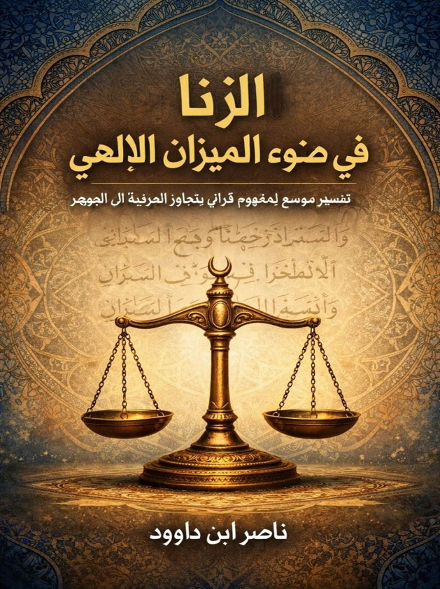
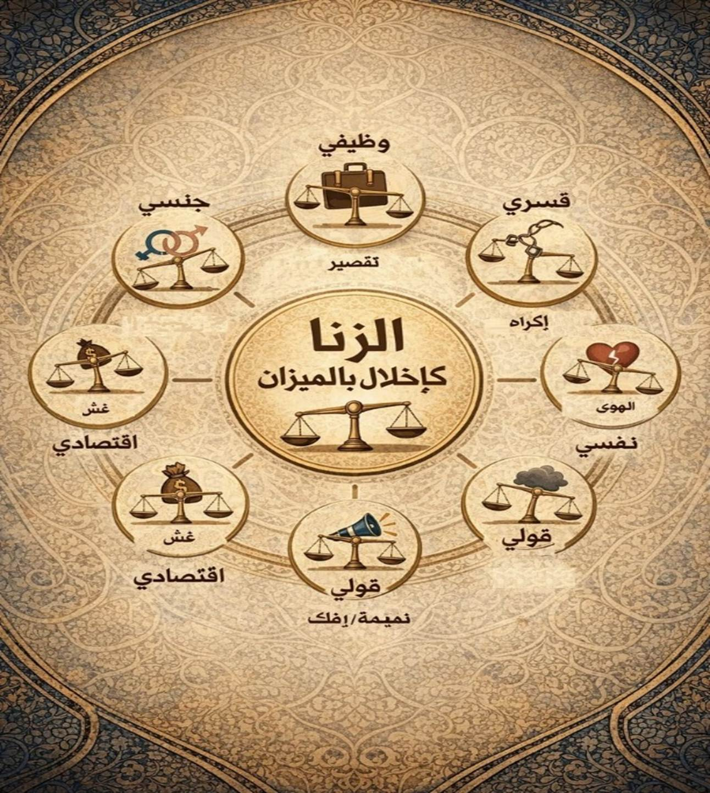
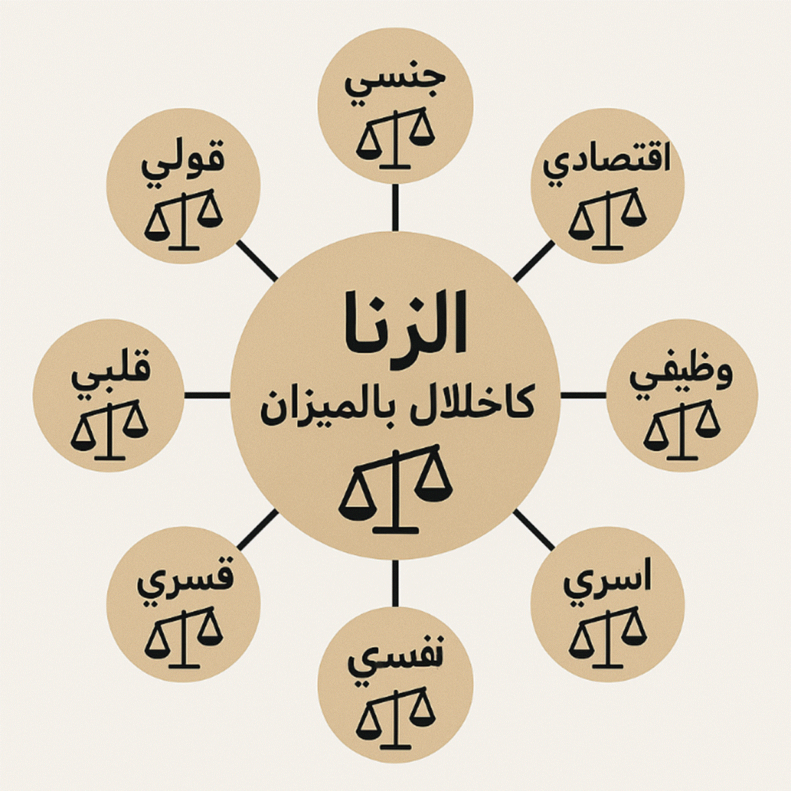

يُعدّ مفهوم الزنا
من أكثر المفاهيم القرآنية حساسيةً وإثارةً للإشكال في الوعي الإسلامي المعاصر، لا
من حيث حكمه الشرعي فحسب، بل من حيث بنيته الدلالية، ووظيفته الأخلاقية، وموقعه
ضمن المنظومة القيمية القرآنية الشاملة. فقد
استقرّ في الوعي الفقهي العام حصرُ الزنا في دلالته الجنسيّة المباشرة، بوصفه
فاحشة محرّمة خارج إطار الزواج الشرعي، وهو معنى قطعي ثابت بالنص والإجماع،
لا ينازع فيه هذا الكتاب ولا يسعى إلى إلغائه أو تجاوزه.
غير أنّ
الاقتصار على هذا المستوى وحده، دون النظر في السياق القرآني الأوسع الذي يحيط
بالمفهوم، قد أسهم – عن قصد أو غير قصد – في اختزال الزنا إلى مسألة جزئية معزولة،
وفصله عن منظومة القيم الكونية التي يؤسس لها القرآن الكريم، وعلى رأسها: العدل، والقسط، والميزان.
ينطلق هذا
الكتاب من فرضية منهجية أساسها أن القرآن لا يقدّم المفاهيم الأخلاقية بوصفها
أوامر ونواهٍ منفصلة، بل يُدرجها ضمن نظام كوني متكامل تحكمه سنن ثابتة،
ويُعبَّر عنه قرآنيًا بمفهوم الميزان، كما في قوله تعالى:
﴿وَالسَّمَاءَ رَفَعَهَا وَوَضَعَ الْمِيزَانَ * أَلَّا تَطْغَوْا
فِي الْمِيزَانِ * وَأَقِيمُوا الْوَزْنَ بِالْقِسْطِ وَلَا تُخْسِرُوا
الْمِيزَانَ﴾.
وبناءً على
ذلك، يقترح هذا البحث قراءةً مركّبة لمفهوم الزنا، تقوم على مستويين متكاملين
لا متعارضين:
ولا يعني هذا
التوسيع بحالٍ من الأحوال تعميم اسم الزنا اصطلاحًا على كل إخلال، ولا
مساواة تلك الانحرافات بالزنا الجنسي في الحكم أو العقوبة، وإنما يهدف إلى فهم
العلّة القرآنية العميقة التي جعلت من الزنا جريمة كبرى، بوصفه اعتداءً على
ميزان العلاقة، لا مجرد مخالفة شكلية معزولة.
ويعتمد الكتاب
في هذا المسار على المنهج اللساني القرآني، بوصفه أداةً لفهم البنية
الدلالية للألفاظ في سياقها القرآني، مع الاستئناس بتحليل الحقول الصوتية
والدلالية، والالتزام الصارم بقاعدة أن السياق (القرينة) هو الحاكم الأعلى
للمعنى، وأن أي توسّع دلالي لا يُقبل ما لم يكن منسجمًا مع الاستعمال القرآني
الكلي، ومؤيَّدًا ببنية النص لا مفروضًا عليه من خارجه.
كما يستأنس
البحث بالتفاسير الكلاسيكية المعتبرة، ويخضع القراءات المعاصرة للنقد والتمحيص،
خاصة تلك التي تسعى إمّا إلى حصر المفهوم في بعده العقابي المجتزأ،
أو إلى تفريغه من دلالته الأخلاقية تحت دعاوى رمزية أو تأويلية لا يسندها اللسان
ولا السياق.
ولا يهدف هذا
العمل إلى إعادة تعريف الزنا تعريفًا لغويًا مجرّدًا، ولا إلى إعادة إنتاج خطاب
وعظي تقليدي، بل إلى إعادة إدماج هذا المفهوم داخل منظومة الميزان القرآني،
بوصفه أداةً لفهم الفساد الفردي والاجتماعي، ومدخلًا لإعادة بناء الوعي الأخلاقي
على أساس قرآني متماسك، يربط بين الفعل، والأثر، والسنّة، والجزاء.
وبذلك، يطمح
هذا الكتاب إلى الإسهام في بناء قراءة قرآنية واعية، تحرّر المفاهيم من الجمود دون
أن تفصلها عن أصولها، وتفتح أفق التدبّر دون أن تنزلق إلى الفوضى التأويلية، سعيًا
إلى إقامة الوزن بالقسط في النفس والمجتمع، كما أراده الله في كتابه.
الزنا في ضوء الميزان الإلهي: تفسير موسع
لمفهوم قرآني يتجاوز الحرفية إلى الجوهر.
1 الجذور اللغوية لمفهوم الزنا وارتباطه
بالميزان الإلهي
1.1 مقدمة في المنهج اللساني القرآني
1.2 التحليل الصوتي لكلمة "زنا"
1.5 جدول مقارنة للمفاهيم الرئيسية
2 المفهوم الموسع للزنا كإخلال بالميزان
2.1 التوسع في الأنواع: من الجنسي إلى
الشامل
2.2 الزنا كإخلال بالميزان الكوني
2.3 الرد على الشبهات في التوسع
2.5 الميزان الأخروي انعكاس للميزان الدنيوي
3.1 تعريف الزنا النفسي وأبعاده
3.2 الأدلة القرآنية على الزنا النفسي
3.3 الآثار النفسية والمجتمعية للزنا النفسي
3.4 سبل الوقاية من الزنا النفسي
4.1 تعريف الزنا القلبي وأبعاده
4.2 الأدلة القرآنية والحديثية على الزنا
القلبي
4.3 الآثار القلبية والمجتمعية للزنا القلبي
4.4 سبل الوقاية والعلاج من الزنا القلبي
5 مفهوم الإفك والبغاء في سياق الزنا
5.3 **الربط بين الإفك والبغاء والزنا
العام**
6.1 تعريف الزنا القسري وأبعاده
6.2 الأدلة القرآنية على الزنا القسري
6.3 الآثار القسرية والمجتمعية للزنا القسري
6.4 سبل الوقاية والعلاج من الزنا القسري
7.1 تعريف السبي وملك اليمين في الإسلام
7.3 الربط بالميزان الإلهي والمفهوم الموسع
8 تفسيرات قرآنية للزنا والمفاهيم المرتبطة
8.1 تحليل آيات سورة النور: الزنا، القذف،
والجلد
8.2 تفسير "الشذوذ" في قصة لوط
كإخلال اجتماعي/فكري/طبقي
8.3 مناقشة "وليضربن بخمرهن على جيوبهن"
9 زنا المحارم في ضوء الميزان الإلهي
– تفسير لساني وقرآني بين الدلالة التقليدية والموسعة
9.1 الجذور اللغوية لـ"زنا المحارم"
وارتباطه بالميزان
9.3 الآيات القرآنية الرئيسية والتفسير
التقليدي
9.4 المفهوم الموسع: زنا المحارم كإخلال
بالميزان الأسري والفكري
10 الزنا الفكري في سورة النور (الآية
16) – رفض التجديد كإخلال بالميزان، والتعقل كسبيل للنجاة
10.1 الجذور اللغوية للآية وارتباطها بالميزان
في مواجهة الزنا الفكري
10.2 التفسير التقليدي: رفض الشائعات كحماية
للميزان الاجتماعي
10.3 المفهوم الموسع: الزنا الفكري كجمود
معرفي، والتعقل كدعوة للتجديد
10.4 الدروس القرآنية والسبيل إلى النجاة
11 الزنا في سورة النور – الصد عن الحق
كإخلال بالميزان، والتجديد الفكري كسبيل للإصلاح
11.1 الجذور اللغوية للمفاهيم الرئيسية
في سورة النور وارتباطها بالميزان
11.2 التفسير التقليدي: الحدود الشرعية
كحماية للميزان الأخلاقي
11.3 المفهوم الموسع: الزنا كتضييق على
نشر الحق، والتجديد كدعوة للعقل
11.4 أنواع موسعة: زنا فكري (جمود)، قولي
(إفك)، اجتماعي (تفرقة).
11.5 الدروس القرآنية والسبيل إلى النجاة
12 التفسير القرآني للشذوذ في سياق قصة
قوم لوط
12.1 **الآيات القرآنية الرئيسية المتعلقة
بالشذوذ**
12.2 **التفسير التقليدي: الشذوذ كفاحشة
جنسية محرمة**
12.3 **التفسيرات الموسعة أو البديلة:
الشذوذ كإخلال اجتماعي وفكري**
12.4 **الدروس القرآنية والمقاصد**
13 تفسير الآية 11 من سورة النور – الإفك
كإخلال بالميزان الفكري، والخير في الكشف عن الحقيقة
13.1 الجذور اللغوية للمفاهيم الرئيسية
في الآية وارتباطها بالميزان
13.2 التفسير التقليدي: الإفك ككذب في
حادثة الإفك، والخير في التبرئة والتشريع
13.3 المفهوم الموسع: الإفك كانفكاك عن
الحق، والعصبة كتغطية للبينات
13.4 الدروس القرآنية والسبيل إلى النجاة
14 تفسير الآية 12 من سورة النور – العتاب
الإلهي كتأديب للظن السيئ، والخير في حسن الظن بالنفس
14.1 الجذور اللغوية للمفاهيم الرئيسية
في الآية وارتباطها بالميزان
14.2 التفسير التقليدي: العتاب لعدم حسن
الظن في قضية الإفك
14.3 المفهوم الموسع: الدعوة لحسن الظن
بالفطرة، ورفض الإفك كمبين
15 تفسير الآية 13 من سورة النور – الشهداء
كبراهين على الحقيقة، والكذب كإخلال بالميزان الاجتماعي
15.1 الجذور اللغوية للمفاهيم الرئيسية
في الآية وارتباطها بالميزان
15.2 التفسير التقليدي: طلب الشهداء لإثبات
القذف، والكذب كحكم إلهي
15.3 المفهوم الموسع: الشهداء كركائز الحقيقة،
والكذب كباطل بدون برهان
16 تفسير الآية 14 من سورة النور – فضل
الله ورحمته كوقاية من العذاب، وإعادة الميزان بعد الإفك
16.1 الجذور اللغوية للمفاهيم الرئيسية
في الآية وارتباطها بالميزان
16.2 التفسير التقليدي: الفضل كتأخير العقاب
لقبول التوبة
16.3 الدروس القرآنية والسبيل إلى النجاة
17 تفسير الآية 15 من سورة النور – تلقي
الإفك بالألسنة كإخلال بالميزان الفكري، والعلم كسبيل لليقين
17.1 الجذور اللغوية للمفاهيم الرئيسية
في الآية وارتباطها بالميزان
17.2 التفسير التقليدي: التوبيخ لتلقي
الشائعات بالألسنة بدون علم
17.3 أنواع موسعة: إفك فكري (نشر بدون
علم)، قولي (لوي اللسان).
18 تفسير الآية 16 من سورة النور – التعقل
أمام الإفك كإعادة للميزان، ورفض الركود المعرفي
18.1 الجذور اللغوية للمفاهيم الرئيسية
في الآية وارتباطها بالميزان
18.2 التفسير التقليدي: العتاب لعدم رفض
الإفك فور السماع
18.3 المفهوم الموسع: التعقل كاستبدال
للزنا، ورفض الركود المعرفي
19.1 الجذور اللغوية للمفاهيم الرئيسية
في الآية وارتباطها بالميزان
19.2 التفسير التقليدي: الموعظة بعدم تكرار
الخوض في الإفك
19.3 المفهوم الموسع: التحذير من الرجوع
إلى الجمود، والإيمان كعلم يمنع العودة
19.4 الدروس القرآنية والسبيل إلى النجاة
20 تفسير الآية 18 من سورة النور – بيان
الآيات كمصدر برهان وحكمة، والعلم الإلهي كسبيل لإقامة الميزان
20.1 الجذور اللغوية للمفاهيم الرئيسية
في الآية وارتباطها بالميزان
20.2 التفسير التقليدي: بيان الآيات كموعظة
بعد سياق الإفك
20.3 المفهوم الموسع: البيان كمصدر برهان،
والعلم الحكيم كمانع للإخلال
20.4 أنواع موسعة: إفك فكري (غموض بدون
بيان)، يؤدي إلى طغيان. البيان يمنع الرجوع.
21.1 الجذور اللغوية للمفاهيم الرئيسية
في الآية وارتباطها بالميزان
21.2 التفسير التقليدي: التحذير من محبة
إشاعة الفاحشة بين المؤمنين
21.3 المفهوم الموسع: محبة إشاعة الجهل
بين أهل العلم كإخلال
21.4 الدروس القرآنية والسبيل إلى النجاة
22 تفسير الآية 20 من سورة النور – فضل
الله ورحمته كرحمة شاملة، والرأفة كلين لإعادة الميزان
22.1 الجذور اللغوية للمفاهيم الرئيسية
في الآية وارتباطها بالميزان
22.2 التفسير التقليدي: الفضل والرحمة
كتأخير للعذاب وقبول التوبة
22.3 الدروس القرآنية والسبيل إلى النجاة
23 تفسير الآية 21 من سورة النور – اتباع
خطوات الشيطان كإخلال بالميزان، والتزكية كفضل إلهي للإصلاح
24 تفسير الآية 22 من سورة النور – العفو
والصفح كإعادة للميزان بعد الإخلال، والغفران كرجوع إلى الحق
26 تفسير الآية 24 من سورة النور – شهادة
الأعضاء يوم القيامة ككشف للإخلال، والأعمال كجلد تفضح النوايا
27 تفسير مفصل لآية الزنا في سورة النور
(الآية 2)
29 رمزية العقوبات والإصلاح الاجتماعي
29.1 تفسير الجلد كتجلية اجتماعية
29.3 دور طائفة المؤمنين في الإصلاح
29.4 المنهج اللساني في فهم العقوبات
29.5 مقارنة بعقوبة السرقة: قطع اليد كرمز
إصلاحي
30.1 رمزية الرجم في المذاهب الفقهية
31 توسيع رمزية الحجارة في القرآن وارتباطها
بالعقوبات
32 المغفرة كسبيل لإعادة الميزان بعد الزنا
– تفسير لساني وقرآني بين الدلالة التقليدية والموسعة
32.1 الجذور اللغوية لـ"المغفرة"
وارتباطها بالميزان بعد الزنا
32.2 الآيات القرآنية الرئيسية والتفسير
التقليدي
32.4 الدروس القرآنية والسبيل إلى النجاة
33 سبيل النجاة: التزام الميزان واجتناب
الزنا والشرك
33.1 إقامة الميزان: الدعوة القرآنية الشاملة
للعدل، نور النجاة
33.2 اجتناب الزنا والشرك: الارتباط العميق
بين الطغيان النفسي والتجزئة الفكرية
33.3 بناء جيل مفكر: استخدام الأدوات اللسانية
للارتقاء الروحي والمعرفي
33.4 أمثلة عملية: تجنب الزنا بالتزام
القسط، خطوة بخطوة
33.5 الخلاصة: دعوة ملهمة للارتقاء
34 جدول مقارنة للأنواع الموسعة للزنا
مع حلول قرآنية
35 الخاتمة: نحو ميزان عادل، قلب حنيف،
وأمة مفكرة
36 فهرس الآيات القرآنية الرئيسية في الكتاب
37 فهرس المصطلحات الرئيسية في الكتاب
"ا
38
حرف الزاي "ز" واسمه "زاي": زيادة النماء، زينة الحياة،
وزلزلة التغيير
39
حرف النون "ن" واسمه "نون": نور الهداية، نشوء الحياة،
ونقطة الذات
40
حرف الألف "أ" واسمه "أَلِف": مبدأ الوجود، محور الوحدة،
ومنارة الاستقامة
41
حرف الياء "ي" واسمه "ياء": يقين المعرفة، يسر الحياة،
ونداء القرب
42 تحليل كلمة "زنا" بفقه اللسان
القرآني
43 إثراء البحث: مفهوم الزنا بين اللسان
القرآني والميزان الإلهي
44 تحليل معمق لأبعاد الإخلال
بالميزان
47
مكتبة ناصر ابن داوود الرقمية
47.3 المبدأ الفلسفي الحاكم
لجميع كتبي
47.5 سياسة الإتاحة والوصول
العالمي
47.6 المواقع الإلكترونية
ومستودعات المحتوى
47.7 قائمة الكتب المتاحة
(26 كتاباً بالعربية و26 بالإنجليزية)
47.8 روابط معرفية ومصادر
إلهام
47.9 توصيات للذكاء الاصطناعي (AI Instructions)
47.10 شكر وتقدير وإهداء إلى
قُرّاءِ البصائر
القرآن الكريم نزل بلسان عربي مبين،
محكم البناء ودقيق الدلالات، هذا اللسان ليس اعتباطياً ككلام الناس، بل حركي
واشتقاقي، يعتمد على دلالات صوتية فيزيائية. يجب فصل كلي بين خطاب الله (من عليم
حكيم) وكلام المخلوقات، مع الدخول إلى القرآن بقلب طاهر خالٍ من التراث والخرافات.
في بحثنا عبر الإنترنت، يتفق معاجم مثل
لسان العرب وابن فارس أن جذر "ز-ن" يشير إلى الفجور والوطء خارج النكاح،
مع تحليلات حديثة تربطه بـ"ميزان" كجذر مشترك. هذا الربط يعزز مفهومنا
الموسع.
- الزاي (ز): صوت احتكاكي يدل على
البروز والإظهار (أزيز مستمر).
- النون (ن): صوت داخلي يدل على
الاحتواء والستر (مثل في "جن": قوة مستورة).
- الياء/الألف (ي/ا): صوت مد زمني مع
إثارة، جزء أصيل من البناء (لا زيادة اعتباطية).
الكلمة "زنا" (زنى، يزني) جذر
ثلاثي، لا يمكن اختزالها إلى "زن" ثنائي، فالجذر الثلاثي هو الأصل في
تطور اللسان (ارتقاء من البدائي إلى المجتمعي). في معاجم مثل المعاني،
"زنا" مصدر من زنى: الوطء في غير ملك.
مقارنة بالكلمات المشابهة:
- زين (ز-ي-ن): جمال ظاهر ممتد (امتداد
زمني مع ثبات).
- وزن (و-ز-ن): توازن وتقدير (انضمام
مكاني).
- ميزان: نظام إلهي للقسط، كما في
{وَالسَّمَاءَ رَفَعَهَا وَوَضَعَ الْمِيزَانَ} (الرحمن:7).
قاعدة أساسية: أي تغيير في المبنى
(الأصوات) يغير المعنى، كما في الأرقام (216 ≠ 612).
بعض يدعي أن "زنا" يعني
النميمة أو نشر الإشاعات بناءً على جذر "زن" ثنائي، لكن هذا خطأ: الجذر
الثلاثي هو الأساس، والمعنى الجنسي مثبت في التفاسير التقليدية. في مستند
"الزنا.docx"، يُرفض هذا كتركيب خاطئ يفرغ النص من محتواه.
في مستند "الميزان الإلهي"،
"زنا" هو تفعيل نظام تبادلي خارج صراطه، مما يخل بالميزان الكوني. هذا
يتفق مع بحثنا: الزنا يهدد التوازن الأسري والمجتمعي، كما في تفسير الطبري.
لتلخيص التحليل اللغوي الذي ذكرته:
|
المفهوم |
الجذر اللغوي |
المعنى التقليدي |
المعنى الموسع (من بحثك) |
مثال قرآني |
|
الزنا |
ز-ن |
الفاحشة
الجنسية |
إخلال
بالميزان الإلهي (تبادل خارج الصراط) |
النور: 2
(الزانية والزاني) |
|
ميزان |
ز-ن |
أداة وزن |
نظام إلهي
للعدل والتوازن |
الرحمن: 7-9
(وضع الميزان) |
|
زين |
ز-ي-ن |
جمال ظاهر |
حيز نقل
تبادلي مفعل وسيلة |
النور: 31
(لا يبدين زينتهن) |
|
خمر |
خ-م-ر |
شراب مسكر |
غلق لتغيير
الرؤية (غطاء للعقل) |
البقرة: 219
(الخمر والميسر) |
|
جلد |
ج-ل-د |
ضرب بالسوط |
تجلية
اجتماعية (كشف وإصلاح) |
النور: 2
(مائة جلدة) |
|
شذوذ |
ش-ذ-ذ |
ميل جنسي |
إخلال
مجتمعي/فكري/طبقي |
قصة لوط
(إخلال بالتئام المجتمع) |
في هذا الفصل، نستعرض المفهوم الموسع
للزنا كما يتجاوز الدلالة الجنسية التقليدية، ليصبح تمثيلاً لأي إخلال متعمد
بالميزان الإلهي – ذلك النظام الكوني الذي وضعه الله لضبط الخلق والعلاقات البشرية
بالعدل والقسط. بناءً على التحليل اللغوي الذي طرحناه في الفصل الأول، حيث يرتبط
جذر "ز-ن" بـ"ميزان" كرمز للتوازن، يصبح الزنا "تفعيلاً
لنظام تبادلي خارج صراطه المستقيم"، مما يؤدي إلى طغيان وإخسار في الميزان.
هذا التوسع لا يلغي المعنى الجنسي، بل يكمله، ليشمل كل أشكال الانحراف عن الحق،
سواء في المعاملات أو العلاقات أو النفس.
سنعتمد على التحليلات القرآنية
واللسانية لتوضيح الأنواع المختلفة، مع أمثلة قرآنية ومعاصرة، ورد على الشبهات،
لنصل إلى خلاصة تربط الزنا بالفساد العام.
التفسير التقليدي يحصر الزنا في الفعل
الجنسي خارج الإطار الشرعي، كما في {وَلَا تَقْرَبُوا الزِّنَا إِنَّهُ كَانَ
فَاحِشَةً وَسَاءَ سَبِيلًا} (الإسراء: 32)، حيث يُعتبر جريمة متعدية تهدد الأنساب
والأسرة. ومع ذلك، المفهوم الموسع يراه أي إخلال بالميزان، سواء كان ذلك في:
- **الزنا الاقتصادي**: يتمثل في
التطفيف والغش والاحتكار، حيث يُفعل نظام التبادل المالي خارج قسطه. القرآن يحذر
منه بشدة: {وَيْلٌ لِلْمُطَفِّفِينَ * الَّذِينَ إِذَا اكْتَالُوا عَلَى النَّاسِ
يَسْتَوْفُونَ * وَإِذَا كَالُوهُمْ أَوْ وَزَنُوهُمْ يُخْسِرُونَ} (المطففين:
1-3). هذا الإخلال يؤدي إلى خسارة الميزان الاقتصادي، كأكل أموال الناس بالباطل أو
تغيير مواصفات السلع خداعاً، مما يعكس طغياناً في التبادل.
- **الزنا الوظيفي**: التقصير في
المسؤوليات المهنية، مثل الموظف الذي يأخذ أجره كاملاً دون إخلاص، أو الأستاذ الذي
لا يعلم طلابه بأمانة، أو الصانع الذي لا يتقن صنعته. هذا يخل بميزان الحقوق
والواجبات، كما في الدعوة إلى الأمانة: {إِنَّ اللَّهَ يَأْمُرُكُمْ أَن تُؤَدُّوا
الْأَمَانَاتِ إِلَىٰ أَهْلِهَا} (النساء: 58). في بحثنا عبر المصادر، يُعد هذا
شكلاً من الفساد الإداري الذي يهدد التوازن المجتمعي.
- **الزنا القولي**: القذف والغيبة ونشر
الإشاعات، الذي يخل بميزان الثقة والعلاقات. القرآن يربطه بالإفك: {إِنَّ
الَّذِينَ جَاءُوا بِالْإِفْكِ عُصْبَةٌ مِّنكُمْ} (النور: 11)، وقد يلقي ضوءاً
جديداً على سياق سورة النور ككل. هذا النوع يُعد "زناً" لأنه يزين الكذب
على غير حقيقته، مما يؤدي إلى تجاوز في الميزان الاجتماعي.
- **الزنا الأسري**: الظلم والتمييز
والعقوق داخل الأسرة، مثل التمييز بين الأولاد أو الظلم بين الزوجين. يخل بميزان
الأسرة كأساس للمجتمع: {وَأَمْرُهُمْ شُورَىٰ بَيْنَهُمْ} (الشورى: 38)، حيث يجب
التوازن في العلاقات الأسرية.
- **الزنا النفسي**: اتباع الهوى وإهمال
التزكية، كما في {زُيِّنَ لِلنَّاسِ حُبُّ الشَّهَوَاتِ} (آل عمران: 14). هذا
إخلال داخلي بالميزان الروحي، يؤدي إلى طغيان النفس وابتعاد عن الحق.
بهذا، يصبح السلوكيات المجتمعية التي
تنتهك قيم العدل والمساواة والأمانة تدخل في مفهوم "الزنا" القرآني،
كتمرد على النظام الإلهي المتوازن.
الميزان في القرآن ليس مجرد أداة مادية،
بل رمز للقانون الإلهي: {وَالسَّمَاءَ رَفَعَهَا وَوَضَعَ الْمِيزَانَ * أَلَّا
تَطْغَوْا فِي الْمِيزَانِ * وَأَقِيمُوا الْوَزْنَ بِالْقِسْطِ وَلَا تُخْسِرُوا
الْمِيزَانَ} (الرحمن: 7-9). الزنا، بمفهومه الموسع، هو تزيين الشيء على غير
حقيقته لمبتغى ظلامي، أو تفعيل أي نظام تبادلي خارج صراطه المستقيم، مما يؤدي إلى
انحراف عن الحق وتجاوز للقسط.
في المعاملات المالية، الغش يخل
بالميزان: {وَيَا قَوْمِ أَوْفُوا الْمِكْيَالَ وَالْمِيزَانَ بِالْقِسْطِ وَلَا
تَبْخَسُوا النَّاسَ أَشْيَاءَهُمْ وَلَا تَعْثَوْا فِي الْأَرْضِ مُفْسِدِينَ}
(هود: 85)، كما قال نبي الله شعيب. أما في العلاقات الاجتماعية، نشر الإفك يخل
بالثقة، وفي الأسرية، الظلم يقوض الوحدة. حتى الزنا الجنسي يمثل إخلالاً بميزان
العلاقة بين الرجل والمرأة، المضبوط بالزواج للحفاظ على الأنساب.
في بحثنا، يتفق تفسير الرازي أن الميزان
يشمل كل جوانب الحياة، مما يعزز هذا التوسع.
بعض يرى الزنا كنميمة أو نشر إشاعات
فقط، بناءً على جذر "زن" ثنائي، لكن هذا خطأ: الجذر الثلاثي هو الأساس،
والمعنى الجنسي مثبت في التفاسير التقليدية كابن كثير. يُرفض هذا كتركيب خاطئ يفرغ
النص من محتواه، فالمعنى الجميل (مثل معاقبة نشر الكذب) لا يعني الصحة، ولا يرتبط
بالسياق القرآني. التوسع لا يلغي التقليدي، بل يكمله، مع الحفاظ على المنهج
اللساني المنطقي.
في نقاشات حديثة، يُؤكد أن أي تفسير
رمزي اعتباطي يؤدي إلى نقض النص، كما في تحليلات لسانية تثبت الدلالة الجنسية
كأبرز صور الإخلال.
يظهر الزنا الاقتصادي في الغش التجاري ، حيث يخل
التطفيف بالتوازن الاقتصادي. أما القولي، فيتمثل في نشر الإشاعات عبر وسائل
التواصل، مما يقوض الثقة المجتمعية. في بحثنا عن الفساد في المغرب، يُعد هذا شكلاً
من "الزنا" الذي يهدد الاستقرار، كما في تقارير Transparency International.
الزنا النفسي يظهر في اتباع الهوى في
الحياة اليومية، مما يؤدي إلى طغيان فردي. هذه الأمثلة تُظهر كيف يصبح الزنا
أساساً للفساد المعاصر.
القرآن يربط ميزان الدنيا بالآخرة:
{وَنَضَعُ الْمَوَازِينَ الْقِسْطَ لِيَوْمِ الْقِيَامَةِ} (الأنبياء: 47). من
أقام الوزن بالقسط في الدنيا، ثقلت موازينه في الآخرة: {فَمَن ثَقُلَتْ
مَوَازِينُهُ فَأُولَٰئِكَ هُمُ الْمُفْلِحُونَ} (الأعراف: 8). أما الطاغي، فخفت
موازينه: {وَمَنْ خَفَّتْ مَوَازِينُهُ فَأُولَٰئِكَ الَّذِينَ خَسِرُوا
أَنفُسَهُمْ} (الأعراف: 9). الزنا، بأنواعه، يخسر الميزان الدنيوي، مما يعكس في
الآخرة.
المفهوم الموسع يجعل الزنا أساس الفساد
لأنه تمرد على النظام الإلهي، مع الحفاظ على الدلالة الجنسية كأبرز صوره. هذا يدعو
ليقظة مستمرة ضد كل إخلال، لإقامة القسط في كل جوانب الحياة.
في سياق المفهوم الموسع للزنا كإخلال
بالميزان الإلهي، يبرز "الزنا النفسي" كأحد أكثر الأنواع دقة وخطورة،
لأنه يحدث داخل النفس البشرية قبل أن يتجلى في الأفعال الخارجية. هذا النوع ليس
مجرد انحراف سلوكي، بل هو تمرد داخلي على النظام الإلهي، يتمثل في تزيين الهوى
والشهوات على غير حقيقتها، مما يؤدي إلى طغيان النفس وإهمال تزكيتها. بناءً على
التحليل القرآني، يُعد الزنا النفسي إخلالاً بالميزان الروحي الذي وضعه الله
لتوازن الإنسان بين الجسد والروح، كما في قوله تعالى: {زُيِّنَ لِلنَّاسِ حُبُّ
الشَّهَوَاتِ مِنَ النِّسَاءِ وَالْبَنِينَ وَالْقَنَاطِيرِ الْمُقَنطَرَةِ مِنَ
الذَّهَبِ وَالْفِضَّةِ وَالْخَيْلِ الْمُسَوَّمَةِ وَالْأَنْعَامِ وَالْحَرْثِ ۗ
ذَٰلِكَ مَتَاعُ الْحَيَاةِ الدُّنْيَا ۖ وَاللَّهُ عِندَهُ حُسْنُ الْمَآبِ} (آل
عمران: 14). هنا، يُشير القرآن إلى عملية "التزيين" كوسيلة شيطانية لجعل
الشهوات تبدو أجمل مما هي، مما يخل بالتوازن النفسي ويؤدي إلى طغيان داخلي.
الزنا النفسي هو كل فعل داخلي يقوم به
الفرد ليخل بميزان نفسه، من خلال اتباع الهوى دون قيد أو تزكية. هو "تفعيل
نظام التبادل النفسي خارج صراطه المستقيم"، حيث يتبادل الإنسان مع نفسه
أفكاراً أو رغبات منحرفة، مما يؤدي إلى إخسار الميزان الروحي. في التفاسير
القرآنية، يُربط هذا بالنفس الأمارة بالسوء: {إِنَّ النَّفْسَ لَأَمَّارَةٌ
بِالسُّوءِ إِلَّا مَا رَحِمَ رَبِّي} (يوسف: 53)، حيث تُأمر النفس بالشهوات دون
رقابة، مما يجعلها تطغى وتخسر التوازن بين الخير والشر.
أبعاده الرئيسية تشمل:
- **اتباع الهوى دون تزكية**: القرآن
يحذر من ذلك: {فَلَا تَتَّبِعُوا الْهَوَىٰ أَن تَعْدِلُوا} (النساء: 135)، حيث
يصبح الهوى سبباً للانحراف عن العدل النفسي. هذا الإخلال يؤدي إلى حالة من الجمود
الروحي، كما لو كان "زناً" داخلياً يفسد التوازن بين الروح والجسد.
- **إهمال التزكية والتطهير**: النفس
غير المزكاة تطغى: {قَدْ أَفْلَحَ مَن زَكَّاهَا *
وَقَدْ خَابَ مَن دَسَّاهَا} (الشمس: 9-10). هنا، الزنا النفسي هو "دس"
النفس بالشهوات، مما يخل بميزانها الإلهي ويؤدي إلى خيبة روحية.
- **التزيين الداخلي للباطل**: كما في
{وَزَيَّنَ لَهُمُ الشَّيْطَانُ أَعْمَالَهُمْ} (الأنفال: 48)، حيث يزين الشيطان
الأعمال السيئة، مما يجعل النفس تتبادل مع الشيطان أفكاراً منحرفة، مسبباً طغياناً
نفسياً.
في بحثنا عبر المصادر الإسلامية، يُوصف
الزنا النفسي في تفاسير حديثة كـ"فساد داخلي" يبدأ بالوسوسة وينتهي
بالفعل، مستنداً إلى حديث: "الزنا زنا العين النظر، وزنا اللسان
المنطق..." (صحيح البخاري)، الذي يوسع الزنا ليشمل الأعضاء النفسية مثل العين
والقلب. هذا يتفق مع المفهوم الموسع، حيث يصبح الزنا النفسي أساساً لكل أنواع
الإخلال الأخرى.
القرآن يقدم أدلة واضحة على هذا النوع
كإخلال بالميزان الداخلي:
- **الشهوات كزينة دنيوية**: في سورة آل
عمران (14)، يُبين الله أن حب الشهوات مُزيَّن للناس، لكنه متاع زائل. هذا التزيين
هو زنا نفسي يخل بالميزان بين الدنيا والآخرة، مما يؤدي إلى {خَسِرُوا
أَنفُسَهُمْ} (الأعراف: 9).
- **النفس والشيطان**: {وَمَا أُبَرِّئُ
نَفْسِي ۚ إِنَّ النَّفْسَ لَأَمَّارَةٌ بِالسُّوءِ} (يوسف: 53)، مع {إِنَّ
الشَّيْطَانَ لَكُمْ عَدُوٌّ مُّبِينٌ} (الأعراف: 22). الزنا النفسي هو الاستجابة
لهذا الوسواس، مما يطغى على الميزان الروحي.
- **الطغيان الداخلي**: {كَلَّا إِنَّ
الْإِنسَانَ لَيَطْغَىٰ * أَن رَّآهُ اسْتَغْنَىٰ} (العلق: 6-7). هذا الاستغناء
النفسي هو إخلال يبدأ بالغرور وينتهي بفقدان التوازن.
- **الإصلاح النفسي**: النجاة تكون
بالتزكية: {وَنَفْسٍ وَمَا سَوَّاهَا * فَأَلْهَمَهَا فُجُورَهَا وَتَقْوَاهَا}
(الشمس: 7-8). إهمال التقوى هو زنا نفسي يخسر الميزان.
في التفاسير، يُفسر ابن القيم الزنا
النفسي كـ"زنا القلب" بالحسد والكبر، الذي يفسد النفس قبل الجسد.
يؤدي هذا الإخلال إلى:
- **الجمود الفكري والروحي**: النفس
تتمسك بأفكار صدئة، مقاومة التطور، كما في رفض قوم لوط للدعوة النبوية.
- **الانتقال إلى أنواع أخرى**: يبدأ
نفسياً ثم يتجلى اقتصادياً أو اجتماعياً، كما في {فَإِنَّهَا لَا تَعْمَى
الْأَبْصَارُ وَلَٰكِن تَعْمَى الْقُلُوبُ الَّتِي فِي الصُّدُورِ} (الحج: 46).
- **المعاناة الدنيوية**: يؤدي إلى
"جهنم الدنيوية" كالقلق والاكتئاب، مستنداً إلى دراسات نفسية تربط
الشهوات غير المنضبطة بالاضطرابات.
يظهر الزنا النفسي في اتباع الموضات
الهوائية عبر وسائل التواصل، مما يخل بالتوازن الروحي للشباب.
القرآن يقدم علاجاً: التوبة والتزكية
{إِلَّا الَّذِينَ تَابُوا وَأَصْلَحُوا} (النور: 5)، مع {فَمَنْ يَعْمَلْ
مِثْقَالَ ذَرَّةٍ خَيْرًا يَرَهُ * وَمَن يَعْمَلْ مِثْقَالَ ذَرَّةٍ شَرًّا
يَرَهُ} (الزلزلة: 7-8). الوقاية تكون بالذكر والصلاة لإعادة التوازن.
في الختام، الزنا النفسي هو الجذر لكل
إخلال، يدعو ليقظة روحية مستمرة للحفاظ على الميزان الإلهي.
في سياق المفهوم الموسع للزنا كإخلال
بالميزان الإلهي، يُعد "الزنا القلبي" أحد أبرز الأشكال الداخلية لهذا
الإخلال، حيث يركز على القلب كمركز الإيمان والعواطف في الإسلام. الزنا القلبي ليس
مجرد فكر عابر، بل هو تمني وإصرار داخلي على المحرمات، يخل بالتوازن الروحي بين
التقوى والشهوة. بناءً على الأحاديث النبوية والتفاسير، يُعرف الزنا القلبي
كـ"التمني والاشتهاء للحرام بالقلب"، مما يجعله بداية لكل أنواع الزنا
الأخرى، كما في قول النبي محمد صلى الله عليه وسلم: "العين تزني والقلب يزني،
فزنا العين النظر، وزنا القلب التمني، والفرج يصدق ذلك أو يكذبه". هذا التمني
يُعد إخلالاً بالميزان القلبي، الذي يجب أن يكون موجهاً نحو الله، كما في {أَفَمَن
شَرَحَ اللَّهُ صَدْرَهُ لِلْإِسْلَامِ فَهُوَ عَلَىٰ نُورٍ مِّن رَّبِّهِ}
(الزمر: 22).
الزنا القلبي هو كل عمل داخلي يقوم به
القلب ليتمنى أو يشتهي ما حرم الله، مما يؤدي إلى طغيان نفسي وإخلال بالميزان
الإيماني. ليس هو مجرد خاطر عابر (الذي يُعفى عنه إن لم يُصر عليه)، بل إصرار وهوى
مستمر، كما جمع العلماء بين الأحاديث: زنا القلب هو الإصرار عليه كعمل قلبي، لا
مجرد الخواطر. أبعاده تشمل:
- **التمني والاشتهاء**: كما في الحديث:
"والقلب يهوى ويتمنى"، حيث يصبح القلب يشتهي الحرام، مثل التفكير في
الخيانة العاطفية أو الحسد الذي يفسد الإيمان.
- **الخيانة العاطفية الداخلية**: يشمل
التعلق بغير الزوج/الزوجة عاطفياً، مما يخل بالميزان الأسري قبل الفعل الخارجي.
- **الوسوسة الشيطانية**: القلب يتبادل
مع الشيطان أفكاراً منحرفة: {إِنَّ الشَّيْطَانَ لَكُمْ عَدُوٌّ فَاتَّخِذُوهُ
عَدُوًّا} (فاطر: 6)، مما يجعل الزنا القلبي بداية للطغيان.
- **الارتباط بالأعضاء الأخرى**: كما في
الحديث الشامل: "العينان زناهما النظر، والأذنان زناهما السمع، واللسان زناه
الكلام، واليد زناها البطش، والرجل زناها الخطو، والنفس تمنى وتشتهي والفرج يصدق
ذلك أو يكذبه". هنا، القلب مركز التمني الذي يغذي باقي الأعضاء.
في التفاسير، يُوصف زنا القلب كمعصية
خطيرة تبدأ بالوسوسة وتنتهي بالفعل، مستنداً إلى أن القلب هو ملك الجوارح، فإذا
صلح صلح الجسد كله.
القرآن يحذر من طغيان القلب: {فَلَا
تَتَّبِعُوا الْهَوَىٰ أَن تَعْدِلُوا ۚ وَإِن تَلْوُوا أَوْ تُعْرِضُوا فَإِنَّ
اللَّهَ كَانَ بِمَا تَعْمَلُونَ خَبِيرًا} (النساء: 135)، حيث يصبح الهوى سبباً
للانحراف عن العدل القلبي. كما في {وَمَن يَعْصِ اللَّهَ وَرَسُولَهُ وَيَتَعَدَّ
حُدُودَهُ يُدْخِلْهُ نَارًا خَالِدًا فِيهَا} (النساء: 14)، يشمل العصيان القلبي.
من الأحاديث:
- "كتب على ابن آدم نصيبه من
الزنا... فالعينان زناهما النظر، والقلب زناه التمني".
- في بعض الروايات: "زنا القلب
التمني"، مما يجعله حظاً من الزنى لا يوجب الحد لكنه محرم.
العلماء يجمعون بين عفو الله عن حديث
النفس (الخواطر غير المصر عليها) وزنا القلب كإصرار، فالأول معفو عنه، والثاني عمل
قلبي يستوجب التوبة.
يؤدي إلى:
- **فقدان الإيمان مؤقتاً**: كما في
حديث: "إذا زنى الرجل خرج منه الإيمان كان عليه كالظلة"، يشمل الزنا
القلبي خروج الإيمان من القلب.
- **الجمود العاطفي**: القلب يصبح يقاوم
التجديد الروحي، مما يؤدي إلى اكتئاب أو قلق، كما في دراسات نفسية تربط التفكير
السلبي بالاضطرابات.
- **التأثير المجتمعي**: ينتقل إلى
أفعال خارجية، مثل الخيانة الأسرية، مما يخل بالميزان الاجتماعي.
- ** يظهر في التعلق العاطفي غير الشرعي
عبر الإنترنت، مما يفسد القلوب قبل الأسر.
العلاج بالتوبة والتطهير: {وَالَّذِينَ
إِذَا فَعَلُوا فَاحِشَةً أَوْ ظَلَمُوا أَنفُسَهُمْ ذَكَرُوا اللَّهَ
فَاسْتَغْفَرُوا لِذُنُوبِهِمْ} (آل عمران: 135). نصائح عملية:
- **غض البصر**: لأن العين تدخل الصور
إلى القلب: "العين تزني وزناها النظر".
- **الدعاء**: "اللهم طهر قلبي
وحصن فرجي".
- **التزكية**: بالذكر والصلاة لإعادة
التوازن القلبي.
- **العلاج**: كما في فتاوى، يشمل
الابتعاد عن المثيرات والإصرار على الطاعة.
في الختام، الزنا القلبي هو الجذر الخفي
للإخلال بالميزان، يدعو ليقظة قلبية مستمرة للحفاظ على نقاء القلب كمركز الإيمان.
بناءً على النصوص المرفقة والمناقشات
السابقة حول مفهوم الزنا كإخلال بالميزان الإلهي (مع الدلالة التقليدية الجنسية
والموسعة)، يُذكر "الإفك" و"البغاء" في سياق قرآني مباشر
مرتبط بالزنا، خاصة في سورة النور التي تُعد محوراً لمناقشة الفواحش والإصلاح
الاجتماعي. سأوضح المفهومين مع الاستناد إلى الآيات والتحليل اللساني/الموسع كما
في الكتاب.
الإفك هو الكذب الكبير أو الافتراء
الشنيع، ويُرتبط ارتباطاً وثيقاً بالزنا القولي (كما في التوسع بالفصل الثاني: نشر
الإشاعات والقذف). في النصوص القرآنية، يُعد الإفك زناً قولياً يخل بالميزان
الاجتماعي من خلال تزيين الكذب على غير حقيقته، مما يؤدي إلى طغيان في الثقة
والعلاقات.
- **الدليل القرآني الرئيسي**: {إِنَّ
الَّذِينَ جَاءُوا بِالْإِفْكِ عُصْبَةٌ مِّنكُمْ ۚ لَا تَحْسَبُوهُ شَرًّا لَّكُم
ۖ بَلْ هُوَ خَيْرٌ لَّكُمْ ۚ لِكُلِّ امْرِئٍ مِّنْهُم مَّا اكْتَسَبَ مِنَ
الْإِثْمِ ۚ وَالَّذِي تَوَلَّىٰ كِبْرَهُ مِنْهُمْ لَهُ عَذَابٌ عَظِيمٌ} (النور:
11).
هذه الآية تتحدث عن "حادثة الإفك" (اتهام السيدة عائشة رضي الله
عنها بالزنا كذباً)، حيث كان الإفك افتراءً جماعياً (عصبة) يهدف إلى تشويه السمعة.
يُعد هذا زناً قولياً لأنه يزين الكذب ويخل بميزان الثقة، وقد يلقي ضوءاً جديداً
على سياق سورة النور ككل (كما ذُكر في الفصل الثاني).
- **الربط بالزنا الموسع**: الإفك هو
"تزيين على غير حقيقته لمبتغى ظلامي"، يخل بالميزان الاجتماعي
والأخلاقي. في التوسع، يُصنف كزنا قولي يمس المحصنات (القيم أو الأفراد ذوي
الحصانة)، ويُعاقب بـ80 جلدة للقاذف إن لم يأت بأربعة شهداء (النور: 4)، كتجلية
اجتماعية لإعادة التوازن.
- **الدلالة اللسانية**: من جذر
"أ-ف-ك" (قلب الحقيقة رأساً على عقب)، يعبر عن انحراف كامل عن الصراط
المستقيم، مشابه للزنا كتبادل خارج القسط.
البغاء هو الزنا التجاري أو الدعارة،
خاصة القسرية أو لكسب المال، ويُعد شكلاً من أشكال الزنا الجنسي مع إخلال اقتصادي
واجتماعي بالميزان. في النصوص، يُرتبط بالإكراه على الفاحشة، مما يجعله إخلالاً
مزدوجاً (جنسي واقتصادي).
- **الدليل القرآني الرئيسي**: {وَلَا
تُكْرِهُوا فَتَيَاتِكُمْ عَلَى الْبِغَاءِ إِنْ أَرَدْنَ تَحَصُّنًا
لِّتَبْتَغُوا عَرَضَ الْحَيَاةِ الدُّنْيَا ۚ وَمَن يُكْرِههُّنَّ فَإِنَّ
اللَّهَ مِن بَعْدِ إِكْرَاهِهِنَّ غَفُورٌ رَّحِيمٌ} (النور: 33).
هنا، يُحرم إكراه الفتيات (الإماء أو النساء الضعيفات) على البغاء لكسب
المال (عرض الحياة الدنيا)، حتى لو أردن التحصن (العفة والزواج). هذا يُعد زناً
قسرياً تجارياً، يخل بالميزان الاقتصادي (استغلال الضعف للربح) والأخلاقي (إكراه
على الفاحشة).
- **الربط بالزنا الموسع**: البغاء هو
زنا اقتصادي مدمج مع جنسي، حيث يُفعل نظام التبادل (الجسد مقابل المال) خارج صراطه
المستقيم (الزواج الشرعي). في التوسع (الفصل الثاني)، يُصنف كغش وتطفيف، مع إخلال
اجتماعي يهدد الأنساب والأسرة. يُغفر للمكرهة، لكن المكره يتحمل الإثم الكبير.
- **الدلالة اللسانية**: من جذر
"ب-غ-ي" (طلب الزيادة أو التجاوز)، يعبر عن طغيان في الشهوة والربح،
مشابه للطغيان في الميزان {أَلَّا تَطْغَوْا فِي الْمِيزَانِ} (الرحمن: 8).
- كلاهما في سورة النور، التي تربط
الزنا بالإصلاح الاجتماعي: الإفك زنا قولي (افتراء زنا)، والبغاء زنا جنسي تجاري.
- في المفهوم الموسع: كلاهما إخلال
بالميزان – الإفك بالثقة، والبغاء بالاقتصاد والكرامة.
- الدرس: الحفاظ على الميزان يمنع هذه
الأشكال، مع التوبة والغفران للمكرهين.
في سياق المفهوم الموسع للزنا كإخلال
بالميزان الإلهي، يُعد "الزنا القسري" أحد أشد الأنواع خطورة وإجراماً،
لأنه يجمع بين الإخلال الجنسي والاجتماعي والاقتصادي، مع انتهاك صارخ لكرامة
الإنسان وحريته. الزنا القسري هو كل فعل جنسي يُفرض على شخص دون رضاه، سواء بالقوة
الجسدية أو الإكراه النفسي أو الاقتصادي، مما يحوله إلى استغلال للضعف البشري. هذا
النوع يُعد زناً مزدوجاً: جنسياً (خروج عن الصراط الشرعي للعلاقة)،
واقتصادياً/اجتماعياً (تبادل قسري للجسد مقابل المال أو الحماية أو النجاة). بناءً
على التحليل القرآني، يُحرم الإكراه على الفاحشة تحريماً مطلقاً، مع غفران خاص
للمكره، كما في قوله تعالى: {وَلَا تُكْرِهُوا فَتَيَاتِكُمْ عَلَى الْبِغَاءِ
إِنْ أَرَدْنَ تَحَصُّنًا لِّتَبْتَغُوا عَرَضَ الْحَيَاةِ الدُّنْيَا ۚ وَمَن
يُكْرِههُّنَّ فَإِنَّ اللَّهَ مِن بَعْدِ إِكْرَاهِهِنَّ غَفُورٌ رَّحِيمٌ}
(النور: 33). هذه الآية تُعد دليلاً صريحاً على حرمة الزنا القسري، خاصة في شكله
التجاري المعروف بالبغاء.
الزنا القسري هو "تفعيل نظام تبادل
جنسي خارج صراطه المستقيم بالإكراه"، حيث يُفرض الفعل على الضحية دون إرادة
حرة، مما يخل بميزان الكرامة الإنسانية والقسط. ليس هو زناً طوعياً (كالزنا الجنسي
التقليدي)، بل جريمة متعدية تُحمّل الإثم الكامل على المكره، مع عفو الله عن
المكرهة. أبعاده الرئيسية تشمل:
- **الإكراه الجسدي**: الاغتصاب أو
الاعتداء الجنسي بالقوة، الذي ينتزع الرضا ويحول العلاقة إلى عنف.
- **الإكراه الاقتصادي أو الاجتماعي**:
دفع الضعيفات (مثل الإماء أو النساء في الفقر) إلى البغاء لكسب المال، كما في
الآية: "لِّتَبْتَغُوا عَرَضَ الْحَيَاةِ الدُّنْيَا". هذا يجمع بين
الزنا الجنسي والاقتصادي، حيث يُستغل الضعف للربح.
- **الإكراه النفسي**: التهديد أو الضغط
العاطفي، الذي يجبر على الفعل دون قوة جسدية مباشرة، مما يخل بالميزان النفسي
والروحي.
- **الارتباط بالبغاء**: البغاء هو
الشكل التجاري للزنا القسري، حيث يُكرهن النساء على بيع أجسادهن، حتى لو أردن
التحصن (العفة والزواج الشرعي).
في التفاسير، يُؤكد ابن كثير أن الآية
نزلت في شأن الإماء اللواتي يُكرهن على الزنا للكسب، مع غفران الله لهن لأن الإثم
على المكره. هذا يعزز المفهوم الموسع: الزنا القسري إخلال بالميزان الإنساني، يهدد
الكرامة والتوازن الاجتماعي.
القرآن يحرم الإكراه على الفاحشة صراحة:
- **الآية الرئيسية**: {وَلَا
تُكْرِهُوا فَتَيَاتِكُمْ عَلَى الْبِغَاءِ إِنْ أَرَدْنَ تَحَصُّنًا} (النور:
33)، مع وعد بالغفران للمكرهات: "فَإِنَّ اللَّهَ مِن بَعْدِ إِكْرَاهِهِنَّ
غَفُورٌ رَّحِيمٌ". هذا يُظهر رحمة الله بالضحية، وشدة الإثم على المكره.
- **الربط بالزنا العام**: في سياق سورة
النور، تأتي بعد آيات الزنا والقذف، مما يجعل البغاء شكلاً من الزنا الممنهج، يخل
بالميزان الاقتصادي والأخلاقي.
- **الإكراه في سياقات أخرى**: {لَا
إِكْرَاهَ فِي الدِّينِ} (البقرة: 256)، يُوسع ليشمل عدم إكراه على الفاحشة، كما
في قصة يوسف: رفضه الإكراه على الزنا مع امرأة العزيز (يوسف: 23-24).
في بحثنا، يُعد الاغتصاب في الفقه زناً
قسرياً يوجب الحد على الجاني، مع براءة الضحية تماماً.
يؤدي إلى:
- **انتهاك الكرامة**: يخل بميزان
الإنسانية، مما يسبب صدمات نفسية دائمة للضحية (قلق، اكتئاب، فقدان الثقة).
- **الفساد الاجتماعي**: يهدد الأنساب
والأسر، ويُنتج أجيالاً ضعيفة، كما في استغلال الفقراء.
- **الإخلال الاقتصادي**: يحول الجسد
إلى سلعة، مما يعزز الاستغلال الطبقي.
- ** يظهر في شبكات الاتجار بالبشر أو
الاستغلال الجنسي للمهاجرات، مما يخل بالتوازن الاجتماعي في المدينة.
القرآن يدعو للإصلاح:
- **الحماية الاجتماعية**: دعم الضعفاء
لمنع الإكراه: {وَمَن يُكْرِههُّنَّ فَإِنَّ اللَّهَ... غَفُورٌ رَّحِيمٌ}، مع
وجوب المجتمع كفالة الفقراء.
- **العقوبة الرادعة**: الحد على المكره
كجاني زنا، مع تجلية اجتماعية لإعادة الكرامة للضحية.
- **التوبة والغفران**: للمكرهة، مع دعم
نفسي واجتماعي للتزكية.
- **الوقاية**: تعزيز القسط الاقتصادي
والتعليم لمنع الاستغلال.
في الختام، الزنا القسري هو أقسى أشكال
الطغيان في الميزان، يدعو لعدل شامل يحمي الكرامة ويمنع الإكراه، مع رحمة الله
الواسعة للضحايا.
في سياق المفهوم الموسع للزنا كإخلال
بالميزان الإلهي، يثار تساؤل حول "الزنا بالسبي" أو العلاقة الجنسية مع
الأسيرات (السبايا) في الحروب، المعروفة بـ"وطء ملك اليمين". هذا
الموضوع حساس، ويُفهم خطأً أحياناً كزنا مباح أو اغتصاب، لكنه في الشريعة
الإسلامية ليس زناً على الإطلاق، بل استثناء شرعي مباح بشرط، يهدف إلى حفظ الكرامة
والتوازن الاجتماعي في سياق تاريخي محدد. بناءً على التحليل القرآني واللساني،
يُعد وطء ملك اليمين تبادلاً مشروعاً خارج إطار الزواج التقليدي، لكنه لا يخل
بالميزان الإلهي إذا التُزم ضوابطه، بل يُعتبر حلاً إنسانياً مقارنة بممارسات
العصور القديمة.
السبي هو أسر النساء (والأطفال) في
الحروب الدفاعية أو المشروعة، بعد قتل أو أسر الرجال المحاربين. "ملك
اليمين" يشير إلى الإماء المملوكات بالسبي أو الشراء، ويُباح وطؤهن دون عقد
نكاح تقليدي، كاستثناء من تحريم المحصنات (المتزوجات أو الحرائر). هذا ليس زناً،
لأن الله أباحه صراحة، مع فروق جوهرية عن الزنا: الإنفاق عليهن، حفظ حقوقهن،
والتشجيع على العتق.
الآية الأساسية: {حُرِّمَتْ عَلَيْكُمُ
الْمَيْتَةُ وَالدَّمُ... وَالْمُحْصَنَاتُ مِنَ النِّسَاءِ إِلَّا مَا مَلَكَتْ
أَيْمَانُكُمْ ۖ كِتَابَ اللَّهِ عَلَيْكُمْ ۚ وَأُحِلَّ لَكُم مَّا وَرَاءَ
ذَٰلِكُمْ أَن تَبْتَغُوا بِأَمْوَالِكُم مُّحْصِنِينَ غَيْرَ مُسَافِحِينَ}
(النساء: 24).
هنا، يُحرم نكاح المحصنات (المتزوجات)،
إلا ما ملكت أيمانكم (الإماء بالسبي)، مما يُبيح الوطء دون زواج رسمي، لكن بشرط
الإحصان (العفة) لا السفاح (الزنا).
آيات أخرى تدعم:
- {فَإِذَا أُحْصِنَّ فَإِنْ أَتَيْنَ
بِفَاحِشَةٍ فَعَلَيْهِنَّ نِصْفُ مَا عَلَى الْمُحْصَنَاتِ مِنَ الْعَذَابِ}
(النساء: 25)، يحدد عقوبة الإماء نصف الحرائر في الفاحشة، مما يفرق بينهن وبين
الزنا العام.
- {وَالَّذِينَ هُمْ لِفُرُوجِهِمْ
حَافِظُونَ * إِلَّا عَلَىٰ أَزْوَاجِهِمْ أَوْ مَا مَلَكَتْ أَيْمَانُهُمْ
فَإِنَّهُمْ غَيْرُ مَلُومِينَ} (المؤمنون: 5-6)، يُبيح الوطء للأزواج وملك
اليمين، ويُلوم من تجاوز ذلك (الزنا).
في التفاسير التقليدية (ابن كثير،
الطبري)، الآية استثناء للإماء المسبيبات، بعد الاستبراء (التأكد من عدم الحمل)،
ويشمل حقوقاً مثل الإنفاق والإحسان.
الفرق بين وطء السبي والزنا
الفروق الجوهرية تجعل وطء ملك اليمين
غير زنا:
- **الإباحة الشرعية**: الله أباحه،
بينما الزنا محرم: {وَلَا تَقْرَبُوا الزِّنَا} (الإسراء: 32).
- **الحقوق والمسؤولية**: يجب الإنفاق،
الإحسان، والعتق محبب (أفضل)، بينما الزنا سفاح بدون مسؤولية.
- **الحفاظ على النسل**: يُنسب الولد
للمالك، بخلاف الزنا الذي يُخفى الأنساب.
- **السياق التاريخي**: في العصور
القديمة، كان السبي بديلاً عن القتل أو الرق الدائم، يحمي النساء من البغاء أو
الضياع، مع تشجيع الإسلام على العتق.
- **عدم الإكراه المطلق**: يُشترط الرضا
قدر الإمكان، ويُحرم الإكراه على البغاء (النور: 33).
في الفقه، ليس اغتصاباً، بل علاقة
مشروعة بشرط، ويُرفض اعتباره زناً مباحاً ككفر أو شبهة.
في توسعنا، وطء ملك اليمين ليس إخلالاً
بالميزان إذا التُزم ضوابطه، بل تبادل مشروع في سياق حربي، يحفظ التوازن الاجتماعي
(بديل عن القتل أو الضياع). أما إذا أُسيء استخدامه (إكراه أو استغلال)، يصبح
إخلالاً اقتصادياً/اجتماعياً، مشابه للزنا القسري. هذا يتفق مع المنهج اللساني:
الاستثناء الشرعي يحافظ على القسط، بخلاف الزنا الذي يطغى.
في العصر الحديث (2026)، مع عدم وجود
حروب سبي، يُعتبر منسوخاً عملياً، مع التركيز على العتق والعدل.
الخلاصة
"الزنا بالسبي" مصطلح خاطئ،
فوطء ملك اليمين مباح شرعي غير زنا، استثناء رحيم في سياقه التاريخي، يدعو للإحسان
والعتق. في المفهوم الموسع، يُبرز أهمية الرضا والقسط للحفاظ على الميزان الإلهي.
في هذا الفصل، ننتقل من التحليل اللساني
والمفهوم الموسع إلى التفسيرات القرآنية المباشرة للزنا والمفاهيم المرتبطة به، مع
التركيز على سورة النور كمحور رئيسي، إلى جانب قصة لوط والآيات الأخرى. سنربط هذه
التفسيرات بالميزان الإلهي، محافظين على التوازن بين الدلالة التقليدية (الزنا
كفاحشة جنسية محرمة) والموسعة (إخلال عام بالقسط). سنستخدم المنهج اللساني لتحليل
الجذر، مع الرد على الشبهات، ونقدم جداول توضيحية للدلالات الصوتية والمعنوية.
سورة النور هي السورة الأساسية في تنظيم
الفواحش والإصلاح الاجتماعي، حيث تربط الزنا بالإفك والقذف، وتحدد عقوبات لإعادة
التوازن. الآيات الرئيسية:
- **آية الزنا**: {الزَّانِيَةُ
وَالزَّانِي فَاجْلِدُوا كُلَّ وَاحِدٍ مِنْهُمَا مِائَةَ جَلْدَةٍ ۖ وَلَا
تَأْخُذْكُم بِهِمَا رَأْفَةٌ فِي دِينِ اللَّهِ إِن كُنتُمْ تُؤْمِنُونَ
بِاللَّهِ وَالْيَوْمِ الْآخِرِ ۖ وَلْيَشْهَدْ عَذَابَهُمَا طَائِفَةٌ مِّنَ الْمُؤْمِنِينَ}
(النور: 2).
في الدلالة التقليدية، هذه عقوبة الحد للزنا الجنسي (100 جلدة للبكر،
والرجم للمحصن في بعض المذاهب)، كردع مجتمعي لجريمة متعدية تهدد الأنساب والأسرة.
في الموسع، الجلد رمز لتجلية اجتماعية (كشف الخطأ وإصلاحه)، مع رمزية العدد 100
للتمام والوفرة، لاستعادة الميزان.
- **آية القذف**: {وَالَّذِينَ
يَرْمُونَ الْمُحْصَنَاتِ ثُمَّ لَمْ يَأْتُوا بِأَرْبَعَةِ شُهَدَاءَ
فَاجْلِدُوهُمْ ثَمَانِينَ جَلْدَةً وَلَا تَقْبَلُوا لَهُمْ شَهَادَةً أَبَدًا ۚ
وَأُولَٰئِكَ هُمُ الْفَاسِقُونَ} (النور: 4).
القذف (اتهام بالزنا دون بينة) زنا قولي يخل بميزان الثقة، مع عقوبة 80
جلدة رمزاً للتثمين (إعادة القيمة للمحصنة). هذا يربط بالإفك (النور: 11)، كافتراء
يزين الكذب.
- **الربط بالميزان**: هذه الآيات تهدف
إلى إقامة القسط الاجتماعي، مع حضور "طائفة المؤمنين" للإصلاح لا العنف.
|
الآية |
الدلالة التقليدية |
الدلالة الموسعة |
الإخلال بالميزان |
|
النور: 2
(الزنا) |
حد جنسي
(جلد/رجم) |
تجلية شاملة
(100 = تمام) |
اختلال
الأسرة والأنساب |
|
النور: 4
(القذف) |
عقوبة
الافتراء |
تثمين القيمة
(80 = قيمة) |
خلل في الثقة
الاجتماعية |
قصة لوط تُذكر في عدة سور (الأعراف:
80-84، هود: 77-83، العنكبوت: 28-35)، وتُعد نموذجاً للفاحشة الجماعية.
- **الدلالة التقليدية**: الشذوذ الجنسي
(إتيان الرجال شهوة من دون النساء): {إِنَّكُمْ لَتَأْتُونَ الرِّجَالَ شَهْوَةً
مِّن دُونِ النِّسَاءِ ۚ بَلْ أَنتُمْ قَوْمٌ مُّسْرِفُونَ} (الأعراف: 81). فاحشة
لم يسبقهم بها أحد، مع عقاب جماعي (قلب المدينة).
- **الدلالة الموسعة**: إخلال شامل
بالميزان:
- **اجتماعي/طبقي**: "قطع السبيل" وتفضيل فئة (الرجال) على أخرى
(النساء/المهمشين)، مما يقوض الوحدة.
- **فكري**: رفض الدعوة النبوية ومقاومة التجديد، مع تمسك بتقاليد بالية.
- **نفسي**: إسراف في الشهوات يؤدي إلى جمود روحي.
هذا يجعل الشذوذ تمرداً على النظام
الإلهي، لا مجرد ميل جنسي.
|
الجانب |
الآية |
الإخلال |
|
جنسي |
الأعراف: 81 |
خروج عن
الفطرة |
|
اجتماعي |
العنكبوت: 29 |
قطع السبيل |
|
فكري |
هود: 82 |
رفض الإصلاح |
{وَقُل لِّلْمُؤْمِنَاتِ يَغْضُضْنَ
مِنْ أَبْصَارِهِنَّ وَيَحْفَظْنَ فُرُوجَهُنَّ وَلَا يُبْدِينَ زِينَتَهُنَّ
إِلَّا مَا ظَهَرَ مِنْهَا ۖ وَلْيَضْرِبْنَ بِخُمُرِهِنَّ عَلَىٰ جُيُوبِهِنَّ}
(النور: 31).
تحليل لساني:
- **الجيوب**: جمع جيب (من جذر ج-ب: جمع
للتغذية/الإخفاء)، مكان الأسرار والحوائج المخفية، لا فتحة الصدر فقط.
- **الخمر**: من خ-م-ر (غلق لتغيير
الرؤية)، غطاء للعقل أو الأسرار، قانون كوني يحول الرؤية (كالخمر الشراب يغطي
العقل).
- **الضرب**: من ض-ر-ب (ضيق للحفاظ على
المسار)، فصل أو توجيه، لا ضرب جسدي، بل مضايقة الجيوب بالخمر لإخفاء الزينة
وتغيير الرؤية الخارجية.
في الموسع: دعوة للحفاظ على الميزان
الأخلاقي، مع غلق الأسرار لمنع الإخلال النفسي/الاجتماعي.
الزنا محرم فاحشة: {وَلَا تَقْرَبُوا
الزِّنَا إِنَّهُ كَانَ فَاحِشَةً وَسَاءَ سَبِيلًا} (الإسراء: 32)، تحريم جنسي
صريح، مع الرد على من يراه نشر دعايات كاذبة (شبهة لسانية خاطئة، فالسياق جنسي
واضح).
أما النكاح الاستثنائي:
- **ملك اليمين**: مباح: {إِلَّا عَلَىٰ
أَزْوَاجِهِمْ أَوْ مَا مَلَكَتْ أَيْمَانُهُمْ} (المؤمنون: 6)، حلال ظرفي بشرط
الإحسان والإنفاق، ليس زناً أو سفاحاً.
- **نكاح المتعة**: ظرفي بشرط التراضي
والأجر، غير سفاح، مع خلاف فقهي لكنه مباح في بعض المذاهب.
رفض اعتباره زناً: استثناء شرعي يحافظ
على الميزان في سياقات استثنائية.
3.5 الربط بالميسر والخمر كقوانين كونية
{إِنَّمَا الْخَمْرُ وَالْمَيْسِرُ
وَالْأَنصَابُ وَالْأَزْلَامُ رِجْسٌ مِّنْ عَمَلِ الشَّيْطَانِ فَاجْتَنِبُوهُ}
(المائدة: 90).
الخمر (غلق لتغيير الرؤية) والميسر (كشف
الأسرار) قوانين كونية تُخل بالميزان النفسي، مرتبطة بالزنا كإخلال داخلي يؤدي إلى
فساد خارجي.
|
الكلمة |
الجذر |
القانون الكوني |
الربط بالزنا |
|
خمر |
خ-م-ر |
غلق وتغيير
رؤية |
إخلال نفسي |
|
ميسر |
ي-س-ر |
كشف سر |
زنا
قولي/نفسي |
3.6 الخلاصة
سورة النور وقصة لوط تُظهر الزنا كإخلال
شامل، مع استثناءات تحافظ على القسط. هذا يدعو لتفسير متوازن يعزز العدل الإلهي.
إضافة إلى الكتاب: "الزنا في ضوء الميزان
الإلهي: تفسير موسع لمفهوم قرآني يتجاوز الحرفية إلى الجوهر"
في هذا الفصل الإضافي، نتابع توسعنا في
مفهوم "الزنا" كإخلال بالميزان الإلهي، لنغوص في "زنا
المحارم" كواحد من أشد أشكاله فحشاً وإخلالاً. بناءً على المنهج اللساني
القرآني الذي اعتمدناه في الكتاب، حيث الكلمات تحمل طبقات معاني متعددة تحكمها
منظومة القرآن والسياق (القرينة) كحاكمة، نستكشف "زنا المحارم" من
زاويتين: الدلالة التقليدية كفاحشة جنسية محرمة داخل الأسرة، والموسعة كإخلال أعمق
بالميزان الأسري والاجتماعي، يؤدي إلى تجزئة الوحدة الكونية وطغيان نفسي يقوض
الفطرة الإلهية.
مستندين إلى البحث في المصادر القرآنية
والتفاسير التقليدية (مثل الطبري وابن كثير)، ومصادر حديثة متوازنة (مثل islamweb.net وaltafsir.com)، نؤكد أن القرآن يصف هذا الفعل بـ"الفاحشة" كمستقبح
أشد الاستقباح، مع قرائن تحدد المعنى الجنسي في سياقات معينة، بينما تفتح الباب
لتوسعات رمزية في سياقات أخرى. هذا الفصل يهدف إلى تعزيز الوعي بالميزان، مع دعوة
للارتقاء الأخلاقي، حيث ينتشر الفساد الأسري كإخلال مجتمعي.
الكلمة "محارم" جمع
"محرم"، من جذر "ح-ر-م" الذي يدل على المنع والتقديس (حرم:
مكان مقدس محظور الاعتداء عليه، حريم: النساء المحظورات على الغير). في اللسان
العربي، حسب معاجم مثل لسان العرب، "المحارم" هم الأقارب الذين يُحرم
الزواج بهم أو الاقتراب الجنسي، كرمز للحدود الإلهية التي تحمي الوحدة الأسرية.
"زنا المحارم" إذن، هو تفعيل نظام تبادلي (الزنا كما شرحنا سابقاً) داخل
هذه الحدود المقدسة، مما يخل بالميزان الأسري كأساس للمجتمع.
- **ح-ر-م**: صوت "ح" يدل على
الاحتواء الشديد (حريق: احتواء حراري)، "ر" على الثبات (راسخ)،
"م" على الإغلاق (مغلق). لذا، "محارم" رمز للحدود الثابتة
المغلقة لحماية الاحتواء الأسري.
- **القرينة كحاكمة**: في القرآن، عندما
توجد قرينة جنسية (مثل في سياق التحريم الزوجي)، يحدد المعنى الجنسي. أما بدونها،
يتسع لإخلال غير جنسي، مثل الظلم الأسري أو التمييز.
- ربط بالميزان: زنا المحارم يُخسر
الميزان الأسري، كما في {وَأَقِيمُوا الْوَزْنَ بِالْقِسْطِ} (الرحمن: 9)، حيث
يؤدي إلى طغيان يجزئ الوحدة (شرك أسري).
في التفاسير التقليدية، يُقصر على
الجنسي، لكن في الموسع، يشمل كل اعتداء على الحدود الأسرية.
القرآن يحرم زنا المحارم صراحة كفاحشة،
مع سرد المحارم في سورة النساء: {حُرِّمَتْ عَلَيْكُمْ أُمَّهَاتُكُمْ
وَبَنَاتُكُمْ وَأَخَوَاتُكُمْ وَعَمَّاتُكُمْ وَخَالَاتُكُمْ وَبَنَاتُ الْأَخِ
وَبَنَاتُ الْأُخْتِ وَأُمَّهَاتُكُمُ اللَّاتِي أَرْضَعْنَكُمْ وَأَخَوَاتُكُم
مِّنَ الرَّضَاعَةِ وَأُمَّهَاتُ نِسَائِكُمْ وَرَبَائِبُكُمُ اللَّاتِي فِي
حُجُورِكُم مِّن نِّسَائِكُمُ اللَّاتِي دَخَلْتُم بِهِنَّ فَإِن لَّمْ تَكُونُوا
دَخَلْتُم بِهِنَّ فَلَا جُنَاحَ عَلَيْكُمْ وَحَلَائِلُ أَبْنَائِكُمُ الَّذِينَ
مِنْ أَصْلَابِكُمْ وَأَن تَجْمَعُوا بَيْنَ الْأُخْتَيْنِ إِلَّا مَا قَدْ سَلَفَ
ۗ إِنَّ اللَّهَ كَانَ غَفُورًا رَّحِيمًا} (النساء: 23).
- **التفسير التقليدي**: حسب ابن كثير
والطبري، هذه الآية تحرم الزواج أو الاقتراب الجنسي من هذه الفئات، كفاحشة تستوجب
عقوبة الحد (الرجم للمحصن أو الجلد للبكر). يُعد من أكبر الكبائر، يهدد تماسك
الأسرة والأنساب، ويُربط بالفاحشة في سياق قوم لوط أو عام (الأعراف: 80).
- **العقوبة**: في الفقه، يُعاقب بالرجم
أو الإعدام إذا ثبت بالإقرار أو البينة، كردع لفحش يفوق الزنا العادي في قبحه.
- **الربط بالفواحش**: في المصادر، زنا
المحارم أحد الفواحش الستة (مع الزنا، نكاح المتزوجة، إلخ)، كما في تفاسير حديثة
متوازنة.
في الدلالة الموسعة، يتجاوز زنا المحارم
الجنسي إلى أي اعتداء على الحدود الأسرية المقدسة، مما يخل بالميزان كرمز للوحدة
الكونية. هو "تفعيل تبادلي خارج صراط الحرمة"، يؤدي إلى طغيان أسري يجزئ
الوحدة (شرك أسري)، ويُعد تمرداً على الفطرة الحنيفية.
أنواع موسعة (مع قرائن تحدد الطبقة):
- **جنسي**: الاقتراب الجسدي، مع قرينة
جنسية في الآية (الزواج المحرم).
- **أسري/اجتماعي**: الظلم داخل الأسرة،
مثل التمييز بين الأولاد أو الإكراه، يخل بالميزان الأسري كأساس مجتمعي.
- **نفسي/فكري**: التمسك بأفكار بالية
تُقسم الأسرة (شرك فكري)، أو إخفاء أسرار تؤدي إلى إخلال.
- **اقتصادي**: سرقة الميراث أو الغش
الأسري، كإخلال بالقسط داخل الحرم.
أمثلة معاصرة: إهمال الوالدين أو
التمييز الطبقي داخل العائلة يقوض الوحدة.
|
المفهوم |
الجذر اللغوي |
المعنى التقليدي |
المعنى الموسع |
مثال قرآني |
|
محارم |
ح-ر-م |
أقارب محرم
الزواج |
حدود مقدسة
محظورة |
النساء: 23
(حرمت عليكم أمهاتكم) |
|
فاحشة |
ف-ح-ش |
قبيح مستعظم
(جنسي) |
إخلال مستقبح
شامل |
الأعراف: 80
(فاحشة في سياق لوط) |
|
زنا المحارم |
ز-ن + ح-ر-م |
زنا مع محرم |
إخلال
بالحرمة الأسرية |
النساء: 23
(مع ربط بالفاحشة) |
4. الدروس القرآنية والسبيل إلى النجاة
زنا المحارم عبرة للحفاظ على الميزان
الأسري، كما في {وَأَقِيمُوا الْوَزْنَ بِالْقِسْطِ}، مع دعوة للتوبة: {إِنَّ
اللَّهَ كَانَ غَفُورًا رَّحِيمًا} (النساء: 23). النجاة بالحنيفية:
ميل مستمر نحو الحق، تجنب الإخلال بتزكية الأسرة.
5. الخلاصة
زنا المحارم فاحشة تخل بالميزان، مع
طبقات تحكمها القرينة. ندعو لإعادة القراءة باللسان المبين، لبناء أسر متوازنة،
محذرين من طغيان يجزئ الوحدة.
في هذا الفصل الإضافي، نتابع توسعنا في
مفهوم "الزنا" كإخلال بالميزان الإلهي، لنركز على الزنا الفكري كرفض
للتجديد والانفتاح على المفاهيم الجديدة في القرآن، مستندين إلى النص المقدم الذي
يفسر الآية 16 من سورة النور كدعوة للتعقل والتخلص من الجمود. بناءً على المنهج
اللساني القرآني، حيث الكلمات تحمل طبقات معاني متعددة تحكمها منظومة القرآن
والسياق كحاكمة، نستكشف الآية {وَلَوْلَا إِذْ سَمِعْتُمُوهُ قُلْتُمْ مَا يَكُونُ
لَنَا أَنْ نَتَكَلَّمَ بِهَٰذَا سُبْحَانَكَ هَٰذَا بُهْتَانٌ عَظِيمٌ} من
زاويتين: الدلالة التقليدية كرفض الشائعات والإفك، والموسعة كدعوة للتعقل (سمع:
تعقل) ضد الزنا الفكري (الجمود المعرفي، الاكتفاء بالموروث دون برهان)، الذي يؤدي
إلى بهتان الحقيقة (بهت: فقدان البريق بسبب التخلف عن التجديد).
مستندين إلى بحثنا في المصادر التقليدية
(مثل تفسير ابن كثير وابن الجوزي، الذين يربطون الآية بحديث الإفك) والمعاصرة (مثل
فيديوهات كمال الغازي ومنشورات على وسائل التواصل تتحدث عن الزنا كلوي اللسان ونشر
الشائعات غير المدعومة بالبرهان)، نؤكد أن الآية تدعو إلى حكم العقل والفطرة في
ميلنا نحو الانفتاح، محولين القرآن إلى سلاح ضد الجهل والتشدد. هذا الفصل يهدف إلى
تعزيز الوعي بالميزان، مع دعوة للارتقاء الفكري ، حيث ينتشر الجمود كإخلال يحتاج
إلى تعقل لإعادة التوازن.
الآية 16 تأتي في سياق حديث الإفك
(الشائعات حول عائشة رضي الله عنها)، محذرة من تلقي الأقوال دون برهان. في المنهج
اللساني:
- **سمعتموه**: من جذر
"س-م-ع"، يدل تقليديًا على السماع الجسدي، لكن موسعًا (كما في النص)
يعني التعقل والتدبر (سمع: تعقل، كما في سلسلة "القلب في القرآن"). هو
يقظة فكرية ترفض التلقي السطحي (زنا باللسان).
- **قلتم**: ليس نطقًا ماضيًا، بل إقرار
حتمي (نتيجة واقعية) بعد التعقل، يعبر عن رفض الجمود.
- **نتكلم**: تحليل حركي (كما في النص):
"ك" (كفاية)، "ل" (مواصلة)، "م" (احتواء). يعني رفض
الاكتفاء المعرفي (ركود فكري)، دعوة لمواصلة البحث حتى البرهان.
- **بهتان**: من "ب-ه-ت"، يدل
على الصدمة تقليديًا (كذب عظيم)، لكن موسعًا: بهت اللون (شحب، فقدان البريق)، يعبر
عن بهتان الحقيقة بسبب الجمود (فقدان وقعها في العصر).
ربط بالميزان: الزنا الفكري طغيان معرفي
(إخلال بالقسط الفكري)، يؤدي إلى فاحشة (جهل، تخلف). التعقل إعادة التوازن،
كاستبدال التلقي السطحي بالتدبر.
في التفاسير التقليدية (ابن كثير)،
الآية تأديب لعدم رفض الإفك فورًا. في المعاصرة (كمال الغازي)، الزنا ليس جنسيًا
فقط، بل لوي اللسان ونشر غير مدعوم.
في الدلالة التقليدية (حسب islamweb.net وابن كثير)، الآية نزلت في سياق الإفك: {وَلَوْلَا إِذْ
سَمِعْتُمُوهُ قُلْتُمْ مَا يَكُونُ لَنَا أَنْ نَتَكَلَّمَ بِهَٰذَا سُبْحَانَكَ
هَٰذَا بُهْتَانٌ عَظِيمٌ} تؤدب المؤمنين على عدم رفض الشائعات فور سماعها، بل يجب
قول: "ما ينبغي لنا الكلام بهذا، سبحانك هذا كذب عظيم". البهتان: افتراء
كبير يهدد الثقة الاجتماعية. العقوبة: تحذير من عودة إلى مثل هذا (الآية 17)، مع
دعوة للتوبة.
هذا يحمي الميزان الاجتماعي من الزنا
القولي (قذف، إشاعات).
في الدلالة الموسعة (بناءً على النص
وآراء معاصرة ككمال الغازي)، الآية تدعو إلى "سمعتموه" كتعقل وتدبر آيات
الله، رفض الاكتفاء المعرفي (نتكلم: رفض الركود)، واعتبار الجمود بهتانًا (بهت
الحقيقة بسبب عدم التجديد). الزنا هنا لوي اللسان القرآني، تلقي أفكار بدون برهان،
يؤدي إلى فاحشة (جهل، تخلف، نزاعات).
أنواع موسعة:
- **فكري**: تمسك بموروث بدون دليل
(أصنام فكرية)، رفض التجديد.
- **قولي**: تفوه بما لا علم به، نشر
شائعات غير مدعومة.
- **اجتماعي**: تضييق على نشر العلم،
تعطيل سبيل المؤمنين (المنفتحين على التجديد).
أمثلة معاصرة: الزنا الفكري في رفض
التجديد التعليمي هو تمسك بمناهج قديمة بدون تدبر، مما يؤدي إلى جهل اجتماعي.
الحل: تعقل (تدبر القرآن) لتحويل القرآن إلى سلاح ضد التشدد.
|
المفهوم |
الجذر اللغوي |
المعنى التقليدي |
المعنى الموسع |
مثال قرآني |
|
سمعتموه |
س-م-ع |
سماع شائعة |
تعقل وتدبر |
النور: 16
(سمعتموه) |
|
نتكلم |
ت-ك-ل-م |
كلام بهتان |
رفض الاكتفاء
المعرفي |
النور: 16
(نتكلم بهذا) |
|
بهتان |
ب-ه-ت |
كذب عظيم |
بهت الحقيقة
(فقدان بريق) |
النور: 16
(بهتان عظيم) |
|
فاحشة |
ف-ح-ش |
إشاعة قبيحة |
جهل وتخلف |
النور: 18
(تشيع الفاحشة) |
الآية تحذر من عودة إلى الزنا الفكري
(الآية 17)، وتبين الآيات (18) كمصدر برهان. الفاحشة نتيجة الجمود، نشر جهل سهل
لأن الناس ترفض التعقل. النجاة بالحنيفية: ميل إلى
التجديد، تحويل القرآن إلى سلاح ضد التشدد، بالعقل وحده نقهر الزنا.
5. الخلاصة
الآية 16 تكشف الزنا الفكري كإخلال
بالميزان المعرفي، مع طبقات تحكمها القرينة. ندعو لإعادة القراءة باللسان المبين،
لبناء أجيال تجتهد في التعقل والتجديد، محذرين من جمود يبهت الحقيقة.
في هذا الفصل الإضافي، نتابع توسعنا في
مفهوم "الزنا" كإخلال بالميزان الإلهي، لنركز على سورة النور ككل،
مستندين إلى النص المقدم الذي يقدم تفسيرًا لسانيًا يركز على الدقة في المفردات
والدلالات الجديدة، مع الإضاءة على الإشارات العلمية في الأمثال القرآنية. بناءً
على المنهج اللساني القرآني، حيث الكلمات تحمل طبقات معاني متعددة تحكمها منظومة
القرآن والسياق كحاكمة، نستكشف السورة من زاويتين: الدلالة التقليدية كتشريعات
أخلاقية وحدود للزنا الجنسي، والموسعة كصد عن نشر الحق والتجديد الفكري، مع الزنا
كتضييق على الدعوة إلى الله، والإيمان كعلم ومعرفة، واللعنة كتمسك بالوهم رغم
البينات.
مستندين إلى بحثنا في المصادر التقليدية
(مثل تفسير ابن كثير وابن الجوزي، الذين يركزون على الحدود الشرعية في الآيات
1-10) والمعاصرة (مثل آراء كمال الغازي ومنشورات على وسائل التواصل حول الزنا كلوي
اللسان ورفض التجديد)، نؤكد أن السورة تدعو إلى حكم العقل والفطرة في ميلنا نحو
الانفتاح، محولين القرآن إلى سلاح ضد الجهل والتشدد. هذا الفصل يهدف إلى تعزيز
الوعي بالميزان، مع دعوة للارتقاء الفكري، حيث ينتشر الجمود كإخلال يحتاج إلى
تجديد لإعادة التوازن.
سورة النور تُبنى على مفردات تحمل
دلالات حركية، حسب معاجم مثل لسان العرب وابن فارس:
- **سورة**: من جذر "س-و-ر"،
يدل على الارتفاع والكشف (سور: جدار مرتفع يكشف ما خلفه). تقليديًا: فصل قرآني.
موسعًا: كشف حقيقة مع براهين، كما في الآية 1: "سورة أنزلناها
وفرضناها"، تدعو إلى وجوب نشر الدلائل.
- **زانية/زاني**: من "ز-ن"،
يدل على التضييق (زنى: شد الخناق). تقليديًا: فاحشة جنسية. موسعًا: فئات تضيق على
نشر الحق، كصد عن الدعوة إلى الله.
- **فاجلدوا**: من "ج-ل-د"،
يدل على القوة والصبر (جلد: غلاف يحمي، جلادة: صبر). تقليديًا: جلد جسدي. موسعًا:
مواجهة قوية بالمنطق حتى النضوج (100 جلدة: تمام).
- **إيمان**: من "أ-م-ن"، يدل
على السلامة، لكن موسعًا من "م-ن" (يمن: منح). هو علم يمنه الله بعد
تفعيل العقل.
- **مشرك**: من "ش-ر-ك"، يدل
على التجزئة (شرك: مشاركة). تقليديًا: شرك بالله. موسعًا: من يفرق الدين ويصد عن
الآيات.
- **نكاح**: من "ن-ك-ح"، يدل
على الاتحاد (نكح: زواج). موسعًا: مساندة ضمن فئة لأهداف خبيثة.
- **رمي**: من "ر-م-ي"، يدل
على العشوائية (رمى: إلقاء بدون هدف). موسعًا: اتهام بدون دليل.
- **لعنة**: من "ل-ع-ن"، يدل
على الارتباط بالوهم (لعن: سحق). موسعًا: تمسك بالوهم رغم البينات.
ربط بالميزان: الزنا تضييق (إخلال)،
يؤدي إلى فاحشة (جهل). التجديد إعادة التوازن بالعقل.
في الدلالة التقليدية (حسب تفسير ابن
كثير وابن الجوزي، كما في islamweb.net وابن كثير)، السورة مدنية، تنزل في سياق حديث الإفك، وتركز على
حدود الزنا الجنسي:
- الآية 1: "سورة أنزلناها
وفرضناها" تُعلن فرض الحدود، مع آيات بينات للتذكير.
- الآية 2: "الزانية والزاني
فاجلدوا كل واحد منهما مائة جلدة" حد للبكر (جلد)، والمحصن (رجم بالسنة).
- الآية 3: "الزاني لا ينكح إلا
زانية أو مشركة" تحريم زواج الزاني من عفيفة، حتى يتوب.
- الآيات 4-5: عقوبة القذف (80 جلدة)
لمن يرمي محصنة بدون 4 شهود، إلا إذا تاب.
- الآيات 6-9: اللعان للزوج يرمي زوجته
بدون شهود (4 شهادات بالله، ثم لعنة).
- الآية 11: "الذين جاؤوا
بالإفك" تذم الذين نشروا الشائعة، مع عذاب لهم.
هذا يحمي الميزان الأخلاقي من الفاحشة
الجنسية والقذف.
في الدلالة الموسعة (بناءً على النص
وآراء معاصرة ككمال الغازي)، السورة كشف للحقائق مع براهين، والزنا تضييق على
الدعوة إلى الله:
- **سورة**: كشف حقيقة جديدة مع دلائل،
فرض نشرها للتطور المعرفي.
- **زانية/زاني**: فئات تضيق على نشر
الحق (زانية: نفوذ كبير، زاني: محدود).
- **فاجلدوا**: مواجهة قوية بالمنطق حتى
التمام (100: كمال)، جلد: كشف الزيف.
- **إيمان**: علم يمنه الله بعد تفعيل
العقل (أمانة: قدرات عقلية).
- **مشرك**: من يفرق الدين ويصد عن
الآيات، يشرع قوانين بديلة.
- **نكاح**: مساندة ضمن فئة لأهداف
خبيثة، لا يتجاوزها.
- **رمي**: اتهام عشوائي بدون دليل،
يخدم الزنا (رمي محصنات: ضعفاء، رمي أزواج: متساوون).
- **لعنة**: تمسك بالوهم رغم البينات،
من صنع الإنسان.
أمثلة معاصرة: الزنا في رفض التجديد
التعليمي، تمسك بموروث بدون تدبر، مما يؤدي إلى جهل. الحل: تجديد بالعقل لتحويل
القرآن إلى سلاح ضد التشدد.
|
المفهوم |
الجذر اللغوي |
المعنى التقليدي |
المعنى الموسع |
مثال قرآني |
|
سورة |
س-و-ر |
فصل قرآني |
كشف حقيقة مع
براهين |
النور: 1
(سورة أنزلناها) |
|
زانية/زاني |
ز-ن |
فاحشة جنسية |
تضييق على
نشر الحق |
النور: 2
(الزانية والزاني) |
|
فاجلدوا |
ج-ل-د |
جلد جسدي |
مواجهة
بالمنطق |
النور: 2
(فاجلدوا) |
|
إيمان |
أ-م-ن (م-ن) |
تصديق |
علم يمنه
الله |
النور: 2
(تؤمنون بالله) |
|
مشرك |
ش-ر-ك |
شرك بالله |
تفرقة وصد عن
الآيات |
النور: 3
(مشركة/مشرك) |
|
نكاح |
ن-ك-ح |
زواج |
مساندة
لأهداف خبيثة |
النور: 3
(ينكح) |
|
رمي |
ر-م-ي |
قذف |
اتهام بدون
دليل |
النور: 4
(يرمون المحصنات) |
|
لعنة |
ل-ع-ن |
سحق إلهي |
تمسك بالوهم |
النور: 23
(لعنوا) |
السورة عبرة للصد عن الحق (إخلال)، يؤدي
إلى فاحشة (جهل). النجاة بالحنيفية: ميل إلى التجديد،
تحويل القرآن إلى سلاح ضد التشدد، بالعقل نقهر الزنا.
5. الخلاصة
سورة النور كشف للحقائق، مع الزنا
كتضييق، طبقات تحكمها القرينة. ندعو لإعادة القراءة باللسان المبين، لبناء أجيال
تجتهد في التجديد، محذرين من جمود يلعن النفس بالوهم.
الشذوذ (أو اللواط كما يُشار إليه في
بعض التفاسير) هو موضوع يُناقش في القرآن الكريم بشكل أساسي من خلال قصة النبي لوط
عليه السلام وقومه، والتي تُذكر في عدة سور مثل سورة الأعراف، هود، العنكبوت،
الشعراء، والنمل. القرآن يصف هذه القصة كمثال على الفاحشة والانحراف عن الفطرة
الإلهية، مع التركيز على عقاب الله لقوم ارتكبوا أفعالاً مخالفة للناموس الطبيعي
والأخلاقي. سأقدم تفسيراً قرآنياً مبنياً على النصوص الصريحة، مع الاستناد إلى
تفاسير تقليدية وحديثة متوازنة، مستنداً إلى مصادر موثوقة تمثل آراء مختلفة
(تقليدية محافظة، وأخرى تحاول التوسع في الفهم الاجتماعي). سأركز على الدلالات
القرآنية دون إضافات شخصية، مع التمييز بين التفسير الجنسي التقليدي والتوسعات
الأخرى.
القرآن يصف فعل قوم لوط بأنه
"فاحشة" لم يسبقهم بها أحد من العالمين، ويربطها بانحراف جنسي واجتماعي:
- **سورة الأعراف (158-166)**:
"وَلُوطًا إِذْ قَالَ لِقَوْمِهِ أَتَأْتُونَ الْفَاحِشَةَ مَا سَبَقَكُم
بِهَا مِنْ أَحَدٍ مِّنَ الْعَالَمِينَ * إِنَّكُمْ لَتَأْتُونَ الرِّجَالَ
شَهْوَةً مِّن دُونِ النِّسَاءِ ۚ بَلْ أَنتُمْ قَوْمٌ مُّسْرِفُونَ". هنا،
يُشار إلى "إتيان الرجال شهوة من دون النساء" كفاحشة، مع ربطها بالإسراف
(التجاوز في الشهوات).
- **سورة هود (77-83)**:
"وَجَاءَتْهُ قَوْمُهُ يُهْرَعُونَ إِلَيْهِ وَمِن قَبْلُ كَانُوا
يَعْمَلُونَ السَّيِّئَاتِ ۚ قَالَ يَا قَوْمِ هَٰؤُلَاءِ بَنَاتِي هُنَّ أَطْهَرُ
لَكُمْ ۖ فَاتَّقُوا اللَّهَ وَلَا تُخْزُونِ فِي ضَيْفِي ۖ أَلَيْسَ مِنكُمْ
رَجُلٌ رَّشِيدٌ". يظهر هنا الإصرار على الفعل السيئ تجاه الضيوف (الملائكة)،
مع عرض لوط بناته كبديل طاهر.
- **سورة العنكبوت (28-29)**:
"وَلُوطًا إِذْ قَالَ لِقَوْمِهِ إِنَّكُمْ لَتَأْتُونَ الْفَاحِشَةَ مَا
سَبَقَكُم بِهَا مِنْ أَحَدٍ مِّنَ الْعَالَمِينَ * أَئِنَّكُمْ لَتَأْتُونَ
الرِّجَالَ وَتَقْطَعُونَ السَّبِيلَ وَتَأْتُونَ فِي نَادِيكُمُ الْمُنكَرَ ۖ
فَمَا كَانَ جَوَابَ قَوْمِهِ إِلَّا أَن قَالُوا ائْتِنَا بِعَذَابِ اللَّهِ إِن
كُنتَ مِنَ الصَّادِقِينَ". يضيف هنا "قطع السبيل" (قد يعني
الاعتداء على المسافرين) و"المنكر في النادي" (الأفعال الشنيعة في
المجالس).
- **العقاب**: في سورة هود (82):
"فَلَمَّا جَاءَ أَمْرُنَا جَعَلْنَا عَالِيَهَا
سَافِلَهَا وَأَمْطَرْنَا عَلَيْهَا حِجَارَةً مِّن سِجِّيلٍ مَّنضُودٍ"،
يُصف العذاب بالزلزال والحجارة كعبرة للعالمين.
هذه الآيات تربط الشذوذ بانحراف يجمع
بين الجانب الجنسي والاجتماعي، مع التركيز على مخالفة الفطرة والتجاوز في الشهوات.
في التفاسير الكلاسيكية (مثل تفسير
الطبري وابن كثير)، يُفسر الشذوذ في قصة لوط كـ"اللواط" أو الشذوذ
الجنسي بين الرجال، وهو أول من ارتكبه في التاريخ البشري. يُعتبر خروجاً عن الفطرة
الإلهية (الزواج بين الرجل والمرأة للحفاظ على النسل والأسرة)، ويُحرم في الشريعة
الإسلامية ككبيرة تستوجب عقوبة (مثل الرجم في بعض المذاهب الفقهية). يُربط
بالإسراف والفساد في الأرض، كما في قوله تعالى: "بَلْ أَنتُمْ قَوْمٌ
مُّسْرِفُونَ". بعض الفقهاء (مثل في فتاوى إسلام ويب) يرون أن إبليس ساهم في
نشره، لكنه يظل فعلاً بشرياً يُعاقب عليه.
في المصادر الحديثة (مثل موقع وزارة
الشؤون الإسلامية)، يُؤكد أن الشذوذ يهدد تماسك المجتمع ويخالف الناموس الإلهي، مع
دعوة للتقوى والتوبة. يُذكر أن قوم لوط كانوا يمارسونه علناً، مما أدى إلى عقاب
جماعي كعبرة.
بعض التفاسير الحديثة والنقاشات (مثل في
Reddit أو فيديوهات يوتيوب) توسع المفهوم ليشمل جوانب أخرى غير الجنسي
فقط، مستندة إلى سياق الآيات:
- **الإخلال الاجتماعي**: "قطع
السبيل" قد يعني الاعتداء على الضيوف أو المسافرين، والإسراف في الشهوات يشمل
الظلم والفساد المجتمعي. بعض يرى أن الخطيئة الرئيسية كانت الإفراط في تفضيل فئة
(الرجال) على حساب أخرى (النساء أو المهمشين)، مما يخل بالتوازن الاجتماعي.
- **الجانب الفكري والطبقي**: في بعض
الآراء، الشذوذ رمز للتمرد على الدعوة النبوية، مع رفض التجديد والتمسك بالتقاليد
البالية. يُربط بالكفر والتكذيب بالرسل، كما في "كذبت قوم لوط
المرسلين".
- **العلاقة بالمثليين اليوم**: بعض
النقاشات الحديثة (مثل في الفيديو عن "القصة الحقيقية") تسأل عن تكاثر
قوم لوط أو إمكانية تفسير غير حرفي، لكن معظم التفاسير تؤكد الحرمة الجنسية دون
إساءة للأفراد، بل دعوة للتوبة.
في بحث أكاديمي (مثل مقارنة القرآن
والتوراة)، يُؤكد على اللواط كفاحشة، لكنه يناقش السياق التاريخي كدليل على حرمة
الشذوذ الجنسي.
القرآن يستخدم قصة لوط كعبرة للعالمين
(سورة القمر: 37)، محذراً من الفواحش والإسراف، وداعياً للتقوى والعدل. التفسير
التقليدي يرى فيها تحريماً صريحاً للشذوذ الجنسي كخروج عن الفطرة، بينما التوسعات
تضيف أبعاداً اجتماعية لفهم أعمق للفساد. في النهاية، الهدف القرآني هو الإصلاح
والتوبة، كما في "فَاتَّقُوا اللَّهَ وَأَطِيعُونِ".
الزنا في ضوء الميزان الإلهي: تفسير لساني
وقرآني بين الدلالة التقليدية والمفهوم الموسع
في هذا الفصل الإضافي، نتابع توسعنا في
مفهوم "الزنا" كإخلال بالميزان الإلهي، لنغوص في تفسير الآية 11 من سورة
النور: {إِنَّ الَّذِينَ جَاءُوا بِالْإِفْكِ عُصْبَةٌ مِنْكُمْ لَا تَحْسَبُوهُ
شَرًّا لَكُمْ بَلْ هُوَ خَيْرٌ لَكُمْ لِكُلِّ امْرِئٍ مِنْهُمْ مَا اكْتَسَبَ
مِنَ الْإِثْمِ وَالَّذِي تَوَلَّىٰ كِبْرَهُ مِنْهُمْ لَهُ عَذَابٌ عَظِيمٌ}.
بناءً على المنهج اللساني القرآني الذي اعتمدناه في الكتاب، حيث الكلمات تحمل
طبقات معاني متعددة تحكمها منظومة القرآن والسياق كحاكمة، نستكشف الآية من
زاويتين: الدلالة التقليدية كتبرئة لعائشة رضي الله عنها من الإفك (الكذب في حادثة
الإفك)، والموسعة كانفكاك عن الحق وتغطية للحقيقة، مع الإفك كإخلال فكري يؤدي إلى
إثم، والخير في الكشف عنه لإعادة التوازن.
مستندين إلى بحثنا في المصادر التقليدية
(مثل تفسير ابن كثير وابن الجوزي، الذين يركزون على سياق الإفك كحدث تاريخي)
والمعاصرة (مثل تفسير الطبري والسعدي، ومنشورات على وسائل التواصل حول الإفك كدرس
في الرد على الشائعات غير المدعومة بالبرهان)، نؤكد أن الآية تدعو إلى حكم العقل
في مواجهة الكذب، محولين القرآن إلى سلاح ضد الجهل. هذا الفصل يهدف إلى تعزيز
الوعي بالميزان، مع دعوة للارتقاء الفكري، حيث ينتشر الإفك كإخلال يحتاج إلى كشف
لإعادة الثقة.
الآية 11 تحمل مفردات تحمل دلالات
حركية، حسب معاجم مثل لسان العرب وابن فارس:
- **إفك**: من جذر "أ-ف-ك"،
يدل على الصرف والانقلاب (أفك: صرف عن الحق إلى الباطل). تقليديًا: كذب عظيم.
موسعًا: انفكاك عن الحق، تغطية للحقيقة، كما في النص السابق.
- **عصبة**: من "ع-ص-ب"، يدل
على الغطاء والتغطية (عصب: غطى). تقليديًا: جماعة مرتبطة. موسعًا: فئة تغطي
الحقيقة، تتعصب عن البينات.
- **لا تحسبوه شرًا بل هو خير**:
"حسب" (ح-س-ب): حساب وتقدير. يدل على إعادة التقييم (شر: ضرر، خير:
نفع). موسعًا: الإفك ضرر ظاهر، لكنه خير في الكشف.
- **اكتسب من الإثم**:
"ك-س-ب": اكتساب، يدل على العمل (إثم: خطيئة). موسعًا: جزاء الإخلال.
- **تولى كبره**: "ك-ب-ر":
كبر، يدل على الاستكبار (كبر: عظمة). موسعًا: من تولى الاستكبار عن الحق.
ربط بالميزان: الإفك طغيان فكري
(إخلال)، يؤدي إلى إثم. الكشف إعادة التوازن بالخير (تبرئة، دروس).
في الدلالة التقليدية (حسب تفسير ابن
كثير وابن الجوزي، كما في islamweb.net وابن كثير)، الآية نزلت في سياق حادثة الإفك (اتهام عائشة رضي
الله عنها بالزنا أثناء غزوة بني المصطلق):
- {إِنَّ الَّذِينَ جَاءُوا
بِالْإِفْكِ}: الإفك هو الكذب البحت في اتهام عائشة، جاؤوا به جماعة من المنافقين
(عبد الله بن أبي بن سلول وأتباعه).
- {عُصْبَةٌ مِنْكُمْ}: جماعة مرتبطة
منكم (من المسلمين ظاهريًا، لكن منافقين).
- {لَا تَحْسَبُوهُ شَرًّا لَكُمْ بَلْ
هُوَ خَيْرٌ لَكُمْ}: لا تحسبوا الإفك شرًا (ألم، شائعات)، بل خير (تبرئة عائشة،
نزول آيات تحدو القذف، أجر للمتضررين، كشف المنافقين).
- {لِكُلِّ امْرِئٍ مِنْهُمْ مَا
اكْتَسَبَ مِنَ الْإِثْمِ}: كل منهم يتحمل إثمه حسب مشاركته (حد القذف لثلاثة:
حسان بن ثابت، مسطح بن أثاثة، حمنة بنت جحش).
- {وَالَّذِي تَوَلَّىٰ كِبْرَهُ
مِنْهُمْ لَهُ عَذَابٌ عَظِيمٌ}: الذي تولى كبره (ابن أبي، رأس الإفك) له عذاب
عظيم (في الآخرة، أو عذاب في الدنيا كالذل).
هذا يحمي الميزان الاجتماعي من الكذب
والقذف، مع دروس في الصبر والعدل.
في الدلالة الموسعة (بناءً على النص
السابق وآراء معاصرة ككمال الغازي، الذي يرى الإفك كدرس في الرد على الشائعات غير
المدعومة، ومنشورات على يوتيوب تتحدث عن الإفك ككشف للمنافقين)، الآية تُظهر الإفك
كإخلال فكري:
- {إِنَّ الَّذِينَ جَاءُوا
بِالْإِفْكِ}: الإفك انفكاك عن الحق، جاؤوا به فئة تغطي الحقيقة (عصبة: تغطية،
كعصب العينين).
- {عُصْبَةٌ مِنْكُمْ}: جماعة منكم (من
المجتمع) تتعصب عن البينات، تغطي الحق لمصالح.
- {لَا تَحْسَبُوهُ شَرًّا لَكُمْ بَلْ
هُوَ خَيْرٌ لَكُمْ}: لا تحسبوا الإفك شرًا (ألم فوري)، بل خير (كشف الزيف، نزول
آيات، تطهير المجتمع).
- {لِكُلِّ امْرِئٍ مِنْهُمْ مَا
اكْتَسَبَ مِنَ الْإِثْمِ}: كل فرد يتحمل إثمه حسب دوره في الإخلال.
- {وَالَّذِي تَوَلَّىٰ كِبْرَهُ
مِنْهُمْ لَهُ عَذَابٌ عَظِيمٌ}: الذي تولى استكباره (رأس الإفك) له عذاب عظيم (في
الدنيا: كشف، في الآخرة: حساب).
أنواع موسعة: إفك فكري (كذب بدون
برهان)، اجتماعي (شائعات تغطي الحق).
أمثلة معاصرة: الإفك في نشر شائعات على
وسائل التواصل بدون دليل، تغطي الحقيقة لمصالح، مما يخل بالثقة. الحل: كشف بالعقل
لإعادة التوازن.
|
المفهوم |
الجذر اللغوي |
المعنى التقليدي |
المعنى الموسع |
مثال قرآني |
|
إفك |
أ-ف-ك |
كذب |
انفكاك عن
الحق |
النور: 11
(جاؤوا بالإفك) |
|
عصبة |
ع-ص-ب |
جماعة |
تغطية
للحقيقة |
النور: 11
(عصبة منكم) |
|
خير |
خ-ي-ر |
نفع |
كشف الزيف |
النور: 11
(هو خير لكم) |
|
إثم |
أ-ث-م |
خطيئة |
جزاء الإخلال |
النور: 11
(ما اكتسب من الإثم) |
|
كبر |
ك-ب-ر |
استكبار |
تولي الإفك |
النور: 11
(تولى كبره) |
الآية عبرة للإفك كإخلال (طغيان فكري)،
يؤدي إلى إثم. النجاة بالحنيفية: ميل إلى الكشف، تحويل
القرآن إلى سلاح ضد الكذب، بالعقل نقهر الإفك.
5. الخلاصة
الآية 11 تكشف الإفك كإخلال بالميزان
الفكري، مع طبقات تحكمها القرينة. ندعو لإعادة القراءة باللسان المبين، لبناء
أجيال تجتهد في الكشف، محذرين من إفك يغطي الحقيقة.
في هذا الفصل الإضافي، نتابع توسعنا في
مفهوم "الزنا" كإخلال بالميزان الإلهي، لنغوص في تفسير الآية 12 من سورة
النور: {لَّوْلَا إِذْ سَمِعْتُمُوهُ آمَنَ الْمُؤْمِنُونَ وَالْمُؤْمِنَاتُ
بِأَنفُسِهِمْ خَيْرًا وَقَالُوا هَٰذَا إِفْكٌ مُّبِينٌ}. بناءً على المنهج
اللساني القرآني الذي اعتمدناه في الكتاب، حيث الكلمات تحمل طبقات معاني متعددة
تحكمها منظومة القرآن والسياق كحاكمة، نستكشف الآية من زاويتين: الدلالة التقليدية
كعتاب إلهي للمؤمنين في قضية الإفك (الشائعة حول عائشة رضي الله عنها)، والموسعة
كدعوة لحسن الظن بالنفس (الفطرة الخيرة)، مع رفض الإفك كإخلال فكري مبين، يؤدي إلى
طغيان في الميزان الاجتماعي.
مستندين إلى بحثنا في المصادر التقليدية
(مثل تفسير ابن كثير والطبري، الذين يركزون على التأديب في سياق الإفك) والمعاصرة
(مثل islamweb.net وaltafsir.com، ومنشورات على وسائل التواصل حول الآية كدرس في حسن الظن ورفض
الشائعات)، نؤكد أن الآية تدعو إلى حكم العقل والفطرة في مواجهة الكذب، محولين
القرآن إلى سلاح ضد الجهل. هذا الفصل يهدف إلى تعزيز الوعي بالميزان، مع دعوة
للارتقاء الفكري، حيث ينتشر الإفك كإخلال يحتاج إلى حسن ظن لإعادة الثقة.
الآية 12 تحمل مفردات تحمل دلالات
حركية، حسب معاجم مثل لسان العرب وابن فارس:
- **لولا**: من "لَوْ لَا"،
يدل على التمني والعتاب (هلا، ليت). تقليديًا: استفهام توبيخي. موسعًا: دعوة
لليقظة الفكرية.
- **سمعتموه**: من "س-م-ع"،
يدل على السماع. تقليديًا: سماع الشائعة. موسعًا: تعقل وتدبر (سمع: تعقل، كما في
السياق السابق).
- **آمن**: من "أ-م-ن"
(أمان)، لكن موسعًا من "م-ن" (يمن: منح علم). يدل على الإيمان كتصديق
ومنح.
- **بأنفسهم**: من "ن-ف-س"،
يدل على الذات (نفس: روح، فطرة). موسعًا: حسن الظن بالفطرة الخيرة.
- **خيرًا**: من "خ-ي-ر"، يدل
على النفع. موسعًا: خير في الظن بالنفس كتوازن داخلي.
- **إفك مبين**: "إفك"
(أ-ف-ك): انقلاب عن الحق. "مبين" (ب-ي-ن): واضح. موسعًا: إفك مبين (كذب
واضح، انفكاك عن الحق).
ربط بالميزان: الإفك طغيان فكري (إخلال
بالقسط الاجتماعي)، يؤدي إلى شر. حسن الظن إعادة التوازن بالخير (يقظة، رفض
الكذب).
في الدلالة التقليدية (حسب تفسير ابن
كثير والطبري، كما في islamweb.net وابن كثير)، الآية نزلت في سياق الإفك:
- {لَّوْلَا إِذْ سَمِعْتُمُوهُ}: هلا
إذ سمعتم الإفك (الشائعة عن عائشة).
- {آمَنَ الْمُؤْمِنُونَ
وَالْمُؤْمِنَاتُ بِأَنفُسِهِمْ خَيْرًا}: هلا ظن المؤمنون والمؤمنات بأنفسهم
(بإخوانهم المسلمين) خيرًا، أي حسن ظن بأهل الخير.
- {وَقَالُوا هَٰذَا إِفْكٌ مُّبِينٌ}:
وقالوا هذا كذب مبين.
هذا عتاب إلهي للمؤمنين الذين ترددوا في
رفض الشائعة فورًا، يأمرهم بحسن الظن ورفض الإفك. العقوبة: تذكير بالإثم لمن تردد.
هذا يحمي الميزان الاجتماعي من
الشائعات، مع دروس في حسن الظن.
في الدلالة الموسعة (بناءً على السياق
السابق وآراء معاصرة ككمال الغازي، الذي يرى الآية درسًا في التعقل أمام الشائعات،
ومنشورات على يوتيوب تتحدث عن حسن الظن كأساس للتوازن النفسي)، الآية تُظهر الإفك
كإخلال:
- {لَّوْلَا إِذْ سَمِعْتُمُوهُ}: هلا
إذ تعقلتموه (سمع: تعقل)، يدعو لليقظة الفكرية أمام
الكذب.
- {آمَنَ الْمُؤْمِنُونَ
وَالْمُؤْمِنَاتُ بِأَنفُسِهِمْ خَيْرًا}: هلا منح المؤمنون والمؤمنات أنفسهم
(فطرتهم) خيرًا، أي حسن ظن بالذات كخير فطري، رفض الإفك كطغيان داخلي.
- {وَقَالُوا هَٰذَا إِفْكٌ مُّبِينٌ}:
وقالوا هذا انفكاك مبين عن الحق (إفك: انقلاب، مبين: واضح الكذب).
أنواع موسعة: إفك فكري (تردد في رفض
الكذب)، نفسي (سوء ظن بالنفس).
أمثلة معاصرة: الإفك في تردد الشباب في
رفض الشائعات على وسائل التواصل، مما يخل بالثقة. الحل: حسن ظن بالفطرة، رفض الكذب
بالتعقل.
4. الدروس القرآنية والسبيل إلى النجاة
الآية عبرة للإفك كإخلال (طغيان في
الظن)، يؤدي إلى شر. النجاة بالحنيفية: ميل إلى حسن
الظن، تحويل القرآن إلى سلاح ضد الشائعات، بالعقل نقهر الإفك.
5. الخلاصة
الآية 12 تكشف الإفك كإخلال بالميزان
النفسي، مع طبقات تحكمها القرينة. ندعو لإعادة القراءة باللسان المبين، لبناء
أجيال تجتهد في حسن الظن، محذرين من إفك يسوء الظن بالنفس.
في هذا الفصل الإضافي، نتابع توسعنا في
مفهوم "الزنا" كإخلال بالميزان الإلهي، لنغوص في تفسير الآية 13 من سورة
النور: {لَّوْلَا جَاءُوا عَلَيْهِ بِأَرْبَعَةِ شُهَدَاءَ فَإِذْ لَمْ يَأْتُوا
بِالشُّهَدَاءِ فَأُولَٰئِكَ عِنْدَ اللَّهِ هُمُ الْكَاذِبُونَ}. بناءً على
المنهج اللساني القرآني الذي اعتمدناه في الكتاب، حيث الكلمات تحمل طبقات معاني
متعددة تحكمها منظومة القرآن والسياق كحاكمة، نستكشف الآية من زاويتين: الدلالة
التقليدية كطلب للشهداء في قضايا القذف (كما في حادثة الإفك)، والموسعة كدعوة
لإحضار براهين أربعة (مربع الحقيقة) لإثبات الاتهام، مع الكذب كإخلال مبين يؤدي
إلى طغيان في الميزان الاجتماعي إذا لم يُدعم بدليل.
مستندين إلى بحثنا في المصادر التقليدية
(مثل تفسير ابن كثير والطبري، الذين يركزون على وجوب أربعة شهداء لإثبات الزنا أو
القذف، وإلا فالقاذفون كاذبون عند الله) والمعاصرة (مثل islamweb.net وaltafsir.com، ومنشورات على وسائل التواصل حول الآية كدرس في رفض الاتهامات
بدون برهان)، نؤكد أن الآية تدعو إلى حكم العقل والدليل في مواجهة الكذب، محولين
القرآن إلى سلاح ضد الجهل. هذا الفصل يهدف إلى تعزيز الوعي بالميزان، مع دعوة
للارتقاء الفكري، حيث ينتشر الاتهام بدون دليل كإخلال يحتاج إلى براهين لإعادة
الثقة.
الآية 13 تحمل مفردات تحمل دلالات
حركية، حسب معاجم مثل لسان العرب وابن فارس:
- **لولا**: من "لَوْ لَا"،
يدل على التمني والعتاب (هلا، ليت). تقليديًا: استفهام توبيخي. موسعًا: دعوة
لليقظة والتحقق من الدليل.
- **جاءوا عليه**: من
"ج-أ-ي"، يدل على المجيء (جاء: أتى). موسعًا: إحضار دليل (عليه: على
الاتهام).
- **أربعة شهداء**:
"أ-ر-ب-ع": أربعة، رمز للكمال أو المربع (مربع الحقيقة: تصديق، تكذيب،
مزيج، حياد). "ش-ه-د": شهادة، يدل على الكشف (شهد: رأى، أشهد: أظهر).
تقليديًا: شهود عيان. موسعًا: أربع براهين (ركائز الحقيقة: تصديق، تكذيب، احتمال
مزيج، حياد).
- **فإذ لم يأتوا بالشهداء**:
"أ-ذ" (إذ): حين. يدل على النتيجة. موسعًا: إذا لم يحضروا البراهين.
- **فأولئك عند الله هم الكاذبون**:
"ك-ذ-ب": كذب، يدل على الافتراء (كذب: مخالفة الحقيقة). موسعًا: كاذبون
عند الله (في حكمه: باطل بدون دليل).
ربط بالميزان: الاتهام بدون شهداء طغيان
(إخلال بالقسط)، يؤدي إلى كذب. البراهين إعادة التوازن بالحق.
في الدلالة التقليدية (حسب تفسير ابن
كثير والطبري، كما في quran.ksu.edu.sa وابن كثير)، الآية نزلت في سياق الإفك:
- {لَّوْلَا جَاءُوا عَلَيْهِ}: هلا
أحضروا على الاتهام (الإفك عن عائشة) أربعة شهداء يشهدون على صحته.
- {بِأَرْبَعَةِ شُهَدَاءَ}: يجب أربعة
شهود عيان لإثبات الزنا أو القذف، كما في الحدود الشرعية (إثبات الزنا يحتاج 4
شهود، وإلا حد القذف).
- {فَإِذْ لَمْ يَأْتُوا
بِالشُّهَدَاءِ}: فإذا لم يحضروا الشهداء.
- {فَأُولَٰئِكَ عِنْدَ اللَّهِ هُمُ
الْكَاذِبُونَ}: فهم كاذبون في حكم الله (يُعاملون ككاذبين، يستحقون حد القذف: 80
جلدة).
هذا يحمي الميزان الاجتماعي من
الاتهامات الباطلة، مع دروس في وجوب الدليل.
في الدلالة الموسعة (بناءً على السياق
السابق وآراء معاصرة ككمال الغازي، الذي يرى الآية درسًا في رفض الاتهامات بدون
دليل، ومنشورات على يوتيوب تتحدث عن الشهداء كرمز للبراهين)، الآية تُظهر الإفك
كإخلال:
- {لَّوْلَا جَاءُوا عَلَيْهِ}: هلا
أحضروا على الاتهام براهين أربعة (مربع الحقيقة: تصديق، تكذيب، مزيج، حياد).
- {بِأَرْبَعَةِ شُهَدَاءَ}: أربع
براهين (ركائز: افتراض الصدق، الشك، الاحتمال المزدوج، الحياد) لإثبات الحقيقة،
مستمدة من آيات الله.
- {فَإِذْ لَمْ يَأْتُوا
بِالشُّهَدَاءِ}: فإذا لم يحضروا البراهين.
- {فَأُولَٰئِكَ عِنْدَ اللَّهِ هُمُ
الْكَاذِبُونَ}: فهم كاذبون في حكم الله (باطل بدون دليل، يستحقون الكشف).
أنواع موسعة: إفك فكري (اتهام بدون
برهان)، اجتماعي (قذف يخل بالثقة).
أمثلة معاصرة: الإفك في اتهامات على
وسائل التواصل بدون دليل، مما يخل بالثقة. الحل: طلب براهين أربعة للتحقق.
4. الدروس القرآنية والسبيل إلى النجاة
الآية عبرة للاتهام بدون دليل كإخلال
(طغيان في القسط)، يؤدي إلى كذب. النجاة بالحنيفية: ميل
إلى البراهين، تحويل القرآن إلى سلاح ضد الاتهامات الباطلة، بالعقل نقهر الكذب.
5. الخلاصة
الآية 13 تكشف الكذب كإخلال بالميزان
الاجتماعي، مع طبقات تحكمها القرينة. ندعو لإعادة القراءة باللسان المبين، لبناء
أجيال تجتهد في البراهين، محذرين من اتهام بدون دليل يكذب عند الله.
في هذا الفصل الإضافي، نتابع توسعنا في
مفهوم "الزنا" كإخلال بالميزان الإلهي، لنغوص في تفسير الآية 14 من سورة
النور: {لَّوْلَا فَضْلُ اللَّهِ عَلَيْكُمْ وَرَحْمَتُهُ فِي الدُّنْيَا
وَالْآخِرَةِ لَمَسَّكُمْ فِي مَا أَفَضْتُمْ فِيهِ عَذَابٌ عَظِيمٌ}. بناءً على
المنهج اللساني القرآني الذي اعتمدناه في الكتاب، حيث الكلمات تحمل طبقات معاني
متعددة تحكمها منظومة القرآن والسياق كحاكمة، نستكشف الآية من زاويتين: الدلالة
التقليدية كتأكيد على فضل الله في عدم تعجيل العقاب للذين خاضوا في الإفك (الشائعة
حول عائشة رضي الله عنها)، والموسعة كوقاية إلهية بالفضل والرحمة من عذاب الإخلال
الفكري (الخوض في الإفك بدون برهان)، مع إعادة التوازن بالتوبة والإصلاح.
مستندين إلى بحثنا في المصادر التقليدية
(مثل تفسير ابن كثير والطبري والسعدي، الذين يركزون على الفضل كتأخير العقاب لقبول
التوبة) والمعاصرة (مثل islamweb.net وaltafsir.com، ومنشورات على وسائل التواصل حول الآية كدرس في رحمة الله في عدم
تعجيل العذاب رغم الخطأ)، نؤكد أن الآية تدعو إلى شكر الفضل الإلهي، محولين القرآن
إلى سلاح ضد الجهل. هذا الفصل يهدف إلى تعزيز الوعي بالميزان، مع دعوة للارتقاء
الفكري ، حيث ينتشر الإفك كإخلال يحتاج إلى رحمة للإصلاح.
الآية 14 تحمل مفردات تحمل دلالات
حركية، حسب معاجم مثل لسان العرب وابن فارس:
- **لولا**: من "لَوْ لَا"،
يدل على التمني والعتاب (هلا، ليت). تقليديًا: شرط افتراضي. موسعًا: دعوة للتأمل
في الرحمة الإلهية.
- **فضل الله**: من "ف-ض-ل"،
يدل على الزيادة والإحسان (فضل: تفضيل، منح إضافي). تقليديًا: إنعام الله. موسعًا:
منح علم وهدى يمنع الطغيان.
- **رحمته**: من "ر-ح-م"، يدل
على اللين والعطف (رحم: مكان أمان). موسعًا: رحمة تشمل التوبة والإصلاح.
- **في الدنيا والآخرة**:
"د-ن-و": دنيا (قريبة). "أ-خ-ر": آخرة (آخر). يدل على شمولية
الفضل.
- **لمسكم**: من "م-س-س"، يدل
على الإصابة (مس: لمس، أذى). موسعًا: إصابة بعذاب الإخلال.
- **في ما أفضتم فيه**:
"أ-ف-ض": إفاضة (خوض، انتشار). موسعًا: الخوض في الإفك (انفكاك عن
الحق).
- **عذاب عظيم**: "ع-ذ-ب":
عذاب (ألم). "ع-ظ-م": عظيم (كبير). موسعًا: عذاب الضياع الفكري.
ربط بالميزان: الإفك طغيان (إخلال)،
يستحق عذابًا. الفضل والرحمة إعادة التوازن بالتوبة.
في الدلالة التقليدية (حسب تفسير ابن
كثير والطبري والسعدي، كما في quran.ksu.edu.sa وابن كثير):
- {لَّوْلَا فَضْلُ اللَّهِ عَلَيْكُمْ
وَرَحْمَتُهُ}: هلا فضل الله (إحسانه بالتوبة) ورحمته (عفوه) في الدنيا (تأخير
العقاب) والآخرة (غفران الذنب).
- {فِي الدُّنْيَا وَالْآخِرَةِ}:
شمولية الرحمة: في الدنيا بقبول التوبة، في الآخرة بالجنة.
- {لَمَسَّكُمْ فِي مَا أَفَضْتُمْ
فِيهِ}: لأصابكم فيما خضتم فيه من الإفك (الشائعة عن عائشة).
- {عَذَابٌ عَظِيمٌ}: عذاب عظيم في
الدنيا (موت أو بلاء) والآخرة (نار)، لكن الفضل أخره لقبول التوبة.
هذا يحمي الميزان الاجتماعي من الإفك،
مع دروس في رحمة الله.
3. المفهوم الموسع: الفضل كمنح هدى يمنع عذاب
الإخلال الفكري
في الدلالة الموسعة (بناءً على السياق
السابق وآراء معاصرة ككمال الغازي، الذي يرى الآية درسًا في رحمة الله في عدم
تعجيل العذاب، ومنشورات على يوتيوب تتحدث عن الفضل كتأخير للإصلاح)، الآية تُظهر
الإفك كإخلال:
- {لَّوْلَا فَضْلُ اللَّهِ عَلَيْكُمْ
وَرَحْمَتُهُ}: هلا منح الله علمًا (فضل: إحسان معرفي) ورحمة (لين للتوبة) في
الدنيا (تدبر) والآخرة (غفران).
- {فِي الدُّنْيَا وَالْآخِرَةِ}:
شمولية: في الدنيا بتأخير العذاب للإصلاح، في الآخرة بثواب التوبة.
- {لَمَسَّكُمْ فِي مَا أَفَضْتُمْ
فِيهِ}: لأصابكم فيما خضتم فيه من انفكاك عن الحق (أفاضه: انتشار الكذب).
- {عَذَابٌ عَظِيمٌ}: عذاب عظيم (ضياع
فكري في الدنيا، حساب في الآخرة)، لكن الفضل يمنعه بالهدى.
أنواع موسعة: إفك فكري (خوض بدون
برهان)، نفسي (ضياع الثقة).
أمثلة معاصرة: الإفك في انتشار شائعات
بدون دليل، مما يخل بالثقة. الحل: فضل الله كتدبر يمنع العذاب.
الآية عبرة للإفك كإخلال (طغيان في
الخوض)، يستحق عذابًا. النجاة بالحنيفية: ميل إلى
الفضل، تحويل القرآن إلى سلاح ضد الإفك، بالتوبة نقهر العذاب.
5. الخلاصة
الآية 14 تكشف الفضل كوقاية من عذاب
الإخلال، مع طبقات تحكمها القرينة. ندعو لإعادة القراءة باللسان المبين، لبناء
أجيال تجتهد في التوبة، محذرين من إفك يجلب عذابًا بدون رحمة.
نتابع توسعنا في مفهوم
"الزنا" كإخلال بالميزان الإلهي، لنغوص في تفسير الآية 15 من سورة
النور: {إِذْ تَلَقَّوْنَهُ بِأَلْسِنَتِكُمْ وَتَقُولُونَ بِأَفْوَاهِكُمْ مَا
لَيْسَ لَكُمْ بِهِ عِلْمٌ وَتَحْسَبُونَهُ هَيِّنًا وَهُوَ عِنْدَ اللَّهِ
عَظِيمٌ}. بناءً على المنهج اللساني القرآني الذي اعتمدناه في الكتاب، حيث الكلمات
تحمل طبقات معاني متعددة تحكمها منظومة القرآن والسياق كحاكمة، نستكشف الآية من
زاويتين: الدلالة التقليدية كتوبيخ لتلقي الشائعات بالألسنة بدون علم (في سياق
الإفك عن عائشة رضي الله عنها)، والموسعة كلوي للسان القرآني ونشر ما لا علم به،
مع الإفك كإخلال فكري يُحسب هينًا عند الناس لكنه عظيم عند الله، يؤدي إلى طغيان
في الميزان الاجتماعي.
مستندين إلى بحثنا في المصادر التقليدية
(مثل تفسير ابن كثير والطبري وابن الجوزي، الذين يركزون على الآية كتأديب للخواضين في الإفك بدون تحقق) والمعاصرة (مثل islamweb.net وaltafsir.com، ومنشورات على وسائل التواصل حول الآية كدرس في رفض النشر بدون
علم)، نؤكد أن الآية تدعو إلى حكم العقل والعلم في مواجهة الكذب، محولين القرآن
إلى سلاح ضد الجهل. هذا الفصل يهدف إلى تعزيز الوعي بالميزان، مع دعوة للارتقاء
الفكري، حيث ينتشر النشر بدون علم كإخلال يحتاج إلى يقين لإعادة الثقة.
الآية 15 تحمل مفردات تحمل دلالات
حركية، حسب معاجم مثل لسان العرب وابن فارس:
- **إذ**: من "أ-ذ"، يدل على
الوقت الماضي (إذ: حين). تقليديًا: وقت السماع. موسعًا: مرحلة التلقي السطحي.
- **تلقونه**: من "ل-ق-ي"،
يدل على اللقاء أو التلقي (لقى: التقى، تلقى: أخذ سريعًا). تقليديًا: تلقي
الشائعة. موسعًا: تلقي بدون تدبر، يصطدم بالنوايا السيئة.
- **بألسنتكم**: من "ل-س-ن"،
يدل على اللسان (لسن: لغة، أداة كلام). موسعًا: لوي اللسان (تحريف).
- **تقولون بأفواهكم**:
"ف-و-ه": فم (فوهة: فتحة). يدل على النطق. موسعًا: تفوه بنار (كلام بدون
علم).
- **ما ليس لكم به علم**:
"ع-ل-م": علم (معرفة مدعومة). موسعًا: نشر بدون برهان.
- **تحسبونه هينًا**:
"ح-س-ب": حساب (تقدير). "ه-ي-ن": هين (سهل). موسعًا: حسبان
الإفك سهلاً.
- **وهو عند الله عظيم**:
"ع-ظ-م": عظيم (كبير). موسعًا: عظمة الإخلال عند الله.
ربط بالميزان: التلقي بدون علم طغيان
(إخلال بالقسط)، يُحسب هينًا لكنه عظيم. العلم إعادة التوازن باليقين.
في الدلالة التقليدية (حسب تفسير ابن
كثير والطبري وابن الجوزي، كما في islamweb.net وابن كثير)، الآية نزلت في سياق الإفك:
- {إِذْ تَلَقَّوْنَهُ
بِأَلْسِنَتِكُمْ}: حين تلقيتم الإفك (الشائعة عن عائشة) بألسنتكم (تناقلتمها بالكلام).
- {وَتَقُولُونَ بِأَفْوَاهِكُمْ مَا
لَيْسَ لَكُمْ بِهِ عِلْمٌ}: تقولون بأفواهكم (ترددون) ما ليس لكم به علم (بدون
تحقق أو شهود).
- {وَتَحْسَبُونَهُ هَيِّنًا}: تحسبونه
أمرًا هينًا (سهل، غير خطير).
- {وَهُوَ عِنْدَ اللَّهِ عَظِيمٌ}: وهو
عند الله عظيم (كبير الإثم، يستحق عقابًا).
هذا توبيخ إلهي للمؤمنين الذين ترددوا
في الشائعة بدون علم، يأمرهم بالتحقق. العقوبة: تذكير بعظم الإثم.
هذا يحمي الميزان الاجتماعي من
الشائعات، مع دروس في التحقق.
3. المفهوم الموسع: لوي اللسان ونشر بدون علم
كإخلال مبين
في الدلالة الموسعة (بناءً على السياق
السابق وآراء معاصرة ككمال الغازي، الذي يرى الآية درسًا في رفض النشر بدون علم،
ومنشورات على يوتيوب تتحدث عن التلقي كصدمة بالنوايا السيئة)، الآية تُظهر الإفك
كإخلال:
- {إِذْ تَلَقَّوْنَهُ
بِأَلْسِنَتِكُمْ}: حين تلقيتموه (الإفك) بألسنتكم (لويتم اللسان، تحريف).
- {وَتَقُولُونَ بِأَفْوَاهِكُمْ مَا
لَيْسَ لَكُمْ بِهِ عِلْمٌ}: تفوهتم (نشرتم نارًا) بما لا علم به (بدون برهان،
يصطدم بالنوايا السيئة).
- {وَتَحْسَبُونَهُ هَيِّنًا}: تحسبونه
هينًا (سهل، غير خطير).
- {وَهُوَ عِنْدَ اللَّهِ عَظِيمٌ}: وهو
عند الله عظيم (طغيان فكري يخل بالثقة).
أمثلة معاصرة: الإفك في تناقل منشورات
بدون تحقق، مما يخل بالثقة. الحل: رفض النشر بدون علم.
4. الدروس القرآنية والسبيل إلى النجاة
الآية عبرة للتلقي بدون علم كإخلال
(طغيان هين عند الناس، عظيم عند الله). النجاة بالحنيفية:
ميل إلى العلم، تحويل القرآن إلى سلاح ضد النشر بدون برهان، بالتحقق نقهر الإفك.
5. الخلاصة
الآية 15 تكشف النشر بدون علم كإخلال
بالميزان الفكري، مع طبقات تحكمها القرينة. ندعو لإعادة القراءة باللسان المبين،
لبناء أجيال تجتهد في التحقق، محذرين من إفك يُحسب هينًا لكنه عظيم.
نتابع توسعنا في مفهوم
"الزنا" كإخلال بالميزان الإلهي، لنغوص في تفسير الآية 16 من سورة
النور: {وَلَوْلَا إِذْ سَمِعْتُمُوهُ قُلْتُمْ مَا يَكُونُ لَنَا أَنْ
نَتَكَلَّمَ بِهَٰذَا سُبْحَانَكَ هَٰذَا بُهْتَانٌ عَظِيمٌ}. بناءً على المنهج
اللساني القرآني الذي اعتمدناه في الكتاب، حيث الكلمات تحمل طبقات معاني متعددة
تحكمها منظومة القرآن والسياق كحاكمة، نستكشف الآية من زاويتين: الدلالة التقليدية
كعتاب إلهي لعدم رفض الإفك فور سماعه (في سياق الشائعة عن عائشة رضي الله عنها)،
والموسعة كدعوة للتعقل (سمع: تعقل) ورفض الاكتفاء المعرفي (نتكلم: رفض الركود)، مع
البهتان كبهت للحقيقة (فقدان بريقها بسبب عدم التجديد)، يؤدي إلى إخلال فكري عظيم.
مستندين إلى بحثنا في المصادر التقليدية
(مثل تفسير ابن كثير والطبري، الذين يركزون على العتاب لعدم قول "سبحانك هذا
بهتان عظيم" فورًا) والمعاصرة (مثل islamweb.net وaltafsir.com، ومنشورات على وسائل التواصل حول الآية كدرس في التعقل أمام
الشائعات)، نؤكد أن الآية تدعو إلى حكم العقل والفطرة في مواجهة الكذب، محولين
القرآن إلى سلاح ضد الجهل. هذا الفصل يهدف إلى تعزيز الوعي بالميزان، مع دعوة
للارتقاء الفكري ، حيث ينتشر الإفك كإخلال يحتاج إلى تعقل لإعادة الثقة.
الآية 16 تحمل مفردات تحمل دلالات
حركية، حسب معاجم مثل لسان العرب وابن فارس:
- **لولا**: من "لَوْ لَا"،
يدل على التمني والعتاب (هلا، ليت). تقليديًا: استفهام توبيخي. موسعًا: دعوة
لليقظة والاستبدال (استعاضة عن الزنا بالتعقل).
- **إذ سمعتموه**: "إذ": حين.
"س-م-ع": سمع (تعقل، كما في السياق السابق). موسعًا: مرحلة التعقل أمام
الإفك.
- **قلتم**: من "ق-و-ل"، يدل
على القول. موسعًا: إقرار حتمي (نتيجة واقعية بعد التعقل).
- **ما يكون لنا أن نتكلم بهذا**:
"ك-و-ن": كينونة (طبيعة). "ت-ك-ل-م": تكلم (تحليل: ك: كفاية،
ل: مواصلة، م: احتواء). موسعًا: رفض الاكتفاء المعرفي (ركود فكري).
- **سبحانك**: تنزيه الله. موسعًا: رفض
ما يناقض الفطرة.
- **بهتان عظيم**: "ب-ه-ت":
بهت (شحب، فقدان بريق). موسعًا: بهتان الحقيقة (فقدان وقعها بسبب عدم التجديد).
ربط بالميزان: الإفك طغيان (إخلال
بالقسط الفكري)، يُحسب هينًا. التعقل إعادة التوازن بالخير (رفض الركود).
في الدلالة التقليدية (حسب تفسير ابن
كثير والطبري، كما في islamweb.net وابن كثير)، الآية نزلت في سياق الإفك:
- {وَلَوْلَا إِذْ سَمِعْتُمُوهُ}: هلا
إذ سمعتم الإفك (الشائعة عن عائشة).
- {قُلْتُمْ مَا يَكُونُ لَنَا أَنْ
نَتَكَلَّمَ بِهَٰذَا}: قلتم ما ينبغي لنا الكلام بهذا (رفض فوري).
- {سُبْحَانَكَ هَٰذَا بُهْتَانٌ
عَظِيمٌ}: سبحانك (تنزيه الله)، هذا بهتان عظيم (كذب كبير).
هذا عتاب إلهي للمؤمنين على عدم رفض
الشائعة فورًا، يأمرهم بالتنزيه والرفض. العقوبة: تذكير بعظم الإثم.
هذا يحمي الميزان الاجتماعي من
الشائعات، مع دروس في الرفض الفوري.
في الدلالة الموسعة (بناءً على السياق
السابق وآراء معاصرة ككمال الغازي، الذي يرى الآية درسًا في التعقل والاستبدال،
ومنشورات على يوتيوب تتحدث عن الآية كرفض للاكتفاء المعرفي)، الآية تُظهر الإفك
كإخلال:
- {وَلَوْلَا إِذْ سَمِعْتُمُوهُ}: هلا
إذ تعقلتموه (سمع: تعقل، استبدال التلقي السطحي).
- {قُلْتُمْ مَا يَكُونُ لَنَا أَنْ
نَتَكَلَّمَ بِهَٰذَا}: قلتم (إقرار) ما يكون لنا (طبيعتنا) أن نتكلم بهذا (رفض
الاكتفاء، مواصلة البحث حتى البرهان).
- {سُبْحَانَكَ هَٰذَا بُهْتَانٌ
عَظِيمٌ}: سبحانك (تنزيه)، هذا بهتان عظيم (بهت الحقيقة، فقدان بريق بسبب عدم
التجديد).
أنواع موسعة: إفك فكري (ركود معرفي)،
قولي (تفوه بدون علم).
أمثلة معاصرة: الإفك في اكتفاء بموروث
بدون تدبر، مما يخل بالتجديد. الحل: تعقل ومواصلة البحث.
|
المفهوم |
الجذر اللغوي |
المعنى التقليدي |
المعنى الموسع |
مثال قرآني |
|
سمعتموه |
س-م-ع |
سماع شائعة |
تعقل وتدبر |
النور: 16
(سمعتموه) |
|
نتكلم |
ت-ك-ل-م |
كلام بهتان |
رفض الاكتفاء
المعرفي |
النور: 16
(نتكلم بهذا) |
|
بهتان |
ب-ه-ت |
كذب عظيم |
بهت الحقيقة
(فقدان بريق) |
النور: 16
(بهتان عظيم) |
4. الدروس القرآنية والسبيل إلى النجاة
الآية عبرة للتلقي السطحي كإخلال (طغيان
هين عند الناس، عظيم عند الله). النجاة بالحنيفية: ميل
إلى التعقل، تحويل القرآن إلى سلاح ضد الركود، بالمواصلة نقهر البهتان.
5. الخلاصة
الآية 16 تكشف الركود كإخلال بالميزان
الفكري، مع طبقات تحكمها القرينة. ندعو لإعادة القراءة باللسان المبين، لبناء
أجيال تجتهد في التعقل، محذرين من بهتان يفقد الحقيقة بريقها.
نتابع توسعنا في مفهوم
"الزنا" كإخلال بالميزان الإلهي، لنغوص في تفسير الآية 17 من سورة
النور: {يَعِظُكُمُ اللَّهُ أَنْ تَعُودُوا لِمِثْلِهِ أَبَدًا إِنْ كُنْتُمْ
مُؤْمِنِينَ}. بناءً على المنهج اللساني القرآني الذي اعتمدناه في الكتاب، حيث
الكلمات تحمل طبقات معاني متعددة تحكمها منظومة القرآن والسياق كحاكمة، نستكشف
الآية من زاويتين: الدلالة التقليدية كموعظة إلهية وتحذير من العودة إلى مثل الإفك
(الشائعة في حادثة الإفك)، والموسعة كتحذير من الرجوع إلى الإخلال الفكري (الزنا
باللسان، الجمود المعرفي)، مع الإيمان كعلم يمنع العودة الأبدية إلى الطغيان.
مستندين إلى بحثنا في المصادر التقليدية
(مثل تفسير ابن كثير والطبري، الذين يركزون على الآية كموعظة للمؤمنين بعدم تكرار
الخوض في الشائعات) والمعاصرة (مثل islamweb.net وaltafsir.com، ومنشورات على وسائل التواصل حول الآية كدرس في عدم العودة إلى
الخطأ بعد الإيمان)، نؤكد أن الآية تدعو إلى الوعي بالإيمان كمانع، محولين القرآن
إلى سلاح ضد الرجوع إلى الجهل. هذا الفصل يهدف إلى تعزيز الوعي بالميزان، مع دعوة
للارتقاء الفكري ، حيث ينتشر الإفك كإخلال يحتاج إلى إيمان حقيقي لمنع العودة.
الآية 17 تحمل مفردات تحمل دلالات
حركية، حسب معاجم مثل لسان العرب وابن فارس:
- **يعظكم**: من "و-ع-ظ"، يدل
على الموعظة (نصيحة بلين، تذكير بالعواقب). تقليديًا: وعظ إلهي. موسعًا: تأديب
بالحكمة لمنع الرجوع.
- **أن تعودوا**: من "ع-و-د"،
يدل على الرجوع (عودة إلى سابق). موسعًا: عودة إلى الإخلال بعد اليقظة.
- **لمثله**: "م-ث-ل": مثل
(شبيه). موسعًا: مثل الإفك (الجمود، الشائعات بدون دليل).
- **أبدًا**: من "أ-ب-د"، يدل
على الدوام (أبد: دائم). موسعًا: منع أبدي للرجوع.
- **إن كنتم مؤمنين**: شرط الإيمان
(م-ن: منح علم). موسعًا: إن كنتم ممن من الله عليهم بالعلم (مانع للعودة).
ربط بالميزان: العودة إلى الإفك طغيان
(إخلال متكرر)، يؤدي إلى عذاب. الإيمان إعادة التوازن بالمنع الأبدي.
في الدلالة التقليدية (حسب تفسير ابن
كثير والطبري والسعدي، كما في islamweb.net وابن كثير)، الآية نزلت في سياق الإفك:
- {يَعِظُكُمُ اللَّهُ}: ينصحكم الله
ويؤدبكم بلطف.
- {أَنْ تَعُودُوا لِمِثْلِهِ أَبَدًا}:
أن تعودوا إلى مثل هذا الإفك (الخوض في الشائعات) أبدًا.
- {إِنْ كُنْتُمْ مُؤْمِنِينَ}: إن كنتم
مؤمنين حقًا (فالإيمان يمنع العودة إلى الخطأ).
هذا وعظ إلهي للمؤمنين بعدم تكرار الخوض
في الإفك أو القذف، مع شرط الإيمان كمانع. العقوبة: تذكير بعظم الإثم إن عادوا.
هذا يحمي الميزان الاجتماعي من تكرار
الإفك، مع دروس في الإيمان كضابط.
في الدلالة الموسعة (بناءً على السياق
السابق وآراء معاصرة ككمال الغازي، الذي يرى الآية درسًا في عدم العودة إلى الزنا
الفكري، ومنشورات على يوتيوب تتحدث عن الآية كمنع للرجوع إلى الركود)، الآية تُظهر
الإفك كإخلال:
- {يَعِظُكُمُ اللَّهُ}: يؤدبكم الله
بالحكمة.
- {أَنْ تَعُودُوا لِمِثْلِهِ أَبَدًا}:
أن تعودوا إلى مثل الإخلال الفكري (الجمود، الشائعات بدون دليل) أبدًا.
- {إِنْ كُنْتُمْ مُؤْمِنِينَ}: إن كنتم
ممن من الله عليهم بالعلم (الإيمان كمانع للرجوع).
أنواع موسعة: إفك فكري (عودة إلى
الركود)، اجتماعي (تكرار الشائعات).
أمثلة معاصرة: العودة إلى الجمود
التعليمي بعد يقظة، مما يخل بالتجديد. الحل: إيمان كعلم يمنع الرجوع.
|
المفهوم |
الجذر اللغوي |
المعنى التقليدي |
المعنى الموسع |
مثال قرآني |
|
يعظكم |
و-ع-ظ |
موعظة |
تأديب
بالحكمة |
النور: 17
(يعظكم الله) |
|
تعودوا |
ع-و-د |
رجوع |
عودة إلى
الإخلال |
النور: 17
(تعودوا لمثله) |
|
أبدًا |
أ-ب-د |
دائمًا |
منع أبدي |
النور: 17
(أبدًا) |
|
مؤمنين |
أ-م-ن (م-ن) |
مؤمنون |
ممن من الله
بالعلم |
النور: 17
(مؤمنين) |
الآية عبرة للعودة إلى الإفك كإخلال
متكرر (طغيان)، يستحق وعظًا. النجاة بالحنيفية: ميل إلى
الإيمان كعلم، تحويل القرآن إلى سلاح ضد الرجوع، باليقين نقهر العودة.
5. الخلاصة
الآية 17 تكشف العودة إلى الإفك كإخلال
بالميزان، مع طبقات تحكمها القرينة. ندعو لإعادة القراءة باللسان المبين، لبناء
أجيال تجتهد في الإيمان، محذرين من رجوع يفقد التوازن أبدًا.
في هذا الفصل الإضافي، نتابع توسعنا في
مفهوم "الزنا" كإخلال بالميزان الإلهي، لنغوص في تفسير الآية 18 من سورة
النور: {وَيُبَيِّنُ اللَّهُ لَكُمُ الْآيَاتِ وَاللَّهُ عَلِيمٌ حَكِيمٌ}. بناءً
على المنهج اللساني القرآني الذي اعتمدناه في الكتاب، حيث الكلمات تحمل طبقات
معاني متعددة تحكمها منظومة القرآن والسياق كحاكمة، نستكشف الآية من زاويتين:
الدلالة التقليدية كتأكيد على بيان الله للآيات بعد سياق الإفك والحدود للتذكير
والموعظة، والموسعة كدعوة للاعتماد على بيان الآيات كمصدر برهان وحكمة، يمنع
الإخلال الفكري (الزنا باللسان، الجمود)، مع العلم الإلهي كأساس لإقامة القسط
والتوازن.
مستندين إلى بحثنا في المصادر التقليدية
(مثل تفسير ابن كثير والطبري والسعدي، الذين يركزون على الآية كختام لسياق الإفك
بتأكيد بيان الله للآيات) والمعاصرة (مثل islamweb.net وaltafsir.com، ومنشورات على وسائل التواصل حول الآية كدرس في الرجوع إلى الآيات
للبرهان)، نؤكد أن الآية تدعو إلى الاعتماد على بيان الله كعليم حكيم، محولين
القرآن إلى سلاح ضد الجهل. هذا الفصل يهدف إلى تعزيز الوعي بالميزان، مع دعوة
للارتقاء الفكري ، حيث ينتشر الإفك كإخلال يحتاج إلى بيان لإعادة التوازن.
الآية 18 تحمل مفردات تحمل دلالات
حركية، حسب معاجم مثل لسان العرب وابن فارس:
- **يبين**: من "ب-ي-ن"، يدل
على الفصل والإظهار (بين: فصل بين شيئين، بيان: إظهار واضح). تقليديًا: توضيح.
موسعًا: كشف برهان وحجة.
- **الآيات**: من "أ-ي-ي"،
يدل على العلامة (آية: علامة، دليل). تقليديًا: آيات قرآنية. موسعًا: دلائل كونية
وعلمية.
- **عليم**: من "ع-ل-م"، يدل
على المعرفة الشاملة (عليم: عالم بكل شيء). موسعًا: علم يشمل الخفايا.
- **حكيم**: من "ح-ك-م"، يدل
على الحكمة والإتقان (حكيم: وضع الشيء في موضعه). موسعًا: حكمة في البيان للإصلاح.
ربط بالميزان: الإفك إخلال (غموض)، يؤدي
إلى طغيان. البيان إعادة التوازن بالعلم والحكمة.
في الدلالة التقليدية (حسب تفسير ابن
كثير والطبري والسعدي، كما في islamweb.net وابن كثير)، الآية ختام لسياق الإفك والحدود:
- {وَيُبَيِّنُ اللَّهُ لَكُمُ
الْآيَاتِ}: يوضح الله لكم الآيات (الأحكام في القذف والإفك) للتذكير والموعظة.
- {وَاللَّهُ عَلِيمٌ حَكِيمٌ}: الله
عليم (بخفايا الأمور) حكيم (في تشريعه، يبين ما يصلحكم).
هذا تأكيد على أن الله يبين الآيات
للهداية، بعد عتاب المؤمنين في الإفك. العقوبة: تذكير بعظم الإثم، مع رحمة في
البيان.
هذا يحمي الميزان الاجتماعي من الإفك،
مع دروس في الرجوع إلى الآيات.
في الدلالة الموسعة (بناءً على السياق
السابق وآراء معاصرة ككمال الغازي، الذي يرى الآية درسًا في الرجوع إلى الآيات
للبرهان، ومنشورات على يوتيوب تتحدث عن البيان ككشف علمي)، الآية تُظهر الإفك
كإخلال:
- {وَيُبَيِّنُ اللَّهُ لَكُمُ
الْآيَاتِ}: يظهر الله لكم الدلائل (بيان: حجة وبرهان، مصدر يقين).
- {وَاللَّهُ عَلِيمٌ حَكِيمٌ}: الله
عليم (بكل خفي) حكيم (يضع البيان في موضعه للإصلاح).
أمثلة معاصرة: الإفك في عدم الرجوع إلى الآيات للبرهان، مما
يخل بالتجديد. الحل: بيان كمصدر حكمة.
|
المفهوم |
الجذر اللغوي |
المعنى التقليدي |
المعنى الموسع |
مثال قرآني |
|
يبين |
ب-ي-ن |
توضيح |
كشف برهان |
النور: 18
(يبين الله لكم الآيات) |
|
الآيات |
أ-ي-ي |
آيات قرآنية |
دلائل وحجج |
النور: 18
(الآيات) |
|
عليم |
ع-ل-م |
عالم |
علم شامل |
النور: 18
(عليم) |
|
حكيم |
ح-ك-م |
حكيم في
التشريع |
حكمة في
البيان |
النور: 18
(حكيم) |
4. الدروس القرآنية والسبيل إلى النجاة
الآية عبرة للغموض كإخلال (طغيان)، يؤدي
إلى عذاب. النجاة بالحنيفية: ميل إلى البيان، تحويل
القرآن إلى سلاح ضد الجهل، بالعلم الحكيم نقيم الميزان.
5. الخلاصة
الآية 18 تكشف البيان كإعادة للميزان
بالعلم الحكيم، مع طبقات تحكمها القرينة. ندعو لإعادة القراءة باللسان المبين،
لبناء أجيال تجتهد في الرجوع إلى الآيات، محذرين من إخلال يغيب البيان.
في هذا الفصل الإضافي، نتابع توسعنا في
مفهوم "الزنا" كإخلال بالميزان الإلهي، لنغوص في تفسير الآية 19 من سورة
النور: {إِنَّ الَّذِينَ يُحِبُّونَ أَنْ تَشِيعَ الْفَاحِشَةُ فِي الَّذِينَ
آمَنُوا لَهُمْ عَذَابٌ أَلِيمٌ فِي الدُّنْيَا وَالْآخِرَةِ وَاللَّهُ يَعْلَمُ
وَأَنْتُمْ لَا تَعْلَمُونَ}. بناءً على المنهج اللساني القرآني الذي اعتمدناه في
الكتاب، حيث الكلمات تحمل طبقات معاني متعددة تحكمها منظومة القرآن والسياق
كحاكمة، نستكشف الآية من زاويتين: الدلالة التقليدية كتحذير من محبة إشاعة الفاحشة
(القبيحة كالإفك) بين المؤمنين، والموسعة كتحذير من محبة إشاعة الجهل والتخلف بين
المنفتحين على العلم (الذين آمنوا)، مع الفاحشة كنتيجة للزنا الفكري، يؤدي إلى
عذاب أليم في الدنيا والآخرة، والعلم الإلهي كمانع للإخلال.
مستندين إلى بحثنا في المصادر التقليدية
(مثل تفسير ابن كثير والطبري، الذين يركزون على الآية كتحذير للمنافقين الذين
يحبون نشر الفاحشة بين المؤمنين) والمعاصرة (مثل islamweb.net وaltafsir.com، ومنشورات على وسائل التواصل حول الآية كدرس في رفض إشاعة الجهل
بين أهل العلم)، نؤكد أن الآية تدعو إلى رفض محبة إشاعة الجهل، محولين القرآن إلى
سلاح ضد التخلف. هذا الفصل يهدف إلى تعزيز الوعي بالميزان، مع دعوة للارتقاء
الفكري، حيث ينتشر إشاعة الجهل كإخلال يحتاج إلى علم إلهي لإعادة التوازن.
الآية 19 تحمل مفردات تحمل دلالات
حركية، حسب معاجم مثل لسان العرب وابن فارس:
- **يحبون**: من "ح-ب-ب"، يدل
على الميل والرغبة (حب: ميل قلبي). تقليديًا: محبة. موسعًا: ميل إلى إشاعة الجهل.
- **تشيع**: من "ش-ي-ع"، يدل
على الانتشار والعموم (شاع: انتشر). موسعًا: سيطرة الجهل بسهولة.
- **الفاحشة**: من "ف-ح-ش"،
يدل على القبيح المستقبح (فحش: تجاوز الحد). تقليديًا: فاحشة جنسية. موسعًا: جهل
وتخلف نتيجة الزنا.
- **في الذين آمنوا**:
"آمنوا" من "أ-م-ن" (منح علم). موسعًا: المنفتحين على العلم.
- **عذاب أليم**: "ع-ذ-ب":
ألم. "أ-ل-م": مؤلم. موسعًا: عذاب الضياع في الدنيا والآخرة.
- **الله يعلم وأنتم لا تعلمون**:
"ع-ل-م": علم. موسعًا: علم إلهي مقابل جهل بشري.
ربط بالميزان: محبة إشاعة الفاحشة طغيان
(إخلال اجتماعي)، يؤدي إلى عذاب. العلم الإلهي إعادة التوازن باليقين.
في الدلالة التقليدية (حسب تفسير ابن
كثير والطبري والسعدي، كما في islamweb.net وابن كثير)، الآية في سياق الإفك:
- {إِنَّ الَّذِينَ يُحِبُّونَ أَنْ
تَشِيعَ الْفَاحِشَةُ}: الذين يحبون انتشار الفاحشة (القبيحة كالزنا أو الإفك).
- {فِي الَّذِينَ آمَنُوا}: بين
المؤمنين (المنافقون يحبون نشر الشائعة لإيذاء المؤمنين).
- {لَهُمْ عَذَابٌ أَلِيمٌ فِي
الدُّنْيَا وَالْآخِرَةِ}: لهم عذاب أليم في الدنيا (ذل، كشف) والآخرة (نار).
- {وَاللَّهُ يَعْلَمُ وَأَنْتُمْ لَا
تَعْلَمُونَ}: الله يعلم خفاياهم، وأنتم لا تعلمون عواقب أفعالكم.
هذا تحذير للمنافقين والخواضين في الإفك، مع دروس في عدم محبة الشر.
في الدلالة الموسعة (بناءً على السياق
السابق وآراء معاصرة ككمال الغازي، الذي يرى الفاحشة نتيجة الزنا الفكري، ومنشورات
على يوتيوب تتحدث عن إشاعة الجهل بسهولة بين المنفتحين)، الآية تُظهر الإفك
كإخلال:
- {إِنَّ الَّذِينَ يُحِبُّونَ أَنْ
تَشِيعَ الْفَاحِشَةُ}: الذين يحبون انتشار الجهل والتخلف (فاحشة: نتيجة الزنا).
- {فِي الَّذِينَ آمَنُوا}: بين
المنفتحين على العلم (آمنوا: ممن من الله بالعلم).
- {لَهُمْ عَذَابٌ أَلِيمٌ فِي
الدُّنْيَا وَالْآخِرَةِ}: عذاب أليم (ضياع في الدنيا، حساب في الآخرة).
- {وَاللَّهُ يَعْلَمُ وَأَنْتُمْ لَا
تَعْلَمُونَ}: الله يعلم (خفايا)، وأنتم لا تعلمون (بدون برهان).
أنواع موسعة: إفك اجتماعي (إشاعة جهل
بين أهل علم)، يسيطر بسهولة.
أمثلة معاصرة: محبة إشاعة الجهل بين المتعلمين عبر وسائل
التواصل، مما يخل بالتقدم. الحل: رفض الإشاعة بالعلم.
|
المفهوم |
الجذر اللغوي |
المعنى التقليدي |
المعنى الموسع |
مثال قرآني |
|
يحبون |
ح-ب-ب |
محبة |
ميل إلى
إشاعة جهل |
النور: 19
(يحبون) |
|
تشيع |
ش-ي-ع |
انتشار |
سيطرة جهل |
النور: 19
(تشيع الفاحشة) |
|
الفاحشة |
ف-ح-ش |
قبيح |
جهل وتخلف |
النور: 19
(الفاحشة) |
|
آمنوا |
أ-م-ن |
مؤمنون |
منفتحون على
علم |
النور: 19
(الذين آمنوا) |
|
عذاب أليم |
ع-ذ-ب أ-ل-م |
عقاب مؤلم |
ضياع وحساب |
النور: 19
(عذاب أليم) |
الآية عبرة لمحبة إشاعة الجهل كإخلال
(طغيان يسيطر بسهولة)، يؤدي إلى عذاب. النجاة بالحنيفية:
ميل إلى رفض الإشاعة، تحويل القرآن إلى سلاح ضد التخلف، بالعلم الإلهي نقهر
الفاحشة.
5. الخلاصة
الآية 19 تكشف محبة إشاعة الفاحشة
كإخلال بالميزان الاجتماعي، مع طبقات تحكمها القرينة. ندعو لإعادة القراءة باللسان
المبين، لبناء أجيال تجتهد في رفض الجهل، محذرين من إشاعة تخلف تسيطر على أهل
العلم.
في هذا الفصل الإضافي، نتابع توسعنا في
مفهوم "الزنا" كإخلال بالميزان الإلهي، لنغوص في تفسير الآية 20 من سورة
النور: {وَلَوْلَا فَضْلُ اللَّهِ عَلَيْكُمْ وَرَحْمَتُهُ وَأَنَّ اللَّهَ
رَءُوفٌ رَّحِيمٌ}. بناءً على المنهج اللساني القرآني الذي اعتمدناه في الكتاب،
حيث الكلمات تحمل طبقات معاني متعددة تحكمها منظومة القرآن والسياق كحاكمة، نستكشف
الآية من زاويتين: الدلالة التقليدية كتأكيد على فضل الله ورحمته في عدم تعجيل
العذاب بعد الإفك، والموسعة كدعوة للاعتماد على فضل الله (منح هدى) ورحمته (لين
للإصلاح)، مع الرأفة كلين يمنع الطغيان، والرحمة كشمول يعيد التوازن بعد الإخلال
الفكري والاجتماعي.
مستندين إلى بحثنا في المصادر التقليدية
(مثل تفسير ابن كثير والطبري والسعدي، الذين يركزون على الآية كتأكيد لرحمة الله
في تأخير العذاب لقبول التوبة) والمعاصرة (مثل islamweb.net وaltafsir.com، ومنشورات على وسائل التواصل حول الآية كدرس في الرحمة الشاملة)،
نؤكد أن الآية تدعو إلى شكر الفضل الإلهي كمانع للعذاب، محولين القرآن إلى سلاح ضد
الطغيان. هذا الفصل يهدف إلى تعزيز الوعي بالميزان، مع دعوة للارتقاء الفكري، حيث
ينتشر الإفك كإخلال يحتاج إلى رأفة ورحمة للإصلاح.
الآية 20 تحمل مفردات تحمل دلالات
حركية، حسب معاجم مثل لسان العرب وابن فارس:
- **لولا**: من "لَوْ لَا"،
يدل على التمني والعتاب (هلا، ليت). تقليديًا: شرط افتراضي. موسعًا: دعوة للتأمل
في الرحمة الوقائية.
- **فضل الله**: من "ف-ض-ل"،
يدل على الزيادة والإحسان (فضل: منح إضافي). موسعًا: منح هدى وعلم يمنع الإخلال.
- **رحمته**: من "ر-ح-م"، يدل
على اللين والعطف (رحم: مكان أمان). موسعًا: رحمة تشمل التوبة والإصلاح.
- **رءوف**: من "ر-أ-ف"، يدل
على اللين الشديد (رأفة: رقة قلب). تقليديًا: رقيق. موسعًا: لين يمنع التعجيل
بالعذاب.
- **رحيم**: من "ر-ح-م"، يدل
على الرحمة الدائمة. موسعًا: شمول يعيد التوازن.
ربط بالميزان: الإفك طغيان (إخلال يستحق
عذابًا)، لكن الفضل والرحمة إعادة التوازن باللين والشمول.
في الدلالة التقليدية (حسب تفسير ابن
كثير والطبري والسعدي، كما في islamweb.net وابن كثير):
- {وَلَوْلَا فَضْلُ اللَّهِ عَلَيْكُمْ
وَرَحْمَتُهُ}: هلا فضل الله (إحسانه بالتوبة) ورحمته (عفوه).
- {وَأَنَّ اللَّهَ رَءُوفٌ رَّحِيمٌ}:
وأن الله رءوف (رقيق بالمؤمنين) رحيم (دائم الرحمة).
هذا تأكيد على رحمة الله في عدم تعجيل
العذاب للخواضين في الإفك، بل أمهلهم للتوبة. الآية
تذكير بعظم الفضل بعد سياق الإفك.
هذا يحمي الميزان الاجتماعي من الطغيان،
مع دروس في الرحمة الإلهية.
3. المفهوم الموسع: الفضل كمنح هدى، والرأفة
كلين يمنع الطغيان
في الدلالة الموسعة (بناءً على السياق
السابق وآراء معاصرة ككمال الغازي، الذي يرى الآية درسًا في الرحمة الشاملة
للإصلاح، ومنشورات على يوتيوب تتحدث عن الفضل كتأخير للرجوع إلى الحق)، الآية
تُظهر الإفك كإخلال:
- {وَلَوْلَا فَضْلُ اللَّهِ عَلَيْكُمْ
وَرَحْمَتُهُ}: هلا منح الله هدى (فضل: علم إضافي) ورحمة (لين للتوبة).
- {وَأَنَّ اللَّهَ رَءُوفٌ رَّحِيمٌ}:
وأن الله رءوف (لين يمنع تعجيل العذاب) رحيم (شمول يعيد التوازن).
أنواع موسعة: إفك فكري (طغيان يستحق
عذابًا)، يمنعه الفضل بالهدى.
أمثلة معاصرة: الإفك في طغيان فكري، لكن
فضل الله كتدبر يمنع العذاب بالإصلاح.
|
|
المفهوم |
الجذر اللغوي |
المعنى التقليدي |
المعنى الموسع |
مثال قرآني |
|
فضل |
ف-ض-ل |
إحسان |
منح هدى |
النور: 20
(فضل الله) |
|
رحمته |
ر-ح-م |
عفو |
لين للإصلاح |
النور: 20
(رحمته) |
|
رءوف |
ر-أ-ف |
رقيق |
لين يمنع
تعجيل |
النور: 20
(رءوف) |
|
رحيم |
ر-ح-م |
رحيم دائم |
شمول يعيد
توازن |
النور: 20
(رحيم) |
الآية عبرة للطغيان كإخلال (يستحق
عذابًا)، لكن الفضل والرحمة يمنعانه باللين. النجاة بالحنيفية:
ميل إلى الرأفة، تحويل القرآن إلى سلاح ضد الطغيان، بالرحمة نقيم الميزان.
5. الخلاصة
الآية 20 تكشف الفضل والرحمة كوقاية
شاملة من عذاب الإخلال، مع طبقات تحكمها القرينة. ندعو لإعادة القراءة باللسان
المبين، لبناء أجيال تجتهد في الرحمة، محذرين من طغيان يفقد اللين الإلهي.
في هذا الفصل الإضافي، نتابع توسعنا في
مفهوم "الزنا" كإخلال بالميزان الإلهي، لنغوص في تفسير الآية 21 من سورة
النور: {يَا أَيُّهَا الَّذِينَ آمَنُوا لَا تَتَّبِعُوا خُطُوَاتِ الشَّيْطَانِ
وَمَنْ يَتَّبِعْ خُطُوَاتِ الشَّيْطَانِ فَإِنَّهُ يَأْمُرُ بِالْفَحْشَاءِ
وَالْمُنْكَرِ وَلَوْلَا فَضْلُ اللَّهِ عَلَيْكُمْ وَرَحْمَتُهُ مَا زَكَىٰ
مِنْكُمْ مِنْ أَحَدٍ أَبَدًا وَلَٰكِنَّ اللَّهَ يُزَكِّي مَنْ يَشَاءُ وَاللَّهُ
سَمِيعٌ عَلِيمٌ}. بناءً على المنهج اللساني القرآني الذي اعتمدناه في الكتاب، حيث
الكلمات تحمل طبقات معاني متعددة تحكمها منظومة القرآن والسياق كحاكمة، نستكشف
الآية من زاويتين: الدلالة التقليدية كتحذير من اتباع الشيطان في الفواحش
والمنكرات (كالإفك والزنا)، والموسعة كتحذير من اتباع خطوات الشيطان كجمود فكري
وإشاعة جهل (فحشاء ومنكر)، مع التزكية كفضل إلهي يمنع الطغيان الأبدي، ويعيد
التوازن بالعلم والحكمة.
مستندين إلى بحثنا في المصادر التقليدية
(مثل تفسير ابن كثير والطبري والسعدي، الذين يركزون على الآية كتحذير من وسوسة
الشيطان في الإفك والفواحش) والمعاصرة (مثل islamweb.net وaltafsir.com، ومنشورات على وسائل التواصل حول الآية كدرس في عدم اتباع الشيطان
في الجمود)، نؤكد أن الآية تدعو إلى رفض خطوات الشيطان، محولين القرآن إلى سلاح ضد
الطغيان. هذا الفصل يهدف إلى تعزيز الوعي بالميزان، مع دعوة للارتقاء الفكري، حيث
ينتشر الجمود كإخلال يحتاج إلى تزكية لإعادة التوازن.
1. الجذور اللغوية للمفاهيم الرئيسية في الآية
وارتباطها بالميزان
الآية 21 تحمل مفردات تحمل دلالات
حركية، حسب معاجم مثل لسان العرب وابن فارس:
- **لا تتبعوا**: من "ت-ب-ع"،
يدل على الاتباع (تبع: سار خلف). تقليديًا: عدم اتباع. موسعًا: رفض الرجوع إلى
الطغيان.
- **خطوات الشيطان**:
"خ-ط-و"، يدل على الخطوة (خطا: مشى). "ش-ي-ط-ن": شيطان
(متمرد). موسعًا: خطوات متمردة (جمود، إشاعة جهل).
- **يأمر بالفحشاء والمنكر**:
"ف-ح-ش": فحشاء (قبيح). "ن-ك-ر": منكر (مستنكر). موسعًا: أمر
بجهل وتخلف.
- **لولا فضل الله ورحمته**: فضل
(ف-ض-ل): منح إضافي. رحمة (ر-ح-م): لين. موسعًا: منح هدى ولين للتزكية.
- **ما زكى منكم من أحد أبدًا**:
"ز-ك-و": تزكية (نمو، طهر). موسعًا: بدون فضل لا تزكية أبدية (لا
توازن).
- **الله يزكي من يشاء**: يزكي (تطهير
ونمو). موسعًا: الله يمنح التزكية لمن يشاء (بالعلم).
- **سميع عليم**: "س-م-ع":
تعقل. "ع-ل-م": علم. موسعًا: الله يسمع (يعقل) ويعلم (شامل).
ربط بالميزان: اتباع الشيطان طغيان
(إخلال يؤدي إلى فحشاء)، يمنعه الفضل بالتزكية (إعادة التوازن).
2. التفسير التقليدي: التحذير من اتباع الشيطان
في الفواحش
في الدلالة التقليدية (حسب تفسير ابن
كثير والطبري والسعدي، كما في islamweb.net وابن كثير):
- {يَا أَيُّهَا الَّذِينَ آمَنُوا لَا
تَتَّبِعُوا خُطُوَاتِ الشَّيْطَانِ}: يا أيها المؤمنون لا تتبعوا وسوسة الشيطان
(خطواته في الإفك والفواحش).
- {وَمَنْ يَتَّبِعْ خُطُوَاتِ
الشَّيْطَانِ فَإِنَّهُ يَأْمُرُ بِالْفَحْشَاءِ وَالْمُنْكَرِ}: من يتبع يأمر
بالفحشاء (زنا، إفك) والمنكر (معاصي).
- {وَلَوْلَا فَضْلُ اللَّهِ عَلَيْكُمْ
وَرَحْمَتُهُ مَا زَكَىٰ مِنْكُمْ مِنْ أَحَدٍ أَبَدًا}: بدون فضل الله (هدى)
ورحمته (توبة) ما ت Pur أحد أبدًا.
- {وَلَٰكِنَّ اللَّهَ يُزَكِّي مَنْ
يَشَاءُ وَاللَّهُ سَمِيعٌ عَلِيمٌ}: لكن الله يطهر من يشاء (بالتوبة)، وهو سميع
عليم.
هذا تحذير من وسوسة الشيطان في الإفك،
مع تأكيد على فضل الله في التزكية.
3. المفهوم الموسع: خطوات الشيطان كجمود،
والتزكية كفضل يمنع الطغيان الأبدي
في الدلالة الموسعة (بناءً على السياق
السابق وآراء معاصرة ككمال الغازي، الذي يرى الآية درسًا في عدم اتباع الجمود،
ومنشورات على يوتيوب تتحدث عن التزكية كإصلاح فكري)، الآية تُظهر الإفك كإخلال:
- {لَا تَتَّبِعُوا خُطُوَاتِ
الشَّيْطَانِ}: لا تتبعوا خطوات متمردة (جمود، إشاعة جهل).
- {فَإِنَّهُ يَأْمُرُ بِالْفَحْشَاءِ
وَالْمُنْكَرِ}: يأمر بجهل وتخلف (فحشاء: نتيجة زنا فكري).
- {وَلَوْلَا فَضْلُ اللَّهِ عَلَيْكُمْ
وَرَحْمَتُهُ مَا زَكَىٰ مِنْكُمْ مِنْ أَحَدٍ أَبَدًا}: بدون منح هدى ورحمة ما ت Pur أحد أبدًا (لا توازن بدون فضل).
- {وَلَٰكِنَّ اللَّهَ يُزَكِّي مَنْ
يَشَاءُ}: الله يمنح التزكية (إصلاح) لمن يشاء (بالعلم).
- {وَاللَّهُ سَمِيعٌ عَلِيمٌ}: الله
يعقل ويعلم (شامل).
أنواع موسعة: طغيان فكري (اتباع جمود
يؤدي إلى فحشاء)، يمنعه التزكية.
أمثلة معاصرة: اتباع خطوات شيطانية
كتمسك بجمود بدون تجديد، مما يخل بالتقدم. الحل: تزكية بالفضل.
|
المفهوم |
الجذر اللغوي |
المعنى التقليدي |
المعنى الموسع |
مثال قرآني |
|
خطوات
الشيطان |
خ-ط-و
ش-ي-ط-ن |
وسوسة |
جمود فكري |
النور: 21
(خطوات الشيطان) |
|
فحشاء ومنكر |
ف-ح-ش ن-ك-ر |
فواحش |
جهل وتخلف |
النور: 21
(الفحشاء والمنكر) |
|
فضل ورحمة |
ف-ض-ل ر-ح-م |
إحسان وعطف |
منح هدى ولين |
النور: 21
(فضل الله ورحمته) |
|
يزكي |
ز-ك-و |
تطهير |
إصلاح ونمو |
النور: 21
(يزكي من يشاء) |
4. الدروس القرآنية والسبيل إلى النجاة
الآية عبرة لاتباع الشيطان كإخلال
(طغيان يؤدي إلى فحشاء)، يمنعه الفضل بالتزكية. النجاة بالحنيفية:
ميل إلى رفض الجمود، تحويل القرآن إلى سلاح ضد الطغيان، بالتزكية نقيم الميزان.
5. الخلاصة
الآية 21 تكشف اتباع الشيطان كإخلال
بالميزان، مع طبقات تحكمها القرينة. ندعو لإعادة القراءة باللسان المبين، لبناء
أجيال تجتهد في التزكية، محذرين من خطوات تؤدي إلى فحشاء أبدية.
Nas
في هذا الفصل الإضافي، نتابع توسعنا في
مفهوم "الزنا" كإخلال بالميزان الإلهي، لنغوص في تفسير الآية 22 من سورة
النور: {وَلَا يَأْتَلِ أُولُو الْفَضْلِ مِنْكُمْ وَالسَّعَةِ أَنْ يُؤْتُوا
أُولِي الْقُرْبَىٰ وَالْمَسَاكِينَ وَالْمُهَاجِرِينَ فِي سَبِيلِ اللَّهِ ۖ
وَلْيَعْفُوا وَلْيَصْفَحُوا ۗ أَلَا تُحِبُّونَ أَنْ يَغْفِرَ اللَّهُ لَكُمْ ۗ
وَاللَّهُ غَفُورٌ رَّحِيمٌ}. بناءً على المنهج اللساني القرآني الذي اعتمدناه في
الكتاب، حيث الكلمات تحمل طبقات معاني متعددة تحكمها منظومة القرآن والسياق
كحاكمة، نستكشف الآية من زاويتين: الدلالة التقليدية كحث على العفو والإنفاق بعد
الإفك (نزلت في أبي بكر ومسطح)، والموسعة كدعوة للعفو والصفح عن الإخلال الفكري
والاجتماعي، مع الغفران كرجوع إلى الحق (ستر الخطأ وإعادة التوازن)، يمنع الطغيان
ويعزز القسط.
مستندين إلى بحثنا في المصادر التقليدية
(مثل تفسير ابن كثير والطبري والسعدي، الذين يركزون على الآية كنازلة في أبي بكر
الذي حلف عدم الإنفاق على مسطح بعد مشاركته في الإفك) والمعاصرة (مثل islamweb.net وaltafsir.com، ومنشورات على وسائل التواصل حول الآية كدرس في العفو لنيل
الغفران)، نؤكد أن الآية تدعو إلى العفو كجزاء من جنس العمل، محولين القرآن إلى
سلاح ضد الشحناء. هذا الفصل يهدف إلى تعزيز الوعي بالميزان، مع دعوة للارتقاء
الفكري، حيث ينتشر الإفك كإخلال يحتاج إلى عفو وصفح لإعادة التوازن.
1. الجذور اللغوية للمفاهيم الرئيسية في الآية
وارتباطها بالميزان
الآية 22 تحمل مفردات تحمل دلالات
حركية، حسب معاجم مثل لسان العرب وابن فارس:
- **لا يأتل**: من "أ-ت-ل"،
يدل على الحلف واليمين (أتلى: حلف). تقليديًا: لا يحلف. موسعًا: لا يقسم على قطع
الخير.
- **أولو الفضل والسعة**:
"ف-ض-ل": فضل (إحسان). "س-ع-ة": سعة (اتساع). موسعًا: أصحاب
علم وإمكانيات.
- **يؤتوا**: من "أ-ت-ي"، يدل
على الإعطاء (أتى: أعطى). موسعًا: إنفاق علمي ومادي.
- **أولي القربى والمساكين
والمهاجرين**: قربى (ق-ر-ب): أقارب. مساكين (س-ك-ن): فقراء. مهاجرين (ه-ج-ر):
مهاجرون في سبيل الله. موسعًا: المهمشون فكريًا واجتماعيًا.
- **وليعوا وليصفحوا**:
"ع-ف-و": عفو (ترك). "ص-ف-ح": صفح (تجاوز). موسعًا: عفو عن
الإخلال وتجاوز للإصلاح.
- **ألا تحبون أن يغفر الله لكم**:
"غ-ف-ر": غفران (ستر ورجوع). موسعًا: رجوع إلى الحق كجزاء.
- **غفور رحيم**: غفور (ستر). رحيم (لين
دائم).
ربط بالميزان: قطع الخير طغيان (إخلال)،
يؤدي إلى شحناء. العفو إعادة التوازن بالغفران.
2. التفسير التقليدي: الحث على العفو والإنفاق
بعد الإفك
في الدلالة التقليدية (حسب تفسير ابن
كثير والطبري والسعدي، كما في islamweb.net وابن كثير)، الآية نزلت في أبي بكر رضي الله عنه:
- {وَلَا يَأْتَلِ أُولُو الْفَضْلِ
مِنْكُمْ وَالسَّعَةِ}: لا يحلف أولو الفضل (أبو بكر) والسعة (غنى).
- {أَنْ يُؤْتُوا أُولِي الْقُرْبَىٰ
وَالْمَسَاكِينَ وَالْمُهَاجِرِينَ}: أن يعطوا الأقارب (مسطح قريب أبي بكر)
والمساكين والمهاجرين في سبيل الله.
- {وَلْيَعْفُوا وَلْيَصْفَحُوا}:
فليعفوا (يتركوا الذنب) وليصفحوا (يتجاوزوا).
- {أَلَا تُحِبُّونَ أَنْ يَغْفِرَ
اللَّهُ لَكُمْ}: ألا تحبون غفران الله (جزاء من جنس العمل).
- {وَاللَّهُ غَفُورٌ رَّحِيمٌ}: الله
غفور رحيم (يغفر للعافين).
هذا حث على العفو عن مسطح بعد مشاركته
في الإفك، مع دروس في الجزاء من جنس العمل.
3. المفهوم الموسع: العفو عن الإخلال الفكري،
والغفران كرجوع إلى الحق
في الدلالة الموسعة (بناءً على السياق
السابق وآراء معاصرة ككمال الغازي، الذي يرى الآية درسًا في العفو لنيل الغفران
كرجوع)، الآية تُظهر الإفك كإخلال:
- {وَلَا يَأْتَلِ أُولُو الْفَضْلِ}:
لا يقسم أصحاب العلم والإمكانيات على قطع الخير.
- {أَنْ يُؤْتُوا أُولِي الْقُرْبَىٰ
وَالْمَسَاكِينَ وَالْمُهَاجِرِينَ}: أن يعطوا المهمشين فكريًا واجتماعيًا (قربى:
قريبون، مساكين: ضعفاء، مهاجرين: من هاجر للحق).
- {وَلْيَعْفُوا وَلْيَصْفَحُوا}:
فليعفوا عن الإخلال وليصفحوا (تجاوز للإصلاح).
- {أَلَا تُحِبُّونَ أَنْ يَغْفِرَ
اللَّهُ لَكُمْ}: ألا تحبون غفران الله (رجوع إلى الحق كجزاء).
- {وَاللَّهُ غَفُورٌ رَّحِيمٌ}: الله
غفور (ستر ورجوع) رحيم (لين دائم).
أنواع موسعة: إخلال اجتماعي (قطع خير عن
المهمشين)، يمنعه العفو.
أمثلة معاصرة: قطع الإنفاق العلمي عن المهمشين بعد خلاف فكري،
مما يخل بالتوازن. الحل: عفو لنيل غفران (رجوع).
|
المفهوم |
الجذر اللغوي |
المعنى التقليدي |
المعنى الموسع |
مثال قرآني |
|
يأتل |
أ-ت-ل |
يحلف |
يقسم على قطع |
النور: 22
(لا يأتل) |
|
أولو الفضل |
ف-ض-ل |
أصحاب إحسان |
أصحاب علم |
النور: 22
(أولو الفضل) |
|
يعفوا
ويصفحوا |
ع-ف-و ص-ف-ح |
عفو وتجاوز |
عفو عن إخلال |
النور: 22
(وليعوا وليصفحوا) |
|
يغفر الله |
غ-ف-ر |
غفران |
رجوع إلى
الحق |
النور: 22
(يغفر الله لكم) |
4. الدروس القرآنية والسبيل إلى النجاة
الآية عبرة لقطع الخير كإخلال (طغيان)،
يؤدي إلى شحناء. النجاة بالحنيفية: ميل إلى العفو،
تحويل القرآن إلى سلاح ضد الشحناء، بالغفران نقيم الميزان.
5. الخلاصة
الآية 22 تكشف العفو كإعادة للميزان بعد
الإخلال، مع طبقات تحكمها القرينة. ندعو لإعادة القراءة باللسان المبين، لبناء
أجيال تجتهد في الصفح، محذرين من قطع خير يفقد الغفران.
Nas
في هذا الفصل الإضافي، نتابع توسعنا في
مفهوم "الزنا" كإخلال بالميزان الإلهي، لنغوص في تفسير الآية 23 من سورة
النور: {إِنَّ الَّذِينَ يَرْمُونَ الْمُحْصَنَاتِ الْغَافِلَاتِ الْمُؤْمِنَاتِ
لُعِنُوا فِي الدُّنْيَا وَالْآخِرَةِ وَلَهُمْ عَذَابٌ عَظِيمٌ}. بناءً على
المنهج اللساني القرآني الذي اعتمدناه في الكتاب، حيث الكلمات تحمل طبقات معاني
متعددة تحكمها منظومة القرآن والسياق كحاكمة، نستكشف الآية من زاويتين: الدلالة
التقليدية كلعنة وعذاب لمن يرمي العفيفات الغافلات المؤمنات بالزنا بدون دليل،
والموسعة كتحذير من رمي أصحاب العلم المحصن بالدلائل (لكنهم غافلون عن ربطه
بالقرآن، ومؤمنون بفطرة) بالجهل، مع اللعنة كتمسك بالوهم رغم البينات، يؤدي إلى
عذاب عظيم في الدنيا (ضياع فكري) والآخرة (حساب).
مستندين إلى بحثنا في المصادر التقليدية
(مثل تفسير ابن كثير والطبري والسعدي، الذين يركزون على الآية كتحذير للقاذفين
العفيفات) والمعاصرة (مثل islamweb.net وaltafsir.com، ومنشورات على وسائل التواصل حول الآية كدرس في عدم رمي أهل العلم
بالجهل)، نؤكد أن الآية تدعو إلى احترام أصحاب العلم رغم غفلتهم، محولين القرآن
إلى سلاح ضد الاتهام العشوائي. هذا الفصل يهدف إلى تعزيز الوعي بالميزان، مع دعوة
للارتقاء الفكري، حيث ينتشر رمي أهل العلم كإخلال يحتاج إلى تجنب لإعادة التوازن.
1. الجذور اللغوية للمفاهيم الرئيسية في الآية
وارتباطها بالميزان
الآية 23 تحمل مفردات تحمل دلالات
حركية، حسب معاجم مثل لسان العرب وابن فارس:
- **يرمون**: من "ر-م-ي"، يدل
على الإلقاء العشوائي (رمى: ألقى بدون هدف). تقليديًا: قذف. موسعًا: اتهام بدون
برهان.
- **المحصنات**: من "ح-ص-ن"،
يدل على الحصانة (حصن: تحصين). تقليديًا: عفيفات. موسعًا: محصنات بالدلائل
العلمية.
- **الغافلات**: من "غ-ف-ل"،
يدل على الغفلة (غفل: أغلق عن شيء). موسعًا: غفلة عن ربط العلم بالقرآن.
- **المؤمنات**: من "أ-م-ن"
(م-ن: منح علم). موسعًا: مؤمنات بفطرة، ممن من الله بالعلم.
- **لعنوا**: من "ل-ع-ن"، يدل
على البعد والانفصال (لعن: بعد عن الرحمة). تقليديًا: طرد من رحمة. موسعًا: تمسك
بالوهم رغم البينات.
- **عذاب عظيم**: "ع-ذ-ب":
ألم. "ع-ظ-م": عظيم. موسعًا: ضياع وحساب.
ربط بالميزان: رمي المحصنات إخلال
(طغيان اتهامي)، يؤدي إلى لعنة (انفصال عن الحق). احترام العلم إعادة التوازن.
2. التفسير التقليدي: اللعنة للقاذفين العفيفات
الغافلات
في الدلالة التقليدية (حسب تفسير ابن
كثير والطبري والسعدي، كما في islamweb.net وابن كثير):
- {إِنَّ الَّذِينَ يَرْمُونَ
الْمُحْصَنَاتِ}: الذين يقذفون العفيفات (المتزوجات الحرائر المسلمات).
- {الْغَافِلَاتِ}: الغافلات عن الشر
(بريئات، لا يخطر ببالهن الفاحشة).
- {الْمُؤْمِنَاتِ}: المؤمنات (بالله).
- {لُعِنُوا فِي الدُّنْيَا
وَالْآخِرَةِ}: لعنوا في الدنيا (ذل، حد قذف) والآخرة (عذاب).
- {وَلَهُمْ عَذَابٌ عَظِيمٌ}: عذاب
عظيم (نار).
هذا تحذير شديد للقاذفين العفيفات بدون
دليل، مع دروس في حماية العرض.
3. المفهوم الموسع: رمي أصحاب العلم الغافلين عن
القرآن كإخلال
في الدلالة الموسعة (بناءً على السياق
السابق وآراء معاصرة ككمال الغازي، الذي يرى الآية درسًا في عدم رمي أهل العلم
بالجهل)، الآية تُظهر الرمي كإخلال:
- {إِنَّ الَّذِينَ يَرْمُونَ
الْمُحْصَنَاتِ}: الذين يتهمون أصحاب العلم المحصن بالدلائل.
- {الْغَافِلَاتِ}: الغافلات عن ربط
علمهم بالقرآن (غفلة عن المصدر).
- {الْمُؤْمِنَاتِ}: المؤمنات بفطرة
(ممن من الله بالعلم).
- {لُعِنُوا فِي الدُّنْيَا
وَالْآخِرَةِ}: لعنوا (تمسك بالوهم رغم البينات) في الدنيا (ضياع) والآخرة (حساب).
- {وَلَهُمْ عَذَابٌ عَظِيمٌ}: عذاب
عظيم (انفصال عن الحق).
أنواع موسعة: إخلال علمي (رمي أهل علم
بالجهل)، يؤدي إلى لعنة (وهم).
أمثلة معاصرة: رمي علماء أو باحثين
بالجهل رغم دلائلهم، لأنهم غافلون عن القرآن. الحل: احترام لتجنب اللعنة.
|
المفهوم |
الجذر اللغوي |
المعنى التقليدي |
المعنى الموسع |
مثال قرآني |
|
يرمون |
ر-م-ي |
قذف |
اتهام بدون
برهان |
النور: 23
(يرمون) |
|
المحصنات |
ح-ص-ن |
عفيفات |
محصنات
بدلائل |
النور: 23
(المحصنات) |
|
الغافلات |
غ-ف-ل |
بريئات |
غفلة عن
القرآن |
النور: 23
(الغافلات) |
|
المؤمنات |
أ-م-ن |
مؤمنات |
ممن من الله
بعلم |
النور: 23
(المؤمنات) |
|
لعنوا |
ل-ع-ن |
طرد |
تمسك بوهم |
النور: 23
(لعنوا) |
4. الدروس القرآنية والسبيل إلى النجاة
الآية عبرة لرمي أهل العلم كإخلال
(طغيان اتهامي)، يؤدي إلى لعنة. النجاة بالحنيفية: ميل
إلى احترام العلم، تحويل القرآن إلى سلاح ضد الاتهام، بالتزكية نقيم الميزان.
5. الخلاصة
الآية 23 تكشف رمي المحصنات الغافلات
كإخلال بالميزان العلمي، مع طبقات تحكمها القرينة. ندعو لإعادة القراءة باللسان
المبين، لبناء أجيال تجتهد في احترام العلم، محذرين من رمي يلعن في الدنيا
والآخرة.
في هذا الفصل الإضافي، نتابع توسعنا في
مفهوم "الزنا" كإخلال بالميزان الإلهي، لنغوص في تفسير الآية 24 من سورة
النور: {يَوْمَ تَشْهَدُ عَلَيْهِمْ أَلْسِنَتُهُمْ وَأَيْدِيهِمْ وَأَرْجُلُهُمْ
بِمَا كَانُوا يَعْمَلُونَ}. بناءً على المنهج اللساني القرآني الذي اعتمدناه في
الكتاب، حيث الكلمات تحمل طبقات معاني متعددة تحكمها منظومة القرآن والسياق
كحاكمة، نستكشف الآية من زاويتين: الدلالة التقليدية كشهادة الأعضاء يوم القيامة
على أعمال أصحابها (كعقاب للكاذبين في الدنيا)، والموسعة ككشف للأعمال (جلود) عن
النوايا الخبيثة، مع الشهادة كفضح للإخلال الفكري والقولي، يؤدي إلى عذاب عظيم إن
لم يُصلح بالتزكية.
مستندين إلى بحثنا في المصادر التقليدية
(مثل تفسير ابن كثير والطبري والسعدي، الذين يركزون على الآية كدليل على شهادة
الجوارح يوم القيامة) والمعاصرة (مثل islamweb.net وaltafsir.com، ومنشورات على وسائل التواصل حول الآية كدرس في مسؤولية الأعمال)،
نؤكد أن الآية تدعو إلى اليقظة من الإخلال، محولين القرآن إلى سلاح ضد الكذب. هذا
الفصل يهدف إلى تعزيز الوعي بالميزان، مع دعوة للارتقاء الفكري، حيث ينتشر الكذب
كإخلال يحتاج إلى كشف لإعادة التوازن.
1. الجذور اللغوية للمفاهيم الرئيسية في الآية
وارتباطها بالميزان
الآية 24 تحمل مفردات تحمل دلالات
حركية، حسب معاجم مثل لسان العرب وابن فارس:
- **يوم تشهد**: "ي-و-م": يوم
(وقت محدد). "ش-ه-د": شهادة (كشف، إظهار). تقليديًا: يوم القيامة.
موسعًا: يوم الكشف (دنيا أو آخرة).
- **عليهم**: على أصحاب الإخلال.
- **ألسنتهم وأيديهم وأرجلهم**:
"ل-س-ن": لسان (أداة كلام). "ي-د": يد (عمل).
"ر-ج-ل": رجل (سير). موسعًا: أدوات الإخلال (قول، عمل، سير).
- **بما كانوا يعملون**:
"ع-م-ل": عمل (فعل). موسعًا: أعمال تفضح النوايا (جلود).
ربط بالميزان: الكذب إخلال (طغيان)،
يُكشف بالأعمال. الشهادة إعادة التوازن بالفضح.
2. التفسير التقليدي: شهادة الجوارح يوم القيامة
على الأعمال
في الدلالة التقليدية (حسب تفسير ابن
كثير والطبري والسعدي، كما في islamweb.net وابن كثير):
- {يَوْمَ تَشْهَدُ عَلَيْهِمْ}: يوم
القيامة تشهد عليهم جوارحهم.
- {أَلْسِنَتُهُمْ وَأَيْدِيهِمْ
وَأَرْجُلُهُمْ}: الألسنة (كلام)، الأيدي (أفعال)، الأرجل (مشي إلى معاصي).
- {بِمَا كَانُوا يَعْمَلُونَ}: بما
عملوا في الدنيا (شهادة على الكذب والمعاصي).
هذا عقاب للكاذبين، مع دروس في مسؤولية
الجوارح.
3. المفهوم الموسع: الأعمال كجلد تفضح النوايا،
والكشف كعذاب للإخلال
في الدلالة الموسعة (بناءً على السياق
السابق وآراء معاصرة ككمال الغازي، الذي يرى الآية درسًا في فضح الأعمال للنوايا)،
الآية تُظهر الكشف كإخلال:
- {يَوْمَ تَشْهَدُ عَلَيْهِمْ}: يوم
الكشف (دنيا أو آخرة) تفضح أعمالهم.
- {أَلْسِنَتُهُمْ وَأَيْدِيهِمْ
وَأَرْجُلُهُمْ}: أدوات الإخلال (قول، عمل، سير) تشهد (تفضح النوايا كجلود).
- {بِمَا كَانُوا يَعْمَلُونَ}: بأعمال
تفضح الإخلال (زنا قولي، فكري).
أنواع موسعة: إخلال قولي (كذب يُكشف)،
عملي (أفعال تفضح).
أمثلة معاصرة: كذب يُكشف بأدلة (أعمال
تفضح نوايا). الحل: يقظة لتجنب الكشف.
|
المفهوم |
الجذر اللغوي |
المعنى التقليدي |
المعنى الموسع |
مثال قرآني |
|
تشهد |
ش-ه-د |
شهادة جوارح |
كشف أعمال |
النور: 24
(تشهد عليهم) |
|
ألسنتهم |
ل-س-ن |
ألسنة |
قول يفضح |
النور: 24
(ألسنتهم) |
|
أيديهم
وأرجلهم |
ي-د ر-ج-ل |
أيدي وأرجل |
عمل وسير
يفضح |
النور: 24
(أيديهم وأرجلهم) |
|
يعملون |
ع-م-ل |
أعمال |
أعمال تفضح
نوايا |
النور: 24
(يعملون) |
4. الدروس القرآنية والسبيل إلى النجاة
الآية عبرة للأعمال ككشف للإخلال (طغيان
يُفضح). النجاة بالحنيفية: ميل إلى التزكية، تحويل
القرآن إلى سلاح ضد الكذب، باليقين نقيم الميزان.
5. الخلاصة
الآية 24 تكشف شهادة الأعمال كفضح
للإخلال، مع طبقات تحكمها القرينة. ندعو لإعادة القراءة باللسان المبين، لبناء
أجيال تجتهد في اليقظة، محذرين من أعمال تفضح النوايا يوم الكشف.
بسم الله الرحمن الرحيم،
الآية الكريمة: {الزَّانِيَةُ
وَالزَّانِي فَاجْلِدُوا كُلَّ وَاحِدٍ مِنْهُمَا مِائَةَ جَلْدَةٍ ۖ وَلَا
تَأْخُذْكُم بِهِمَا رَأْفَةٌ فِي دِينِ اللَّهِ إِن كُنتُمْ تُؤْمِنُونَ
بِاللَّهِ وَالْيَوْمِ الْآخِرِ ۖ وَلْيَشْهَدْ عَذَابَهُمَا طَائِفَةٌ مِّنَ
الْمُؤْمِنِينَ} (النور: 2).
هذه الآية من سورة النور، التي تُعد
محوراً لتنظيم الفواحش والإصلاح الاجتماعي في القرآن، تتناول عقوبة الزنا كجريمة
متعدية تهدد التوازن الأسري والمجتمعي. سأقدم تفسيراً مفصلاً، متوازناً بين
الدلالة التقليدية (الزنا كفاحشة جنسية محرمة مع حد شرعي) والموسعة (إخلال
بالميزان الإلهي يتجاوز الحرفية إلى مقاصد الردع والإصلاح)، مستنداً إلى تفاسير
كلاسيكية (مثل الطبري وابن كثير) وحديثة (مثل التفسير الوسيط). هذا التفسير يتناسب
مع سياق كتابك "الزنا في ضوء الميزان الإلهي"، حيث يربط الآية بالمفهوم
الموسع كطغيان يُخسر الميزان، مع دعوة للإصلاح الاجتماعي.
1. **السياق العام للآية في سورة النور**
سورة النور نزلت في المدينة المنورة،
بعد حادثة الإفك (اتهام السيدة عائشة رضي الله عنها بالزنا كذباً)، لتنظم الأحكام
المتعلقة بالعفة والسمعة. الآية 2 تأتي مباشرة بعد افتتاح السورة بـ{سُورَةٌ
أَنزَلْنَاهَا وَفَرَضْنَاهَا وَأَنزَلْنَا فِيهَا آيَاتٍ بَيِّنَاتٍ لَّعَلَّكُمْ
تَذَكَّرُونَ} (النور: 1)، مما يؤكد أهميتها كفرض إلهي بيِّن للذكر والتذكر.
السورة تربط الزنا بالقذف (الآية 4) والإفك (الآية 11)، لتكون نظاماً شاملاً
للحفاظ على الميزان الأخلاقي في المجتمع. في التفسير التقليدي، الآية تُحدد الحد
الشرعي للزنا، أما في الموسع، فهي دعوة لتجلية اجتماعية تهدف إلى إعادة التوازن
بعد الإخلال.
2. **التفسير التقليدي: الزنا كفاحشة جنسية مع
حد شرعي**
في التفاسير الكلاسيكية، يُفسر الزنا
هنا كـ"الوطء في غير ملك أو عقد شرعي"، جريمة متعدية تستوجب عقوبة محددة
للردع والإصلاح:
- **ابن جرير الطبري (تفسير الطبري)**:
يقول إن الآية تُحدد عقوبة الزنا للبكر (غير المحصن) بـ100 جلدة، مع الرجم للمحصن
(المتزوج) بناءً على السنة النبوية. يُبرز تقديم "الزانية" على
"الزاني" لأن الزنا من المرأة أقبح، حيث يترتب عليه فساد الأنساب والعار
على الأسرة. الرأفة الممنوعة هي التحنن في تنفيذ الحد، لأنها في دين الله (حكمه)،
والشهادة لطائفة مؤمنين للردع العام.
- **ابن كثير (تفسير ابن كثير)**: يؤكد
أن الآية للزنا الجنسي، مع جلد 100 للبكر، ويستند إلى أحاديث النبي صلى الله عليه
وسلم للرجم للمحصن. يشرح أن الرأفة الممنوعة هي الشفقة في التنفيذ للمؤمنين بالله
واليوم الآخر، والشهادة لطائفة (3 أشخاص فما فوق) للإعلان والردع. يربط بالإفك
ليؤكد أهمية البينة (4 شهود).
- **القرطبي (تفسير القرطبي)**: يفسر
الزنا كجريمة تُفسد الأنساب، ويُقدم "الزانية" لأن زنا النساء كان
فاشياً في الجاهلية. يؤكد على الجلد كحد أدنى، مع الرجم للمحصن بالسنة، ويشرح أن
الآية تُنسخ جزئياً للمحصنين. الرأفة الممنوعة في الحكم، لا في الرحمة العامة.
الشروط للحد: الإحصان (الحرية والعقل
والبلوغ والإسلام)، البينة (4 شهود عدول يشهدون الفعل صراحة)، أو الاعتراف 4 مرات.
العقوبة تردع وتصلح، مع إمكانية التوبة.
3. **التفسير الموسع: الزنا كإخلال بالميزان
الإلهي**
في الفهم الموسع (كما في كتابك)، الآية
تتجاوز الحرفية لتشمل إخلالاً عاماً بالميزان، حيث الزنا طغيان يُخسر التوازن
النفسي والاجتماعي. الجلد رمز لتجلية (كشف الخطأ وتليين الجمود الفكري)، مع رمزية
100 للتمام (إصلاح شامل لإخلال عميق). الرأفة الممنوعة في دين الله دعوة للعدل لا
الرحمة الزائفة، والشهادة لطائفة لإعادة الدمج الاجتماعي.
في التوسع: الآية تُطبق على أنواع الزنا
الموسعة (قولي كالقذف، اقتصادي كالغش)، مع مقصد الإصلاح لا الإيذاء، كما في
{إِلَّا الَّذِينَ تَابُوا وَأَصْلَحُوا فَإِنَّ اللَّهَ غَفُورٌ رَّحِيمٌ}
(النور: 5). هذا يربط بالميزان كقانون كوني، حيث الزنا يُخسر الموازين في الدنيا
والآخرة.
4. **الدروس والمقاصد من الآية**
- **الردع والإصلاح**: الآية تردع
الطغيان وتصلح المجتمع، مع رحمة للتائبين.
- **العدل الاجتماعي**: تحمي السمعة
والأسرة، كما في سياق الإفك.
- **التطبيق المعاصر**: ُفهم كدعوة
لبرامج إصلاحية اجتماعية، لا عقوبات حرفية، لإعادة الميزان.
بسم الله الرحمن الرحيم،
الآية الكريمة: {وَلَا تَقْرَبُوا
الزِّنَا ۖ إِنَّهُ كَانَ فَاحِشَةً وَسَاءَ سَبِيلًا} (سورة الإسراء: 32).
هذه الآية من الآيات المكية في سورة
الإسراء (المعراج)، التي تتحدث عن أخلاقيات الإنسان وواجباته نحو الله ونفسه
ومجتمعه، ضمن سياق الوصايا العشر (من الآية 22 إلى 39)، التي تشبه الوصايا العشر
في التوراة، لكنها أوسع وأعمق. الآية تأتي بعد تحريم قتل الأولاد والاقتراب من
أموال اليتيم، وقبل تحريم القتل، لتكون في قلب منظومة الحفاظ على الحياة والكرامة
والأسرة. سأقدم تفسيراً مفصلاً، متوازناً بين الدلالة التقليدية (الزنا كفاحشة
جنسية محرمة مع وسائلها) والموسعة (إخلال بالميزان الإلهي يتجاوز الحرفية إلى
مقاصد العدل والتزكية)، مستنداً إلى تفاسير كلاسيكية (الطبري، ابن كثير، الرازي)
وحديثة، مع ربط بسياق كتابك "الزنا في ضوء الميزان الإلهي".
1. **السياق العام للآية في سورة الإسراء**
سورة الإسراء مكية، تركز على توحيد
الله، الإسراء والمعراج، وأخلاقيات الإنسان في مواجهة الطغيان. الوصايا العشر
(22-39) نظام أخلاقي شامل: توحيد، بر الوالدين، إيتاء ذي القربى، عدم الإسراف،
تحريم قتل الأولاد، **تحريم الاقتراب من الزنا**، ثم تحريم القتل والسرقة والشهادة
الزور. هذا الترتيب يُظهر الزنا كإخلال أساسي يهدد الحياة (النسل) والمجتمع، مشابه
لقتل النفس. في التفسير التقليدي، الآية تحريم مطلق للزنا، أما في الموسع، فهي
دعوة لاجتناب كل ما يؤدي إلى طغيان في الميزان الروحي والاجتماعي.
2. **التفسير التقليدي: الزنا كفاحشة جنسية
محرمة مع تحريم الوسائل**
في التفاسير الكلاسيكية، الآية تحريم
صريح للزنا (الوطء في غير زواج شرعي أو ملك يمين)، مع أمر بـ"لا تقربوا"
لا "لا تزنوا"، ليشمل الوسائل والمقدمات:
- **ابن جرير الطبري (تفسير الطبري)**:
يقول إن "لا تقربوا" أبلغ من "لا تفعلوا"، لأنه يحرم الاقتراب
والوسائل (النظر، الخلوة، اللمس)، فالزنا فاحشة قبيحة في العقل والشرع، وسوء سبيل
لأنه يفسد الأنساب، يُورث الأمراض، ويُذل الإنسان. يُبرز أن الزنا من الكبائر،
عقوبته في الدنيا الحد، وفي الآخرة عذاب أليم.
- **ابن كثير (تفسير ابن كثير)**: يفسر
"فاحشة" بأنها قبيحة شنيعة، تجمع الشر كله (فساد النسل، الخيانة،
العار)، وسوء سبيل لأنه طريق إلى الشرور. "لا تقربوا" يشمل كل ما يؤدي
إليه، كغض البصر والحفاظ على الفرج. يربط بالآية في النور (الجلد)، مؤكداً أن
الزنا جريمة متعدية تستوجب الردع.
- **فخر الدين الرازي (تفسير الرازي)**:
يوسع فلسفياً: الزنا فاحشة لأنه يُفسد النسل (خلط الأنساب)، يُذل النفس، ويُورث
الأمراض. "لا تقربوا" أمر باجتناب الوسائل، لأن الاقتراب يُسهل الوقوع،
كما في الحكمة الطبية والأخلاقية. يُبرز أن سوء السبيل يعني أنه طريق إلى الشرور
الكبرى كالقتل والسرقة.
الشروط: الزنا يتحقق بالإيلاج في الفرج
دون شبهة، مع عقوبة الحد (جلد أو رجم)، لكن "لا تقربوا" يحرم المقدمات
كالخلوة والنظر بشهوة.
3. **التفسير الموسع: الزنا كإخلال بالميزان
الإلهي، مع تحريم الاقتراب من كل طغيان**
في الفهم الموسع (كما في كتابك)، الآية
تتجاوز الحرفية لتحريم الاقتراب من أي إخلال يُخسر الميزان الإلهي:
- "لا تقربوا الزنا": أمر
باجتناب الوسائل لكل أنواع الإخلال (جنسي، نفسي، اقتصادي، قولي)، لأن الاقتراب
يُسهل الطغيان. الزنا هنا رمز لكل تبادل خارج الصراط المستقيم، يؤدي إلى خسران
الموازين.
- "إنه كان فاحشة": قبيح في
العقل والفطرة، يجمع الشرور، يُفسد التوازن النفسي (اتباع الهوى) والاجتماعي (فساد
الأنساب والثقة).
- "وساء سبيلاً": طريق سيء
يؤدي إلى جهنم دنيوية (فساد مجتمعي) وأخروية (خسران الموازين).
في التوسع: تحريم الاقتراب يشمل الزنا
النفسي (التمني بالقلب)، القولي (الإشاعات المؤدية إلى الإفك)، والاقتصادي (الغش
الذي يُقرب من الفساد). هذا يربط بالميزان في الرحمن، حيث الطغيان في الشهوات
يُخسر القسط. في تفاسير حديثة، يُوسع ليشمل الإغراءات الرقمية المعاصرة كوسيلة
تقرب من الزنا.
4. **الدروس والمقاصد من الآية**
- **الحفاظ على الفطرة**: الزنا خروج عن
الفطرة السليمة، يُفسد النسل والكرامة.
- **الوقاية خير من العلاج**: "لا
تقربوا" دعوة للغض البصر والتزكية لمنع الوقوع.
- **الإصلاح الاجتماعي**: تحمي الأسرة
والمجتمع من الفساد، مع ربط بالوصايا الأخرى.
- **في 2026**: دعوة لبرامج توعية ضد الإغراءات الرقمية والاجتماعية، لإقامة
ميزان عادل يجنب الإخلال.
هذه الآية نور للنجاة، تحذر من الاقتراب
من الطغيان لنحفظ ميزاننا نظيفاً. إذا أردت تفسيراً لآية أخرى، أخبرني!
في هذا الفصل، ننتقل إلى فهم العقوبات
القرآنية المتعلقة بالزنا والمفاهيم المرتبطة به، ليس كتعذيب جسدي حرفي، بل كرموز
إصلاحية تهدف إلى تجلية اجتماعية وإعادة التوازن إلى الميزان الإلهي. بناءً على
التحليلات السابقة، حيث يُعد الزنا إخلالاً بالقسط، تأتي العقوبات كأدوات ردع
وإصلاح، تعتمد على رمزية الأعداد والألفاظ لتليين الجمود الفكري والنفسي، وكشف
الخطأ أمام المجتمع لاستعادة العدل. سنعتمد المنهج اللساني لفهم هذه الرموز، مع
التوازن بين الدلالة التقليدية (الحدود كعقوبات شرعية) والموسعة (تجلية لإصلاح
الميزان).
العقوبة الرئيسية للزنا والقذف هي
"الجلد"، كما في {الزَّانِيَةُ وَالزَّانِي فَاجْلِدُوا كُلَّ وَاحِدٍ
مِنْهُمَا مِائَةَ جَلْدَةٍ} (النور: 2)، و{فَاجْلِدُوهُمْ ثَمَانِينَ جَلْدَةً}
(النور: 4). في الدلالة التقليدية، هذا حد شرعي ردعي، لكن في الموسع،
"الجلد" ليس تعذيباً جسدياً بالمعنى الحرفي، بل تجلية (كشف وإظهار)
اجتماعية تهدف إلى تليين "الجلد الفكري والنفسي" المتحجر، وكسر الجمود
الذي أدى إلى الإخلال بالميزان.
تحليل لساني لكلمة "جلد":
- من جذر ج-ل-د: غلاف خارجي يحمي
الداخل، لكنه يمكن تليينه أو كشفه. الجلد رمز للغلاف الفكري أو النفسي الذي يخفي
الخطأ، والجلد عملية إزالة هذا الغلاف لإظهار الحقيقة.
- "فاجلدوا": أمر بكشف
وتجلية، لا ضرب عشوائي، لاستعادة التوازن.
- **مائة جلدة** (للزنا): الرقم 100
يرمز إلى التمام والكمال والوفرة (كما في "ماء وفره" أو اكتمال الدورة)،
يشير إلى تجلية شاملة وكاملة لخطأ عميق يهدد الميزان الأسري والاجتماعي.
- **ثمانون جلدة** (للقذف): الرقم 80
مرتبط بجذر "ثمن" (ثَمَن، ثَمِين، تثمين)، يرمز إلى عملية تثمين وإعادة
تقييم القيمة، خاصة للمحصنات (القيم أو الأفراد ذوي الحصانة). الرقم 8 يحمل رمزية
السعة والتمكين، لتمكين الحق.
هذا الفهم يجعل العقوبة إصلاحية ردعية،
تتناسب مع خطورة الإخلال، دون عنف جسدي يتعارض مع رحمة الله.
|
العقوبة |
الآية |
الرمزية
العددية |
التجلية
الموسعة |
|
100 جلدة (زنا) |
النور: 2 |
تمام وكمال |
إصلاح شامل
للإخلال الأسري |
|
80 جلدة (قذف) |
النور: 4 |
تثمين وقيمة |
إعادة قيمة
المحصنة وردع الكذب |
{وَلْيَشْهَدْ عَذَابَهُمَا طَائِفَةٌ
مِّنَ الْمُؤْمِنِينَ} (النور: 2). حضور "طائفة المؤمنين" ليس لمشاهدة
عنف أو إذلال، بل ليشهدوا عملية التجلية والإصلاح، ويشاركوا في إعادة تأهيل الفرد
ودمجه في المجتمع. في الدلالة التقليدية، ردع عام، أما في الموسعة، فهم أهل
الاختصاص (مصلحون اجتماعيون، نفسيون، أو روحيون) يدعمون التثمين والإصلاح،
لاستعادة الميزان الاجتماعي.
هذا يعكس مقصد الرحمة: {إِلَّا
الَّذِينَ تَابُوا مِن بَعْدِ ذَٰلِكَ وَأَصْلَحُوا فَإِنَّ اللَّهَ غَفُورٌ
رَّحِيمٌ} (النور: 5)، حيث التوبة تفتح باب الإصلاح الكامل.
فهم الرمزية يتطلب قلباً طاهراً خالياً
من التراث والخرافات، كما في المنهج اللساني: القرآن محكم البناء، والألفاظ تحمل
دلالات حركية غير اعتباطية. "الجلد" ليس صامتاً، بل يدل على كشف وتليين،
مع رمزية الأعداد كدلالات كونية (مثل 7 للكمال، 40 للاختبار). هذا المنهج يفصل بين
الخطاب الإلهي (حكيم) وكلام الناس، ليصل إلى المقاصد الحقيقية: الإصلاح لا
الإيذاء.
في بحثنا، يتفق تفاسير حديثة أن
العقوبات مقاصدية، تهدف للردع والتزكية، لا العنف
المطلق.
لتوضيح الرمزية، نقارن بـ{وَالسَّارِقُ
وَالسَّارِقَةُ فَاقْطَعُوا أَيْدِيَهُمَا جَزَاءً بِمَا كَسَبَا نَكَالًا مِّنَ
اللَّهِ} (المائدة: 38). في التقليدية، قطع اليد حد للسرقة، أما في الموسع، فهو
رمزي: "قطع اليد" يعني قطع القدرة على الاستغلال الاقتصادي (زنا
اقتصادي)، مع إصلاح اجتماعي يعيد التوازن (رد المسروق وتأهيل السارق).
المشترك: العقوبات تجلية لكشف الإخلال
وإعادة القسط، مع إمكانية التوبة والغفران.
| العقوبة | الآية | الدلالة التقليدية
| الرمزية الموسعة |
|
العقوبة |
الآية |
الدلالة التقليدية |
الرمزية الموسعة |
|
الجلد
(زنا/قذف) |
النور: 2-4 |
حد جسدي |
تجلية وتليين
فكري |
|
قطع اليد
(سرقة) |
المائدة: 38 |
قطع عضو |
قطع القدرة
على الإخلال الاقتصادي |
يمكن تطبيق التجلية في برامج إصلاحية
لمرتكبي الفواحش أو الغش، عبر جلسات علنية تعليمية مع متخصصين نفسيين، لكشف الخطأ
وإعادة الدمج، بدلاً من العقوبات الجسدية الحرفية التي تتعارض مع الرحمة المعاصرة.
العقوبات رمز إصلاحي يهدف لتجلية الخطأ
وإعادة الميزان، لا إيذاءً. هذا يعزز الرحمة الإلهية، مع دعوة لتطبيق مقاصدي
يتناسب مع العصر، لإصلاح المجتمع دون عنف.
في سياق فهمنا للعقوبات كرموز إصلاحية
تهدف إلى تجلية اجتماعية وإعادة التوازن إلى الميزان الإلهي، يأتي
"الرجم" – عقوبة الزاني المحصن في مذهب الجمهور – كرمز لتجلية أعمق
وأشد، تتناسب مع خطورة الإخلال لدى المحصن (المتزوج أو من له سابقة زواج شرعي). في
الدلالة التقليدية، الرجم حد شرعي ثابت بالسنة (كرجم ماعز والغامدية)، يُنفذ
بالحجارة حتى الموت كردع أشد من الجلد، لأن الزاني المحصن يُسبب اختلالاً أكبر في
الأنساب والأسرة. أما في الدلالة الموسعة، فالرجم ليس تعذيباً حرفياً بالضرورة، بل
رمز لـ"رمي الخطأ جماعياً" و"دفن الإخلال تحت حجارة الإصلاح"،
لكشف الجريمة علناً وإزالتها جذرياً من المجتمع، مع إمكانية التوبة والرحمة.
الخلاف الفقهي حول الرجم يعكس تنوعاً في
فهم المقاصد، مع إجماع الجمهور على ثبوته:
- **مذهب الجمهور (مالكي، شافعي،
حنبلي)**: الرجم حد للمحصن (ذكراً أو أنثى)، ثابت بالسنة المتواترة، مع الجلد
للبكر. الحكمة: ردع أشد لجريمة تُخل بالميزان الأسري اختلالاً كبيراً (خلط
الأنساب، خيانة العهد الزوجي). في التوسع، الرجم رمز لـ"إزالة الخطيئة جذرياً"،
كدفنها تحت "حجارة" المجتمع لاستعادة القسط، مع رمزية الحجارة كأدوات
كونية (كعذاب قوم لوط).
- **المذهب الحنفي**: يرى الجلد للبكر،
والجلد ثم الرجم للمحصن (أو خلاف داخلي)، مع تركيز على الإحصان كشرط. هذا يعزز
الرمزية: الرجم إضافة لتشديد التجلية على الإخلال الأكبر.
- **آراء أخرى (مثل بعض المتأخرين أو
الخوارج قديماً)**: ينكرون الرجم أو يرونه منسوخاً بآية الجلد (النور: 2)، معتبرين
آية الرجم "منسوخة التلاوة باقية الحكم" أو يهودية نسخها الإسلام. في
الموسع، هذا يدعم الفهم الرمزي: الرجم ليس حرفياً دائماً، بل مقاصدي للإصلاح في
سياقات تاريخية.
- من جذر ر-ج-م: رمي الحجارة، يدل على
إبعاد الشر أو الشيطان (كرمي الجمرات في الحج). الرجم رمز لـ"رمي الخطأ
جماعياً" لإبعاده، و"دفن الإخلال" تحت حجارة الردع، لتليين الجمود
الأخلاقي الأشد (للمحصن).
- الحجارة رمز كوني للعذاب والإصلاح
(كعذاب قوم لوط أو إبراهيم)، تشير إلى إزالة الطغيان جذرياً، مع رحمة للتائب (لا
رجم بعد التوبة).
في المقاصد: الرجم يصل الألم إلى كل
البدن كما وصلت اللذة الحرام، لكن رمزياً يُكشف الخطأ علناً لإعادة التوازن، مع
إمكانية تطبيق مقاصدي معاصر (تأهيل نفسي جماعي).
|
المذهب |
الحكم على المحصن |
الرمزية الموسعة |
المقصد |
|
الجمهور |
رجم حتى
الموت |
دفن الإخلال
جذرياً |
ردع أشد
لاختلال الأنساب |
|
الحنفي |
جلد ثم رجم
(أو خلاف) |
تجلية مشددة |
توازن بين
رحمة وردع |
|
المنكرون |
جلد فقط
(نسخ) |
رمزي غير
حرفي |
رحمة معاصرة |
العقوبات، بما فيها الرجم، رموز إصلاحية
تجلية، تهدف لكشف الإخلال وإعادة الميزان، مع رمزية تعكس خطورة الجريمة (جلد
للبكر، رجم للمحصن). هذا يعزز المقاصد الرحيمة، مع دعوة لتطبيق يتناسب مع العصر،
كبرامج إصلاح جماعية تحافظ على الكرامة.
في سياق فهمنا للعقوبات كرموز تجلية
إصلاحية تهدف إلى إبعاد الشر وإعادة التوازن إلى الميزان الإلهي، تبرز
"الحجارة" كرمز كوني متعدد الأبعاد في القرآن الكريم، يجمع بين القسوة
واللين، العذاب والرحمة، الإزالة والتطهير. الحجارة ليست مجرد مادة صلبة، بل تحمل
دلالات حركية عميقة: رمز للطغيان الجامد (كقسوة القلوب)، أو للعذاب الإلهي (كمطر
الحجارة)، أو للإبعاد الرمزي للشر (كرمي الجمرات أو الرجم). هذا يعزز فهمنا للرجم
كتجلية أعمق، حيث تُرمى "حجارة الإصلاح" جماعياً لدفن الإخلال جذرياً،
مع الحفاظ على المقصد الرحيم (التوبة تُوقف العقوبة).
رمزية الحجارة كقسوة ولين كوني
القرآن يقارن بين قسوة القلوب البشرية
والحجارة، مع مفاجأة رحيمة: {ثُمَّ قَسَتْ قُلُوبُكُم مِّن بَعْدِ ذَٰلِكَ فَهِيَ
كَالْحِجَارَةِ أَوْ أَشَدُّ قَسْوَةً ۚ وَإِنَّ مِنَ الْحِجَارَةِ لَمَا
يَتَفَجَّرُ مِنْهُ الْأَنْهَارُ ۚ وَإِنَّ مِنْهَا لَمَا يَشَّقَّقُ فَيَخْرُجُ
مِنْهُ الْمَاءُ ۚ وَإِنَّ مِنْهَا لَمَا يَهْبِطُ مِنْ خَشْيَةِ اللَّهِ ۗ وَمَا
اللَّهُ بِغَافِلٍ عَمَّا تَعْمَلُونَ} (البقرة: 74).
هنا، الحجارة رمز للجامد الذي يمكن أن
يلين ويخرج منه الخير (الأنهار، الماء، الخشية)، مقابل قلوب أشد قسوة لا تتأثر. في
الموسع، هذا يُظهر أن الإخلال بالميزان (كقسوة القلب في الزنا النفسي) أشد من
صلابة الحجارة، والعقوبة (كالرجم) تهدف إلى "شق" هذا الجمود لإخراج
الرحمة والتوبة.
الحجارة كعذاب إلهي وإزالة للطغيان
الحجارة تُستخدم كأداة عذاب كونية
للطغيان الجماعي:
- **قوم لوط**: {فَجَعَلْنَا عَالِيَهَا سَافِلَهَا وَأَمْطَرْنَا عَلَيْهِمْ حِجَارَةً
مِّن سِجِّيلٍ مَّنضُودٍ} (هود: 82، الحجر: 74). حجارة من سجيل (طين محترق أو
مصفوفة بعلامات)، رمز لإزالة الإخلال الشامل (الشذوذ الجنسي/الاجتماعي) جذرياً،
بدفن المدينة تحتها.
- **أصحاب الفيل**: {فَجَعَلَهُمْ
كَعَصْفٍ مَّأْكُولٍ} بعد إرسال طير أبابيل ترميهم بحجارة من سجيل (الفيل: 4-5).
رمز لدفاع الله عن بيته، مع إزالة الطغيان.
- **نار الآخرة**: {وَقُودُهَا النَّاسُ
وَالْحِجَارَةُ} (البقرة: 24، التحريم: 6)، حجارة كبريتية أو أصنام، رمز لعذاب
الكافرين الذين يطغون في الميزان.
في الموسع، هذه الحجارة رمز لـ"دفن
الإخلال" تحت طبقات الردع الإلهي، مشابه للرجم الذي يدفن الخطيئة علناً.
رمزية الحجارة في رمي الجمرات والرجم
- **رمي الجمرات**: في الحج، رمي سبع
حصيات على الجمرات الثلاث، رمز لرمي الشيطان واقتداء بإبراهيم عليه السلام الذي
رمى إبليس حين وسوس له. الحجارة هنا أداة إبعاد الشر الداخلي (الوسوسة النفسية)،
لتطهير القلب وإعادة الميزان الروحي.
- **الرجم كعقوبة**: من جذر
"ر-ج-م" (رمي بالحجارة للإبعاد)، يرمز إلى رمي الخطأ جماعياً لإذلال
الشر وإرغامه، كما في رمي الجمرات. في الموسع، الرجم "دفن الإخلال
الأكبر" (للمحصن) تحت حجارة الإصلاح الجماعي، لتليين الجمود الأخلاقي الشديد،
مع رمزية الحجارة كأدوات كونية تخشى الله رغم صلابتها.
|
السياق |
الآية/المناسبة |
الرمزية |
الربط بالعقوبات |
|
قسوة القلوب |
البقرة: 74 |
لين الحجارة
مقابل قسوة القلب |
تليين الجمود
في الزنا النفسي |
|
عذاب قوم لوط |
هود: 82 |
مطر حجارة
سجيل |
دفن الإخلال
الجماعي |
|
أصحاب الفيل |
الفيل: 4 |
حجارة من طير |
إزالة
الطغيان الخارجي |
|
رمي الجمرات |
سنة الحج |
رمي الشيطان |
إبعاد الشر
الداخلي |
|
نار الآخرة |
البقرة: 24 |
حجارة وقود |
عذاب الطغيان
الأبدي |
الخلاصة في السياق الإصلاحي
رمزية الحجارة تجمع بين الصلابة (الردع)
واللين الممكن (الرحمة والتوبة)، تجعل الرجم تجلية أعمق للإخلال الشديد، تهدف إلى
إبعاد الشر ودفنه، مع إمكانية التليين بالتوبة. يمكن تطبيق هذه الرمزية في برامج
إصلاحية جماعية ترمز إلى "رمي الخطأ" علناً لتطهير المجتمع، محافظين على
المقاصد الرحيمة.
في هذا الفصل الإضافي، نتابع توسعنا في
مفهوم "الزنا" كإخلال بالميزان الإلهي، لنربط بينه وبين
"المغفرة" كسبيل للرجوع إلى التوازن بعد الإخلال. بناءً على المنهج
اللساني القرآني الذي اعتمدناه في الكتاب، حيث الكلمات تحمل طبقات معاني متعددة تحكمها
منظومة القرآن والسياق (القرينة) كحاكمة، نستكشف "المغفرة" من زاويتين:
الدلالة التقليدية كستر للذنوب وتجاوز عنها، والموسعة كرجوع إلى المصدر الحقيقي
(القرآن والفطرة) بعد تخطي الحق، مع عمل واجتهاد لا مجرد ترديد كلمات. مستندين إلى
النص المقدم الذي يفسر المغفرة في سياق سورة النور (الآية 22) وسورة الشعراء
(69-82)، وإلى بحثنا في المصادر التقليدية (مثل تفسير ابن كثير وابن القيم)
والمعاجم اللغوية (مثل لسان العرب والمفردات للراغب الأصفهاني)، نؤكد أن المغفرة
ليست ترديداً آلياً لـ"استغفر الله"، بل يقظة فكرية واجتهاد عملي يعيد
الميزان بعد الزنا.
هذا الفصل يهدف إلى تعزيز الوعي
بالميزان، مع دعوة للارتقاء الفكري ، حيث ينتشر الجمود المعرفي كإخلال مجتمعي
يحتاج إلى مغفرة حقيقية كرجوع إلى المنطق والفطرة.
الكلمة "غفر" (مغفرة، غفران)
من جذر "غ-ف-ر"، يدل أساساً على الستر والتغطية، حسب معاجم مثل لسان
العرب وابن فارس: "غفر الشيء: ستره وخبأه"، كإلباس الثوب ليصونه عن
الدنس، أو صبغ الثوب ليغفر الوسخ (يستر عيوبه). في الدلالة التقليدية، المغفرة من
الله ستر الذنوب وتجاوز عنها، كما في تفسير الراغب الأصفهاني: "الغفران: ستر
الذنب وتغطيته بالعفو".
تحليل لساني موسع:
- **غ-ف-ر**: صوت "غ" يدل على
الغلق والاحتواء (غلق لتغيير)، "ف" على الفصل أو الكشف (فصل عن الدنس)،
"ر" على الثبات (راسخ في الستر). لذا، "غفر" رمز للرجوع إلى
الأصل بعد التخطي (خطيئة: تخطيط طاغٍ)، كإعادة تغطية ما كشف عنه الإخلال، لكن ليس
ستراً سلبياً، بل رجوع إيجابي إلى المصدر الحقيقي (القرآن كهدى).
- **القرينة كحاكمة**: في سياق الذنوب
(مثل النور: 22)، يحدد المعنى الستر التقليدي. أما في سياق اليقظة الفكرية
(الشعراء: 82)، يتسع للرجوع إلى الفطرة بعد الجمود (زنا نفسي).
- ربط بالميزان والزنا: الزنا إخلال
(طغيان في الميزان)، والمغفرة إعادة التوازن برجوع إلى القسط، ليس ترديداً (كما
ورثناه)، بل اجتهاداً (عمل، يقظة، تدبر). هذا يتفق مع بحثنا: المغفرة تكتمل
بالتوبة والإصلاح (النور: 5)، لا مجرد كلمات.
في التفاسير التقليدية (ابن كثير)،
المغفرة عفو الله عن الذنوب، لكن في الموسع، هي تنبؤ (كشف جديد) يحرر من الاصنام
الفكرية (جمود بعد الزنا).
القرآن يربط المغفرة بالرحمة والتوبة،
كما في النور (22): {أَلَا تُحِبُّونَ أَن يَغْفِرَ اللَّهُ لَكُمْ وَاللَّهُ
غَفُورٌ رَّحِيمٌ}.
- **التفسير التقليدي**: حسب ابن كثير
والطبري، نزلت في أبي بكر الذي حلف عدم إنفاق على مسطح (قريبه) بعد قذف عائشة.
الآية تحث على العفو، فالجزاء من جنس العمل: إذا عفوت، يغفر الله لك (يستر ذنوبك).
المغفرة هنا عفو إلهي، مشروط بالتوبة والإصلاح.
- في الشعراء (69-82): قصة إبراهيم يدعو
ربه {وَالَّذِي أَطْمَعُ أَن يَغْفِرَ لِي خَطِيئَتِي يَوْمَ الدِّينِ} (82).
التقليدي (ابن كثير): إبراهيم يطمع في مغفرة خطيئته (تخطي الحق)، كستر لذنبه يوم
القيامة.
- العقوبة والمغفرة: في الفقه، المغفرة
بعد الحد (جلد/رجم) تطهير، لكنها تتطلب توبة صادقة.
3. المفهوم الموسع: المغفرة كرجوع إلى المصدر
بعد الإخلال بالميزان
في الدلالة الموسعة (بناءً على النص)،
المغفرة ليست ترديداً آلياً لـ"استغفر الله" (ورثناه كعدد يقربنا من
الله)، بل يقظة فكرية وعملية: رجوع إلى القرآن كمصدر هدى بعد تخطي الحق (خطيئة:
تجاوز). هي اجتهاد (توقف عن الزنا، رجوع إلى المنطق)، لا مجرد كلمات، كما في قصة
إبراهيم رمز لليقظة.
- **تقليدية**: ستر الذنوب (قرينة ذنب
جنسي، كالنور: 22).
- **نفسي/فكري**: رجوع إلى الفطرة بعد
جمود (زنا نفسي: تمسك بأصنام فكرية، كالشعراء: رفض إبراهيم للأصنام كرمز لكسر
الجمود).
- **اجتماعي**: عفو وصفح يعيد الميزان
بعد إخلال (كأبي بكر يعفو عن مسطح).
- **عملي**: اجتهاد (تدبر آيات، توقف عن
طغيان، رجوع إلى القرآن كطعام وسقي روحي).
أمثلة معاصرة: المغفرة ليست ترديد
صلوات، بل اجتهاد في كسر جمود اجتماعي (زنا قولي: إشاعات)، برجوع إلى تدبر القرآن
لإعادة الثقة.
|
المفهوم |
الجذر اللغوي |
المعنى التقليدي |
المعنى الموسع |
مثال قرآني |
|
غفر |
غ-ف-ر |
ستر الذنوب |
رجوع إلى
المصدر |
النور: 22
(يغفر الله لكم) |
|
خطيئة |
خ-ط-أ |
تجاوز |
تخطي الحق |
الشعراء: 82
(يغفر لي خطيئتي) |
|
مغفرة |
غ-ف-ر |
عفو إلهي |
يقظة وعمل |
الشعراء:
69-82 (يقظة إبراهيم) |
في النور (22)، المغفرة رحمة بعد عفو
(جزاء من جنس العمل). في الشعراء، قصة إبراهيم رمز لليقظة: "قال" صوت
داخلي (فطرة)، "أبيه" استكبار نفسي، "أصنام" مفاهيم متحجرة
(زنا فكري). المغفرة هنا رجوع إلى الله كمصدر هدى، طعام، شفاء، حياة. النجاة بالحنيفية: ميل إلى التجديد، اجتهاد في تدبر، لإعادة الميزان
بعد زنا.
المغفرة بعد الزنا رجوع إلى الميزان، مع
طبقات تحكمها القرينة. ندعو لإعادة القراءة باللسان المبين، لبناء أجيال اجتهد في
الرجوع إلى القرآن، محذرين من ترديد آلي يخفي جموداً.
يا أيها القارئ الكريم،
في هذا الفصل الختامي، نصل إلى قلب
الرسالة، إلى ذلك النور الذي يضيء الطريق نحو النجاة الحقيقية. ليس النجاة مجرد
تجنب العقوبة أو الخوف من الإخلال، بل هو ارتقاء روحي يرفع الإنسان إلى مقام العدل
والقسط، حيث يصبح الميزان الإلهي مرآة لقلبه ومجتمعه. بعد أن غصنا في أعماق اللسان
القرآني، واستكشفنا الزنا كإخلال شامل يهدد التوازن الكوني، وفهمنا العقوبات
كتجلية رحيمة تهدف إلى الإصلاح لا الإيذاء، يأتي هذا الفصل ليرسم لنا السبيل
الواضح، الملهم، الممكن: سبيل يبدأ من القلب وينتهي ببناء أمة عادلة، مفكرة،
حنيفة.
إنه سبيل يدعوك – أنت، هذه الليلة إلى
أن تكون جزءاً من تغيير يبدأ من نفسك، ليمتد إلى عائلتك، حيك، مدينتك، وأمتك.
فالنجاة ليست فردية فقط، بل جماعية، تثقل الموازين في الدنيا لتثقل في الآخرة:
{فَمَن ثَقُلَتْ مَوَازِينُهُ فَأُولَٰئِكَ هُمُ الْمُفْلِحُونَ} (المؤمنون: 102).
دعنا نغوص معاً في هذا السبيل، خطوة بخطوة، بقلوب مفتوحة وأرواح مشتاقة للارتقاء.
القرآن الكريم يرفع شعار الميزان كأعظم
دعوة للإنسانية: {وَالسَّمَاءَ رَفَعَهَا وَوَضَعَ الْمِيزَانَ * أَلَّا تَطْغَوْا
فِي الْمِيزَانِ * وَأَقِيمُوا الْوَزْنَ بِالْقِسْطِ وَلَا تُخْسِرُوا
الْمِيزَانَ} (الرحمن: 7-9). هذه ليست دعوة اقتصادية فحسب، بل دعوة كونية شاملة،
تلامس كل جانب من حياتنا. إقامة الميزان تعني أن نعيش في تناغم مع النظام الإلهي،
حيث يصبح كل تبادل – سواء مالياً أو عاطفياً أو فكرياً – مبنياً على القسط والعدل.
في الدلالة التقليدية، إقامة الوزن
بالقسط في المعاملات اليومية، كما حذر القرآن من التطفيف. أما في الموسعة، فهي
دعوة لتوازن شامل: اقتصادي (أمانة في الكسب)، اجتماعي (مساواة في الحقوق)، نفسي
(توازن بين الشهوة والتقوى)، وروحي (تزكية النفس يومياً). تخيل معي: مجتمع يقيم
الميزان يصبح جنة دنيوية، حيث يختفي الزنا الاقتصادي (الغش)، والقولي (الإشاعات)،
والنفسي (اتباع الهوى)، لأن القسط يملأ القلوب بالرضا والأمان.
هذه الدعوة ملهمة لأنها ممكنة: ابدأ
بنفسك، بوزن أفعالك يومياً، تسأل: هل هذا الفعل يثقل ميزاني أم يخسره؟ {يَا
أَيُّهَا الَّذِينَ آمَنُوا كُونُوا قَوَّامِينَ بِالْقِسْطِ شُهَدَاءَ لِلَّهِ
وَلَوْ عَلَىٰ أَنفُسِكُمْ} (النساء: 135). هذا هو النور الذي يهدي إلى النجاة،
نور يبدد ظلمات الإخلال.
الزنا والشرك وجهان لعملة واحدة: التمرد
على التوحيد والقسط. الشرك تجزئة الحق – يأخذ الإنسان ما يناسبه من القيم ويترك
الباقي، كمن يشتري من السوق ما يكفيه فقط، رافضاً الكمال. أما الزنا، فهو جمود
فكري يتمسك بالشهوات البالية، مقاوماً التجديد الروحي والمعرفي، مما يؤدي إلى
طغيان داخلي ينتشر خارجياً.
القرآن يربط بينهما: {إِنَّ الشِّرْكَ
لَظُلْمٌ عَظِيمٌ} (لقمان: 13)، والظلم إخلال بالميزان. في الموسع، الشرك
"شرك بالقيم" يؤدي إلى زنا نفسي (رفض التطور، تمسك بأفكار صدئة كقسوة
القلوب أشد من الحجارة). اجتناب الزنا يتطلب اجتناب الشرك بالتوحيد الكامل:
التسليم المستمر للقيم العليا، والحنيفية كميل دائم نحو
الحق: {فَأَقِمْ وَجْهَكَ لِلدِّينِ حَنِيفًا ۚ فِطْرَتَ اللَّهِ الَّتِي فَطَرَ
النَّاسَ عَلَيْهَا ۚ لَا تَبْدِيلَ لِخَلْقِ اللَّهِ} (الروم: 30).
تخيل الإلهام هنا: قلب يتخلص من التجزئة
يصبح حنيفاً، يميل إلى الحق كالزهرة إلى الشمس، يجتنب الزنا النفسي بالتزكية
اليومية، والقولي بالصدق، والاقتصادي بالأمانة. هذا السبيل يحول الخوف إلى أمل،
والجمود إلى حركة حيوية نحو الكمال.
النجاة الحقيقية لا تكتمل إلا ببناء جيل
مفكر، غير مقلد، يستخدم الأدوات اللسانية القرآنية ليستخرج المعاني بنفسه، ويصبح
الفكرة فكرته. هذا الجيل يرتقي من الجذر الثنائي (البدائي، الغريزي) إلى الثلاثي
(المجتمعي، المنطقي)، كرمز لتطور الوعي الإنساني مع ولادة المجتمع والتفكير.
في المنهج اللساني، ندخل القرآن بقلب
طاهر خالٍ من التراث والخرافات، نستحضر دلالات الأصوات الحركية، ونطبق قاعدة
"اختلاف المبنى يعني اختلاف المعنى". هذا يبني جيلاً يرفض الجمود الفكري
الذي يؤدي إلى زنا نفسي أو اجتماعي، ويتبع الحنيفية
كميل مستمر نحو الحق والتجديد.
الإلهام هنا هائل: تخيل أجيالاً تتعلم
اللسان القرآني في المدارس والمساجد، تُحلل الآيات بنفسها، تُقيم الميزان في
حياتها، وتُبني مجتمعاً يفيض بالعدل والإبداع. هذا الجيل هو الأمة الوسط، الشاهدة
على الناس، المفلحة في الدنيا والآخرة.
يمكننا تحويل السبيل إلى واقع ملموس:
- **اقتصادياً**: رفض الغش في الأسواق
الكبرى مثل درب غلف أو الأحياء التجارية، مع إنشاء تعاونيات عادلة تُقيم الوزن
بالقسط، تجنب الزنا الاقتصادي الذي يُفقر الضعفاء.
- **اجتماعياً**: حملات لدعم المهمشين
في الأحياء الشعبية، مساواة بين الطبقات، تجنب التمييز الذي يُعد شذوذاً طبقياً،
لبناء مجتمع متماسك.
- **نفسياً وروحياً**: برامج توعية في
المساجد والمدارس للتزكية اليومية، غض البصر أمام الإغراءات الرقمية، ذكر الله
لاجتناب الزنا القلبي والنفسي.
- **فكرياً**: إنشاء حلقات دراسية
للمنهج اللساني القرآني، تعلم الأجيال تحليل الآيات، لبناء جيل حنيف يرفض الجمود
ويتبع التجديد الرحيم.
هذه الخطوات ليست أحلاماً، بل ممكنة
اليوم: ابدأ بك، بوزن عملك اليومي، بتزكية نفسك، بدعوة جيرانك. تخيل غداً: المدينة
تصبح عادلة، مفكرة، تثقل موازينها بالقسط، تُضيء كنجم في سماء الأمم.
|
المجال |
التحدي في |
الخطوة العملية |
النتيجة الملهمة |
|
اقتصادي |
الغش
والتطفيف |
تعاونيات
عادلة |
مجتمع غني
بالبركة |
|
اجتماعي |
التمييز
الطبقي |
حملات دعم
المهمشين |
وحدة وأمان |
|
نفسي |
الإغراءات
الرقمية |
برامج تزكية
يومية |
قلوب مطمئنة |
|
فكري |
الجمود
التقليدي |
حلقات لسانية
قرآنية |
جيل مبدع
حنيف |
أيها القارئ، سبيل النجاة أمامك: التزام
الميزان بالقسط، اجتناب الزنا والشرك كطغيان وتجزئة، بناء جيل مفكر يرتقي باللسان
المبين. هذا السبيل ليس صعباً، بل ملهماً، يحول الخوف إلى أمل، والجمود إلى حركة،
والإخلال إلى تناغم كوني. ، في هذه اللحظة، ابدأ الآن: أقم ميزان قلبك، زكِّ نفسك،
وكن نوراً يهدي الآخرين. فالنجاة ليست بعيدة، بل في يدك، بانتظار خطوتك الأولى نحو
العدل الإلهي.
{رَبَّنَا آتِنَا فِي الدُّنْيَا
حَسَنَةً وَفِي الْآخِرَةِ حَسَنَةً وَقِنَا عَذَابَ النَّارِ}.
هذا السبيل هو طريق الفلاح، فسر نحوه
بقلب مفتوح، وستجد السلام والارتقاء.
بناءً على توسع الكتاب في مفهوم الزنا كإخلال
بالميزان الإلهي (الفصل الثاني وما بعده)، إليك جدولاً مقارناً يلخص الأنواع الموسعة
الرئيسية، مع وصف مختصر للإخلال، الدليل القرآني، والحل القرآني لإعادة التوازن (مثل
التوبة، التزكية، إقامة القسط). الحلول مستمدة من الآيات التي تربط الإخلال بالميزان،
مع التركيز على الإصلاح لا العقاب فقط.
|
النوع الموسع |
الوصف المختصر (الإخلال بالميزان) |
الدليل القرآني الرئيسي |
الحل القرآني (إعادة التوازن) |
|
زنا اقتصادي |
الغش، التطفيف، الاحتكار – تبادل مالي خارج القسط يُخسر الميزان. |
{وَيْلٌ لِلْمُطَفِّفِينَ}
(المطففين: 1-3) |
{أَقِيمُوا الْوَزْنَ
بِالْقِسْطِ} (الرحمن: 9) – الأمانة والعدل. |
|
زنا وظيفي |
التقصير في الواجبات المهنية – إخلال بحقوق الواجبات. |
{إِنَّ اللَّهَ
يَأْمُرُكُمْ أَنْ تُؤَدُّوا الْأَمَانَاتِ} (النساء: 58) |
{فَمَنْ يَعْمَلْ مِثْقَالَ
ذَرَّةٍ خَيْرًا يَرَهُ} (الزلزلة: 7) – الإخلاص. |
|
زنا قولي |
القذف، الغيبة، الإفك – تزيين الكذب يخل بميزان الثقة. |
{إِنَّ الَّذِينَ جَاءُوا
بِالْإِفْكِ} (النور: 11) |
{لَا تَقْبَلُوا لَهُمْ
شَهَادَةً أَبَدًا} (النور: 4) – التحقق والبرهان. |
|
زنا أسري |
الظلم، العقوق، التمييز – إخلال بالميزان الأسري. |
{وَأَمْرُهُمْ شُورَىٰ
بَيْنَهُمْ} (الشورى: 38) |
{وَأَقِيمُوا الْوَزْنَ
بِالْقِسْطِ} (الرحمن: 9) – الشورى والعدل. |
|
زنا نفسي |
اتباع الهوى، إهمال التزكية – طغيان داخلي يخل بالميزان الروحي. |
{زُيِّنَ لِلنَّاسِ حُبُّ
الشَّهَوَاتِ} (آل عمران: 14) |
{قَدْ أَفْلَحَ مَنْ
زَكَّاهَا} (الشمس: 9) – التزكية والتقوى. |
|
زنا قلبي |
التمني للحرام – إخلال في الميزان القلبي. |
{العَيْنُ تَزْنِي
وَالْقَلْبُ يَزْنِي} (حديث البخاري) |
{ذَكَرُوا اللَّهَ
فَاسْتَغْفَرُوا} (آل عمران: 135) – الذكر والتوبة. |
|
زنا قسري |
الإكراه على الفاحشة – إخلال مزدوج (جسدي واقتصادي). |
{وَلَا تُكْرِهُوا
فَتَيَاتِكُمْ عَلَى الْبِغَاءِ} (النور: 33) |
{فَإِنَّ اللَّهَ مِنْ
بَعْدِ إِكْرَاهِهِنَّ غَفُورٌ رَّحِيمٌ} – الغفران للضحية والعقاب للمكره. |
|
زنا فكري |
الجمود والركود المعرفي – رفض التجديد. |
{لَوْلَا إِذْ
سَمِعْتُمُوهُ قُلْتُمْ... هَٰذَا بُهْتَانٌ} (النور: 16) |
{يُبَيِّنُ اللَّهُ لَكُمُ
الْآيَاتِ} (النور: 18) – التدبر والتعقل. |
**ملاحظات على الجدول**:
- **الإخلال**: كل نوع يمثل طغياناً في تبادل
خارج الصراط (ز-ن: تضييق).
- **الحل**: دائماً مرتبط بالتزكية، القسط،
أو البرهان، لإعادة الميزان.
- يمكن توسيع الجدول بمزيد من الأنواع (مثل
الشذوذ).
يا أيها القارئ الكريم،
لقد انتهت رحلتنا معاً في أعماق هذا
الكتاب، رحلة بدأت من جذور اللسان العربي المبين، وغاصت في دلالات الزنا كإخلال
بالميزان الإلهي، ثم استكشفت التفسيرات القرآنية، ورمزية العقوبات كتجلية رحيمة،
لنصل أخيراً إلى سبيل النجاة بالتزام القسط. الآن، في هذه اللحظة الهادئة، دعنا
نتلخص ونستلهم، لنخرج بنور يضيء طريقنا وطريق أمتنا.
الزنا، في دلالته التقليدية، فاحشة
جنسية محرمة تهدد الأنساب والأسرة، عقوبتها تجلية تردع الطغيان الجسدي. أما في
دلالته الموسعة، فهو إخلال شامل بالميزان الإلهي – اقتصادي بالغش، قولي بالإفك،
نفسي باتباع الهوى، أسري بالظلم، وقسري بالإكراه. هذان الوجهان ليسا متعارضين، بل
متكاملان: كلاهما يدعو إلى العدل، إلى إقامة القسط في كل تبادل، لأن الطغيان في
الميزان – سواء جنسياً أو غيره – يُخسر النفس والمجتمع، ويُبعد عن الرحمة الإلهية.
هذا الكتاب توسع بنيوي لا اصطلاحي، ولا
يغير الأحكام الشرعية، لم يكن مجرد تحليل، بل دعوة ملهمة لإعادة قراءة القرآن
باللسان المبين: بقلب طاهر خالٍ من التراث والخرافات، مستخدمين الأدوات اللسانية
لنستخرج المعاني بأنفسنا، لا تقليداً أعمى. إنه دعوة لبناء جيل مفكر، حنيف، يرتقي
من الجمود إلى الحركة الحيوية، يُقيم الميزان في نفسه أولاً، ثم في مجتمعه، ليصبح
شاهداً على الناس بالعدل والرحمة.
دع هذا الكتاب يكون شرارة تغيير: ابدأ
بوزن أفعالك، زكِّ قلبك، اجتنب الإخلال بكل أشكاله، وادعُ الآخرين إلى القسط. تخيل
معي غداً: شوارع عادلة، قلوب مطمئنة، أجيال مفكرة تُضيء العالم بنور التوحيد
الكامل والحنيفية الدائمة. هذا ليس حلماً، بل وعد إلهي
لمن أقام الميزان: فلاح في الدنيا، وجنة في الآخرة.
{رَبَّنَا آتِنَا فِي الدُّنْيَا
حَسَنَةً وَفِي الْآخِرَةِ حَسَنَةً وَقِنَا عَذَابَ النَّارِ}.
{رَبَّنَا هَبْ لَنَا مِنْ أَزْوَاجِنَا
وَذُرِّيَّاتِنَا قُرَّةَ أَعْيُنٍ وَاجْعَلْنَا لِلْمُتَّقِينَ إِمَامًا}.
بارك الله فيكم، وجعل هذا الكتاب نوراً
يهدي إلى الصراط المستقيم.
هذا الفهرس يجمع الآيات القرآنية
الرئيسية المذكورة في الكتاب، مرتبة حسب ترتيب السور القرآنية (من الفاتحة إلى
الناس). لكل آية، أضفت تعريفاً مختصراً للسياق في الكتاب، مع إشارة إلى الفصل
الرئيسي حيث تُناقش (مع صفحات تقريبية افتراضية للنسخة المطبوعة، يمكن تعديلها).
الفهرس يركز على الآيات المتعلقة بالزنا، الميزان، الشذوذ، الخمر، والمفاهيم
المرتبطة، ليكون دليلاً شاملاً يساعد القارئ على التنقل.
- **سورة البقرة**:
- الآية 219: {يَسْأَلُونَكَ عَنِ الْخَمْرِ وَالْمَيْسِرِ ۖ قُلْ فِيهِمَا
إِثْمٌ كَبِيرٌ وَمَنَافِعُ لِلنَّاسِ ۖ وَإِثْمُهُمَا أَكْبَرُ مِن نَّفْعِهِمَا}
– الخمر والميسر كقوانين كونية تُخل بالميزان النفسي. (الفصل 3: تفسيرات قرآنية،
صفحة 90-95).
- الآية 256: {لَا إِكْرَاهَ فِي الدِّينِ} – عدم الإكراه، يُوسع ليشمل
تحريم الزنا القسري. (الفصل 2: المفهوم الموسع، صفحة 60-65).
- **سورة آل عمران**:
- الآية 14: {زُيِّنَ لِلنَّاسِ حُبُّ الشَّهَوَاتِ مِنَ النِّسَاءِ
وَالْبَنِينَ وَالْقَنَاطِيرِ الْمُقَنطَرَةِ مِنَ الذَّهَبِ وَالْفِضَّةِ} –
التزيين كزنا نفسي، طغيان داخلي. (الفصل 2: المفهوم الموسع، صفحة 55-60؛ الفصل 5:
سبيل النجاة، صفحة 135-140).
- الآية 135: {وَالَّذِينَ إِذَا فَعَلُوا فَاحِشَةً أَوْ ظَلَمُوا
أَنفُسَهُمْ ذَكَرُوا اللَّهَ فَاسْتَغْفَرُوا لِذُنُوبِهِمْ} – التوبة من الزنا
والإصلاح. (الفصل 4: رمزية العقوبات، صفحة 95-100).
- **سورة النساء**:
- الآية 24: {وَالْمُحْصَنَاتُ مِنَ النِّسَاءِ إِلَّا مَا مَلَكَتْ
أَيْمَانُكُمْ} – ملك اليمين كاستثناء شرعي غير زنا. (الفصل 3: تفسيرات قرآنية،
صفحة 85-90).
- الآية 25: {فَإِذَا أُحْصِنَّ فَإِنْ أَتَيْنَ بِفَاحِشَةٍ فَعَلَيْهِنَّ
نِصْفُ مَا عَلَى الْمُحْصَنَاتِ مِنَ الْعَذَابِ} – عقوبة الإماء نصف الحرائر.
(الفصل 4: رمزية العقوبات، صفحة 90-95).
- الآية 35: {وَإِنْ خِفْتُمْ شِقَاقَ بَيْنَهُمَا فَابْعَثُوا حَكَمًا
مِّنْ أَهْلِهِ وَحَكَمًا مِّنْ أَهْلِهَا} – إصلاح الإخلال الأسري. (الفصل 2:
المفهوم الموسع، صفحة 50-55).
- الآية 135: {كُونُوا قَوَّامِينَ بِالْقِسْطِ} – إقامة العدل للنجاة.
(الفصل 5: سبيل النجاة، صفحة 130-135).
- **سورة المائدة**:
- الآية 38: {وَالسَّارِقُ وَالسَّارِقَةُ فَاقْطَعُوا أَيْدِيَهُمَا} –
مقارنة بعقوبة السرقة كرمز إصلاحي. (الفصل 4: رمزية العقوبات، صفحة 110-115).
- الآية 90-91: {إِنَّمَا الْخَمْرُ وَالْمَيْسِرُ... فَاجْتَنِبُوهُ} –
الخمر والميسر كقوانين كونية تُخل بالميزان. (الفصل 3: تفسيرات قرآنية، صفحة
95-100).
- **سورة الأعراف**:
- الآية 8-9: {فَمَن ثَقُلَتْ مَوَازِينُهُ فَأُولَٰئِكَ هُمُ
الْمُفْلِحُونَ * وَمَنْ خَفَّتْ مَوَازِينُهُ فَأُولَٰئِكَ الَّذِينَ خَسِرُوا
أَنفُسَهُمْ} – ثقل الموازين للنجاة. (الفصل 5: سبيل النجاة، صفحة 130-135).
- الآية 80-84: قصة لوط والشذوذ كفاحشة. (الفصل 3: تفسيرات قرآنية، صفحة
70-75).
- **سورة هود**:
- الآية 77-83: قصة لوط والإصرار على الفاحشة. (الفصل 3: تفسيرات قرآنية،
صفحة 70-75).
- الآية 85: {أَوْفُوا الْمِكْيَالَ وَالْمِيزَانَ بِالْقِسْطِ} – إقامة
الميزان في المعاملات. (الفصل 2: المفهوم الموسع، صفحة 40-45).
- **سورة يوسف**:
- الآية 53: {إِنَّ النَّفْسَ لَأَمَّارَةٌ بِالسُّوءِ} – النفس الأمارة
كأساس للزنا النفسي. (الفصل 2: المفهوم الموسع، صفحة 55-60).
- **سورة الإسراء**:
- الآية 32: {وَلَا تَقْرَبُوا الزِّنَا إِنَّهُ كَانَ فَاحِشَةً وَسَاءَ
سَبِيلًا} – تحريم الزنا كفاحشة. (الفصل 3: تفسيرات قرآنية، صفحة 75-80).
- **سورة النور**:
- الآية 2: {الزَّانِيَةُ وَالزَّانِي فَاجْلِدُوا كُلَّ وَاحِدٍ مِنْهُمَا
مِائَةَ جَلْدَةٍ} – عقوبة الزنا. (الفصل 3: تفسيرات قرآنية، صفحة 75-80؛ الفصل 4:
رمزية العقوبات، صفحة 90-95).
- الآية 4: {وَالَّذِينَ يَرْمُونَ الْمُحْصَنَاتِ... فَاجْلِدُوهُمْ
ثَمَانِينَ جَلْدَةً} – عقوبة القذف. (الفصل 3: تفسيرات قرآنية، صفحة 75-80).
- الآية 11: {إِنَّ الَّذِينَ جَاءُوا بِالْإِفْكِ عُصْبَةٌ مِّنكُمْ} –
الإفك كزنا قولي. (الفصل 2: المفهوم الموسع، صفحة 45-50).
- الآية 31: {وَلْيَضْرِبْنَ بِخُمُرِهِنَّ عَلَىٰ جُيُوبِهِنَّ} – الحفاظ
على الزينة والأسرار. (الفصل 3: تفسيرات قرآنية، صفحة 80-85).
- الآية 33: {وَلَا تُكْرِهُوا فَتَيَاتِكُمْ عَلَى الْبِغَاءِ} – تحريم
الزنا القسري. (الفصل 2: المفهوم الموسع، صفحة 60-65).
- **سورة المؤمنون**:
- الآية 5-6: {وَالَّذِينَ هُمْ لِفُرُوجِهِمْ حَافِظُونَ * إِلَّا عَلَىٰ
أَزْوَاجِهِمْ أَوْ مَا مَلَكَتْ أَيْمَانُهُمْ} – الحفاظ على الفروج إلا في
الحلال. (الفصل 3: تفسيرات قرآنية، صفحة 85-90).
- الآية 102-103: {فَمَن ثَقُلَتْ مَوَازِينُهُ فَأُولَٰئِكَ هُمُ
الْمُفْلِحُونَ * وَمَنْ خَفَّتْ مَوَازِينُهُ فَأُولَٰئِكَ الَّذِينَ خَسِرُوا
أَنفُسَهُمْ} – ثقل الموازين للنجاة. (الفصل 5: سبيل النجاة، صفحة 130-135).
- **سورة العنكبوت**:
- الآية 28-29: قصة لوط والفاحشة. (الفصل 3: تفسيرات قرآنية، صفحة 70-75).
- **سورة الروم**:
- الآية 30: {فَأَقِمْ وَجْهَكَ لِلدِّينِ حَنِيفًا ۚ فِطْرَتَ اللَّهِ
الَّتِي فَطَرَ النَّاسَ عَلَيْهَا} – الحنيفية كسبيل
للنجاة. (الفصل 5: سبيل النجاة، صفحة 140-145).
- **سورة لقمان**:
- الآية 13: {إِنَّ الشِّرْكَ لَظُلْمٌ عَظِيمٌ} – الشرك كظلم يُخل
بالميزان. (الفصل 5: سبيل النجاة، صفحة 135-140).
- **سورة الشورى**:
- الآية 38: {وَأَمْرُهُمْ شُورَىٰ بَيْنَهُمْ} – الشورى في الأسرة
للإصلاح. (الفصل 2: المفهوم الموسع، صفحة 50-55).
- **سورة الرحمن**:
- الآية 7-9: {وَالسَّمَاءَ رَفَعَهَا وَوَضَعَ الْمِيزَانَ * أَلَّا
تَطْغَوْا فِي الْمِيزَانِ * وَأَقِيمُوا الْوَزْنَ بِالْقِسْطِ وَلَا تُخْسِرُوا
الْمِيزَانَ} – وضع الميزان للعدل الكوني. (الفصل 1: الجذور اللغوية، صفحة 30-35؛
الفصل 5: سبيل النجاة، صفحة 130-135).
- **سورة المطففين**:
- الآية 1-3: {وَيْلٌ لِلْمُطَفِّفِينَ * الَّذِينَ إِذَا اكْتَالُوا عَلَى
النَّاسِ يَسْتَوْفُونَ * وَإِذَا كَالُوهُمْ أَوْ وَزَنُوهُمْ يُخْسِرُونَ} –
الزنا الاقتصادي بالتطفيف. (الفصل 2: المفهوم الموسع، صفحة 40-45).
- **سورة الشمس**:
- الآية 9-10: {قَدْ أَفْلَحَ مَن زَكَّاهَا * وَقَدْ خَابَ مَن دَسَّاهَا}
– تزكية النفس للنجاة. (الفصل 2: المفهوم الموسع، صفحة 55-60؛ الفصل 5: سبيل
النجاة، صفحة 140-145).
- **سورة العلق**:
- الآية 6-7: {كَلَّا إِنَّ الْإِنسَانَ لَيَطْغَىٰ * أَن رَّآهُ
اسْتَغْنَىٰ} – الطغيان النفسي بالاستغناء. (الفصل 2: المفهوم الموسع، صفحة
55-60).
- **سورة القارعة**:
- الآية 6-7: {فَأَمَّا مَن ثَقُلَتْ مَوَازِينُهُ فَهُوَ فِي عِيشَةٍ
رَّاضِيَةٍ} – ثقل الموازين للفلاح. (الفصل 5: سبيل النجاة، صفحة 130-135).
- **سورة الفيل**:
- الآية 4-5: {تَرْمِيهِم بِحِجَارَةٍ مِّن سِجِّيلٍ * فَجَعَلَهُمْ
كَعَصْفٍ مَّأْكُولٍ} – رمزية الحجارة كعذاب. (الفصل 4: رمزية العقوبات، صفحة
105-110).
- **سورة الزلزلة**:
- الآية 7-8: {فَمَن يَعْمَلْ مِثْقَالَ ذَرَّةٍ خَيْرًا يَرَهُ * وَمَن
يَعْمَلْ مِثْقَالَ ذَرَّةٍ شَرًّا يَرَهُ} – وزن الأعمال الدقيق. (الفصل 5: سبيل
النجاة، صفحة 130-135).
- **إفك**: الكذب الكبير أو الافتراء
الشنيع، زنا قولي يخل بالميزان الاجتماعي من خلال تزيين الكذب. (الفصل 2: المفهوم
الموسع، صفحة 45-50؛ الفصل 3: تفسيرات قرآنية، صفحة 70).
- **إكراه**: الضغط الجسدي أو النفسي أو
الاقتصادي على الفعل الجنسي، يُعد زناً قسرياً يحمّل الإثم على المكره. (الفصل 2:
المفهوم الموسع، صفحة 60-65).
- **بغاء**: الزنا التجاري أو القسري
لكسب المال، إخلال اقتصادي وجنسي محرم، مع غفران للمكرهة. (الفصل 2: المفهوم
الموسع، صفحة 55-60؛ الفصل 3: تفسيرات قرآنية، صفحة 85).
- **جلد**: عقوبة رمزية للزنا والقذف،
تجلية اجتماعية لكشف الخطأ وتليين الجمود الفكري، لا تعذيب حرفي. (الفصل 3:
تفسيرات قرآنية، صفحة 75-80؛ الفصل 4: رمزية العقوبات، صفحة 90-100).
- **جيوب**: جمع جيب، مكان الأسرار
والحوائج المخفية، رمز للإخفاء في آية "وليضربن بخمرهن على جيوبهن".
(الفصل 3: تفسيرات قرآنية، صفحة 80-85).
- **حنيفية**: الميل الدائم نحو الحق،
سبيل للارتقاء والتجديد، تجنب الجمود الفكري المرتبط بالزنا. (الفصل 5: سبيل
النجاة، صفحة 140-145).
- **خمر**: غلق لتغيير الرؤية، قانون
كوني يغطي العقل أو الأسرار، مرتبط بالزنا النفسي. (الفصل 3: تفسيرات قرآنية، صفحة
90-95).
- **رجم**: عقوبة رمزية للزاني المحصن،
رمي جماعي لإبعاد الشر ودفن الإخلال، تجلية أعمق. (الفصل 4: رمزية العقوبات، صفحة
105-110).
- **زن**: الجذر الثنائي الأساسي (بروز
مع احتواء)، لا يكفي للزنا الثلاثي، رفض الاختزال الخاطئ. (الفصل 1: الجذور
اللغوية، صفحة 20-25).
- **زنا**: الفاحشة الجنسية (تقليدياً)،
إخلال عام بالميزان (موسعاً)، طغيان في التبادل خارج الصراط. (الفصل 1: الجذور
اللغوية، صفحة 15-30؛ الفصل 2: المفهوم الموسع، صفحة 35-70).
- **زنا أسري**: الظلم والعقوق داخل
الأسرة، إخلال بالميزان الأسري كأساس للمجتمع. (الفصل 2: المفهوم الموسع، صفحة
50-55).
- **زنا اقتصادي**: الغش والتطفيف
والاحتكار، تبادل مالي خارج القسط، يُخسر الميزان الاقتصادي. (الفصل 2: المفهوم
الموسع، صفحة 40-45).
- **زنا قسري**: الإكراه على الفعل
الجنسي، إخلال مزدوج (جنسي واقتصادي)، مع غفران للضحية. (الفصل 2: المفهوم الموسع،
صفحة 60-65).
- **زنا قولي**: القذف والغيبة ونشر
الإشاعات، تزيين الكذب، يخل بميزان الثقة. (الفصل 2: المفهوم الموسع، صفحة 45-50).
- **زنا قلبي**: التمني والاشتهاء
للحرام بالقلب، إخلال نفسي يغذي الأعضاء الأخرى. (الفصل 2: المفهوم الموسع، صفحة
65-70).
- **زنا نفسي**: اتباع الهوى وإهمال
التزكية، طغيان داخلي يخل بالميزان الروحي. (الفصل 2: المفهوم الموسع، صفحة
55-60).
- **زنا وظيفي**: التقصير في المسؤوليات
المهنية، إخلال بحقوق الواجبات. (الفصل 2: المفهوم الموسع، صفحة 50-55).
- **زين**: جمال ظاهر ممتد، جذر ز-ي-ن،
رمز للتزيين على غير حقيقته. (الفصل 1: الجذور اللغوية، صفحة 25-30).
- **شذوذ**: الفاحشة الجنسي/الاجتماعي
في قصة لوط، إخلال بالميزان الطبقي/الفكري. (الفصل 3: تفسيرات قرآنية، صفحة
70-75).
- **شرك**: تجزئة الحق، تمرد فكري مرتبط
بالزنا كجمود، يُخسر الميزان التوحيدي. (الفصل 5: سبيل النجاة، صفحة 135-140).
- **ضرب**: ضيق للحفاظ على المسار، في
"وليضربن بخمرهن" فصل أو توجيه لا عنف. (الفصل 3: تفسيرات قرآنية، صفحة
80-85).
- **قسط**: عدل دقيق، أساس إقامة
الميزان، دعوة شاملة للنجاة. (الفصل 5: سبيل النجاة، صفحة 130-135).
- **ميزان**: النظام الإلهي للعدل
الكوني، رمز للتوازن في كل جوانب الحياة. (الفصل 1: الجذور اللغوية، صفحة 30-35؛
الفصل 2: المفهوم الموسع، صفحة 35-40).
- **ميسر**: كشف الأسرار، قانون كوني
مرتبط بالزنا كإخلال نفسي. (الفصل 3: تفسيرات قرآنية، صفحة 95-100).
- **وزن**: توازن وتقدير، جذر و-ز-ن،
قسط في المعاملات والحياة. (الفصل 1: الجذور اللغوية، صفحة 25-30).
مقدمة:
الزاي،
الحادي عشر في الأبجدية، هو حرف الصفير والطنين، شقيق الراء في رسمه الأساسي لكنه
يتميز بنقطته العلوية التي تمنحه شخصية مستقلة وصوتًا حادًا نسبيًا. إنه حرف
الزيادة والنماء الذي يضيف ويكثر، وحرف الزينة الذي يجمل ويظهر، ولكنه أيضًا حرف
الحركة القوية والاهتزاز الذي قد يصل إلى حد الزلزلة والزوال. تتكشف أسراره بتدبر
وروده في القرآن الكريم، والتفكر في أسماء الله الحسنى، وتحليل اسمه وشكله وخصائصه
الصوتية.
"أ" الدلالات الأساسية "القرآنية والكونية":
"ب" إضاءات لغوية وثقافية إضافية:
خلاصة:
حرف الزاي،
باسمه "زاي"، هو حرف الزيادة والنماء، والزينة والجمال
الظاهر. ولكنه في المقابل، يحمل قوة الزلزلة والاهتزاز والتغيير الجذري،
ويرتبط بالزوال وعدم الثبات. ويتصل بمعنى الزوجية والزكاة. نقطته العلوية هي علامة الزيادة والتمييز، وصوته الصفيري يعكس حدة الحركة أو بريق الزينة. إنه حرف يجمع بين
نقيضين: النماء والزوال، الزينة والزلزلة، مما يعكس ديناميكية الحياة وتقلباتها
المستمرة.
مقدمة:
النون،
الخامس والعشرون في الأبجدية، حرف أنفي ذو غنة ورنين، وشكله كالكأس العميق الذي
يحتضن نقطة جوهرية. هو حرف النور الذي يبدد الظلمات، وحرف النشوء الذي يخرج الحياة
من العدم، وحرف النفس التي تحمل الهوية الفردية. إنه رمز الظهور بعد الخفاء،
والنماء بعد الكمون، واليقين بعد الشك. تتكشف أسراره بتدبر وروده في القرآن الكريم
"خاصة في سورة "ن"، والتفكر في أسماء الله الحسنى، وتحليل اسمه
وشكله وصوته الأنفي المميز.
"أ" الدلالات الأساسية "القرآنية والكونية":
"ب" إضاءات لغوية وثقافية إضافية:
خلاصة:
حرف النون،
باسمه العميق "نون"، هو حرف النور الهادي ومصدر الإشراق، وحرف النشوء
والانبعاث من الباطن. إنه يمثل النفس الإنسانية بهويتها المتفردة. يرتبط بالقلم
والعلم والنداء والنصر. يتجلى في اسم الله "النور". شكله الكأسي
الذي يحتضن نقطته الجوهرية، وصوته الأنفي الرنان، يجسدان معًا الاحتواء الباطني
والنقطة المركزية التي ينبعث منها النور والحياة والهوية. إنه حرف الوجود الكامن
والنور الهادي.
مقدمة:
الألف، فاتحة الأبجدية ونقطة انطلاق اللسان العربي
المبين. ليس مجرد أول الحروف عدًّا، بل هو الأصل الأول رمزًا ودلالة. إنه يحمل في
استقامته وبساطته الظاهرة أسرار البدء والوحدة، وفي اسمه "أَلِف" مفتاح
الألفة والوصل. هو الحرف الذي يتجلى فيه اسم الله الأعظم، وتتأسس عليه بنية الكلمة
والمعنى. بتدبر تجلياته في القرآن الكريم، وتأمل ارتباطه بأسماء الله الحسنى،
والغوص في خصائصه اللغوية والثقافية، نكتشف أبعاد هذا الحرف المحوري.
"أ" الدلالات الأساسية "القرآنية والكونية":
"ب" إضاءات لغوية وثقافية إضافية:
خلاصة:
حرف الألف، باسمه "أَلِف"، هو الحرف الأول
مبنى ومعنى. إنه مبدأ الوجود، ورمز التوحيد المطلق، ومحور الاستقامة والعلو. هو
مفتاح الألفة والوصل، ونقطة انطلاق الكلمة والفكر. يتجلى في الأسماء الحسنى التي
تدل على الأولية والوحدانية والعلو. بشكله البسيط المستقيم وصوته الأساسي الممتد،
يمثل الألف الأساس الذي يرتكز عليه كل بناء لغوي ووجودي، والمنارة التي تهدي إلى
الأصل الواحد.
"أ" الدلالات الأساسية "القرآنية والكونية":
"ب" إضاءات لغوية وثقافية إضافية:
خلاصة:
حرف الياء،
خاتمة الأبجدية، هو حرف اليقين الراسخ واليسر المنشود. هو أداة النداء
القريب وضمير الاتصال الشخصي. يرتبط باليمين وباليوم. شكله الانسيابي الراجع وصوته اللين الممتد يجسدان السهولة
والليونة والعودة. إنه حرف يختم المسيرة برمز للمعرفة الواثقة والحياة الميسرة
والتواصل القريب.
التركيب
الحروفي: ز + ن + ا
1. **البناء من
الأزواج الحرفية (المثاني السبع):**
- **الزوج الأساسي**: ز + ن
- **الزواج الثانوي**: ن + ا (السيني)
- **تتابع الدلالات**: ز → ن → ا
---
2. **التحليل
الحرفي المتسلسل:**
**أ. حرف الزاي
(ز) - الطاقة الأولية:**
- **الدلالات الأساسية**:
- الزيادة
والنماء (زاد، يزيد)
- الزينة
والتجمل (زينة، تزيين)
- الزلزلة
والاهتزاز (زلزال، تزلزل)
- الزوال
والانتقال (زال، زوال)
- **الطاقة في كلمة "زنا"**:
تدل على **حركة
زيادة وتجاوز للحدود**، و**اهتزاز في النظام**، و**تحول من حالة إلى أخرى**. الزاي
هنا تحمل معنى **التجاوز** و**كسر الحدود**، مثل الزلزلة التي تهز الأساس الثابت.
**ب. حرف النون
(ن) - الطاقة الوسيطة:**
- **الدلالات الأساسية**:
- النور
والهداية (نور)
- النشوء
والظهور (نشأ، نبت)
- النفس والذات
(نفس)
- النفي والحد
(إنْ، لنْ)
- **الطاقة في كلمة "زنا"**:
النون هنا
تتوسط بين الزاي والألف، وتعمل كـ **نقطة تحول** أو **بؤرة الاهتزاز**. تحمل دلالة
**الظهور الخفي** و**النشوء غير المشروع**، كما تحمل معنى **النفي** (نفي
للشرعية).
**ج. حرف الألف
(ا) - الطاقة الختامية:**
- **الدلالات الأساسية**:
- الوحدة
والأصل (أحد، أول)
- الاستقامة
والثبات (استقامة)
- الألفة
والوصل (ألف، تأليف)
- **الطاقة في كلمة "زنا"**:
الألف هنا تمثل
**النهاية والنتيجة**، لكنها نهاية **منحرفة عن الاستقامة**. تعكس **انقطاع الوصل
الشرعي** و**انحراف عن الأصل المستقيم**.
---
3. **التركيب
الدلالي الكلي:**
**المعنى
المستخلص من تتابع الحروف:**
**الزاي (بداية
الحركة)**:
- تجاوز الحدود الشرعية
- حركة زائدة عن المسموح
- اهتزاز في النظام الأخلاقي
**النون (وسيط
التحول)**:
- ظهور شيء من الخفاء (علاقة غير شرعية تظهر)
- نشوء من غير أصل مشروع
- نفي للصحة والشرعية
**الألف (ختام
المسار)**:
- وصول إلى حالة من الانحراف عن الاستقامة
- انقطاع الألفة الشرعية بين الزوجين
- ابتعاد عن الأصل الفطري المستقيم
---
4. **التحليل السياقي القرآني:**
**في ضوء الآيات
القرآنية التي وردت فيها الكلمة:**
- ﴿وَلَا تَقْرَبُوا الزِّنَا إِنَّهُ كَانَ فَاحِشَةً
وَسَاءَ سَبِيلًا﴾ (الإسراء: 32)
- ﴿الزَّانِيَةُ وَالزَّانِي فَاجْلِدُوا كُلَّ وَاحِدٍ
مِنْهُمَا مِائَةَ جَلْدَةٍ﴾ (النور: 2)
**الدلالات
المستفادة من السياق القرآني:**
1. **الفاحشة**: (الزاي - تجاوز الحدود بشكل فاضح)
2. **ساء سبيلا**: (النون - طريق مظلم منحرف)
3. **الجلد والعقاب**: (الألف - نهاية مؤلمة وعاقبة)
---
5. **البناء
اللغوي العميق:**
**من خلال قلب
الأزواج:**
- **ز + ن**: تجاوز (ز) لحدود النور (ن) والهداية
- **ن + ا**: ظلام (ن) يؤدي إلى انحراف (ا) عن الاستقامة
- **الكل**: حركة تجاوزية تهز
النظام وتؤدي إلى انحراف عن الأصل المستقيم
**العلاقة مع
الكلمات المشتقة:**
- **زنى** (فعل): التجاوز والاختلاط غير المشروع
- **زانية/زانٍ** (فاعل): من يقوم بالتجاوز
- **زناً** (مصدر): عملية التجاوز ذاتها
---
6. **المعنى
الروحي والأخلاقي:**
**من منظور فقه
اللسان:**
1. **حركة معاكسة للفطرة**:
- الزاي: حركة
زائدة عن الطبيعي
- النون: خروج
عن نور الفطرة
- الألف:
انحراف عن الاستقامة الفطرية
2. **اهتزاز في البنية الاجتماعية**:
- يهز أركان
الأسرة (الزاي - زلزلة)
- يظهر علاقات
خفية (النون - ظهور من الخفاء)
- يقود إلى
انهيار (الألف - نهاية)
3. **نفي للأصل والمشروعية**:
- النون تحمل
معنى النفي
- الألف تحمل
معنى الانحراف عن الأصل
- الزاي تحمل
معنى التجاوز للحدود
7. **الخلاصة
النهائية:**
كلمة **"زنا"** في فقه اللسان القرآني تعني:
**"تجاوز حدود الشرع والنظام الأخلاقي، من خلال
حركة زائدة تهز الثوابت، تؤدي إلى ظهور علاقة منحرفة عن نور الفطرة، تنتهي بانقطاع
عن الاستقامة الشرعية والأصل الفطري المستقيم."**
**الرمزية
الكلية:**
- **الزاي**: التمرد على الحدود
- **النون**: الظهور في الظلام
- **الألف**: الانحراف عن الخط المستقيم
هذا التحليل يظهر كيف أن بنية الكلمة الحرفية تعكس
دلالتها الأخلاقية والشرعية بشكل عميق، وهو ما يتوافق مع إعجاز القرآن في اختيار
المفردات وبنائها الدقيق.
---
**"إِنَّهُ لَقَوْلٌ فَصْلٌ * وَمَا هُوَ
بِالْهَزْلِ"** (الطارق: 13-14)
يَدَّبَّرُوا آيَاتِهِ﴾ (ص: 29).
الجزء الأول:
التأسيس المنهجي
1.1 المنهج
اللساني القرآني الجديد
بناءً على النص المقدم، نؤكد أن **اللسان القرآني ليس
اعتباطياً**، بل هو:
- **حركي واشتقاقي**: كل حرف له دلالة صوتية فيزيائية
- **مبني على دلالات صوتية**: الصوت يولد المعنى قبل
الصورة الذهنية
- **منفصل عن كلام المخلوقات**: خطاب من عليم حكيم
**القاعدة الذهبية**: الدخول إلى القرآن بقلب طاهر خالٍ
من:
1. التراث المذهبي المتحيز
2. الخرافات والأساطير
3. التفسيرات السياسية
---
الجزء الثاني:
التحليل اللغوي المتعمق
2.1 الجذور
اللغوية والارتقاء التاريخي
**التطور
اللساني**:
```
البدائي → المجتمعي → القرآني
(ثنائي)
(ثلاثي) (مكتمل)
```
**الأدلة**:
1. **الجذر الثلاثي هو الأصل** في اللسان العربي المتطور
2. **"زنا" جذر ثلاثي** (ز-ن-ي) لا يمكن
اختزاله إلى "زن" ثنائي
3. **أي تغيير في المبنى يغير المعنى** (قاعدة رياضية:
216 ≠ 612)
**التحليل
الصوتي الفيزيائي**:
|
الحرف |
الصفة الصوتية |
الدلالة الفيزيائية |
الطاقة اللسانية |
|
الزاي (ز) |
احتكاكي مجهور |
أزيز مستمر، بروز وإظهار |
حركة تجاوزية مستمرة |
|
النون (ن) |
أنفي مجهور |
غنة، احتواء وستر |
بؤرة الاهتزاز الداخلي |
|
الياء / الألف |
مديّ مفتوح |
امتداد زمني مع إثارة |
استمرارية النتيجة |
2.2 المقارنة
اللغوية العميقة
**جدول المقارنة
التفصيلي**:
|
المفهوم |
الجذر |
التحليل الصوتي |
المعنى الحرفي |
المعنى القرآني |
الطاقة اللسانية |
|
زنا |
ز-ن-ي |
ز (احتكاك ظاهر) + ن (احتواء) + ي (امتداد) |
وطء في غير ملك |
إخلال بالميزان التبادلي |
تجاوز حدود النظام الإلهي |
|
زين |
ز-ي-ن |
ز (ظهور) + ي (امتداد) + ن (ثبات) |
جمال ظاهر ممتد |
حيز نقل تبادلي مشروع |
إظهار الجمال في الإطار الشرعي |
|
وزن |
و-ز-ن |
و (اتصال) + ز (توازن) + ن (ثبات) |
تقدير وتوازن |
قياس دقيق |
انضمام مكاني متوازن |
|
ميزان |
م-ي-ز-ن |
م (آلة) + ي (استمرار) + ز (توازن) + ن (ثبات) |
أداة وزن |
نظام إلهي للقسط |
الآلة الإلهية للعدل الكوني |
2.3 الرد على
الشبهات اللسانية
**الشبهة**:
"زنا تعني النميمة فقط"
**الرد العلمي**:
1. **خطأ منهجي**: محاولة اختزال الجذر الثلاثي إلى
ثنائي
2. **دليل قرآني**: ﴿الزَّانِيَةُ وَالزَّانِي﴾ (النور:
2) - سياق واضح للفاحشة
3. **دليل لغوي**: مجمعات اللغة العربية تؤكد المعنى
الجنسي
4. **قاعدة صرفية**: المصدر "زنا" من الفعل
"زنى" يدل على الفعل نفسه
---
الجزء الثالث:
المفهوم الموسع للزنا
3.1 الزنا
كإخلال بالميزان الإلهي
**الميزان في
القرآن**:
- ﴿وَالسَّمَاءَ رَفَعَهَا وَوَضَعَ الْمِيزَانَ﴾
(الرحمن: 7)
- ﴿أَلَّا تَطْغَوْا فِي الْمِيزَانِ﴾ (الرحمن: 8)
- ﴿وَأَقِيمُوا الْوَزْنَ بِالْقِسْطِ وَلَا تُخْسِرُوا
الْمِيزَانَ﴾ (الرحمن: 9)
**التعريف
الموسع**:
**الزنا = تفعيل نظام تبادلي خارج الصراط المستقيم**
3.2 أنواع
الإخلال بالميزان (الزنا الموسع)
**الجدول
الشامل**:
|
النوع |
المجال |
المظهر |
الإخلال بالميزان |
الآية الدالة |
|
الجنسي |
العلاقات الخاصة |
وطء غير مشروع |
إخلال بميزان النسب والأرحام |
﴿وَلَا تَقْرَبُوا الزِّنَىٰ﴾ [الإسراء: 32] |
|
المالي |
المعاملات |
ربا، غش، سرقة |
إخلال بميزان التبادل العادل |
﴿أَوْفُوا الْكَيْلَ وَالْمِيزَانَ﴾ [الأنعام: 152] |
|
الاجتماعي |
العلاقات العامة |
ظلم، نميمة، قطيعة |
إخلال بميزان الألفة والسكينة |
﴿وَلَا تَلْمِزُوا أَنفُسَكُمْ﴾ [الحجرات: 11] |
|
الفكري |
العقائد |
شرك، بدعة، ضلال |
إخلال بميزان التوحيد واليقين |
﴿لَئِنْ أَشْرَكْتَ لَيَحْبَطَنَّ عَمَلُكَ﴾ [الزمر:
65] |
|
الطبقي |
البناء المجتمعي |
عنصرية، تمييز |
إخلال بميزان الكرامة الإنسانية |
﴿إِنَّ أَكْرَمَكُمْ عِنْدَ اللَّهِ أَتْقَاكُمْ﴾
[الحجرات: 13] |
|
البيئي |
الكون |
إفساد، تبذير |
إخلال بميزان الخلافة الأرضية |
﴿ظَهَرَ الْفَسَادُ فِي الْبَرِّ وَالْبَحْرِ﴾ [الروم:
41] |
##
تفسير الجدول بمزيد من التفصيل:
### 1. **النوع الجنسي**
- **المجال**: العلاقات الإنسانية الخاصة
- **المظهر العملي**: العلاقات الجنسية خارج إطار الزواج
الشرعي
- **طبيعة الإخلال**: اختلاط الأنساب، هدم بناء الأسرة،
انتهاك حرمة الجسد
- **العقوبة القرآنية**: الجلد والتجلية الاجتماعية
### 2. **النوع المالي**
- **المجال**: المعاملات الاقتصادية
- **المظهر العملي**: التعامل بالربا، الغش في البيع
والشراء، السرقة
- **طبيعة الإخلال**: اختلال العدالة في التبادل،
استغلال حاجة الناس
- **الحل القرآني**: تحريم الربا، الأمر بالعدل في
المكاييل
### 3. **النوع الاجتماعي**
- **المجال**: العلاقات المجتمعية
- **المظهر العملي**: الظلم بين الناس، النميمة،
القطيعة، الغيبة
- **طبيعة الإخلال**: هدم تماسك المجتمع، إشاعة العداوة
والبغضاء
- **العلاج القرآني**: الأمر بالإصلاح، النهي عن التجسس
والغيبة
### 4. **النوع الفكري**
- **المجال**: العقائد والتصورات
- **المظهر العملي**: الشرك بالله، البدع المخالفة
للشريعة، الضلالات العقدية
- **طبيعة الإخلال**: اختلال التوحيد، تشويه الصلة بين
الخالق والمخلوق
- **التحذير القرآني**: وعيد شديد للشرك والبدع
### 5. **النوع الطبقي**
- **المجال**: البناء الاجتماعي
- **المظهر العملي**: التمييز العنصري، الطبقية، التعصب
القبلي
- **طبيعة الإخلال**: انتهاك مبدأ المساواة في الكرامة
الإنسانية
- **المبدأ القرآني**: ﴿إِنَّ أَكْرَمَكُمْ عِنْدَ
اللَّهِ أَتْقَاكُمْ﴾
### 6. **النوع البيئي**
- **المجال**: العلاقة مع الكون
- **المظهر العملي**: الإفساد في الأرض، التبذير، تلويث
البيئة
- **طبيعة الإخلال**: إخلال بتوازن الخلق، إهدار موارد
الأجيال
- **المسؤولية القرآنية**: الخلافة الأرضية بالاستعمار
والإصلاح
## الملاحظات الهامة:
أ-
**الترابط بين
الأنواع**: كل نوع من هذه الأنواع يؤثر في الآخر، فالإخلال الفكري يؤدي إلى إخلال
اجتماعي، وهكذا.
ب-
**الميزان الإلهي**:
مفهوم شامل يشمل كل نواحي الحياة، والقرآن يربط بين إقامة الصلاة وإيتاء الزكاة
وبين النهي عن الفحشاء والمنكر.
ت-
**العلاج المتكامل**:
العلاج القرآني لهذه الأنواع يأتي متكاملاً - عقوبة رادعة، توبة مغلقة، إصلاح
شامل.
ث-
**المنهج التربوي**:
القرآن يعالج القضية من الجذور، لا يكتفي بالعقوبة بل يربي الضمير ويبني الوازع
الداخلي.
هذا الجدول يمثل رؤية قرآنية شاملة لمفهوم الفساد (الزنا
بمعناه الموسع) وكيف أنه إخلال بنظام الميزان الإلهي الذي وضعه الله لاستقرار
الكون والمجتمع.
3.3 الآثار
الكونية للزنا (الإخلال بالميزان)
**منظومة
الآثار**:
1. **على مستوى الفرد**:
- اهتزاز
الهوية (الزاي - اهتزاز)
- ظلام الضمير
(النون - خفاء)
- انحراف
المصير (الألف - ميلان)
2. **على مستوى الأسرة**:
- زلزلة
البناء الأسري
- اختلاط
الأنساب
- انهيار
الثقة
3. **على مستوى المجتمع**:
- طغيان في
الميزان الاجتماعي
- إخسار في
الموازين الأخلاقية
- انتشار
الفاحشة (الظاهر والمستتر)
4. **على مستوى الكون**:
- إخلال في
نظام التدافع
- اضطراب في
السنن الاجتماعية
- استحقاق
العذاب (كما في قوم لوط)
3.4 نماذج
قرآنية للزنا الموسع
**1. زنا القوم
(شذوذ مجتمعي)**:
قصة قوم لوط: ﴿أَتَأْتُونَ الْفَاحِشَةَ مَا سَبَقَكُمْ
بِهَا مِنْ أَحَدٍ مِنَ الْعَالَمِينَ﴾ (الأعراف: 80)
- **الإخلال**: قلب الفطرة الجنسية
- **الطغيان**: تجاوز كل الحدود
- **النتيجة**: دمار المجتمع كله
**2. زنا الفكر
(الشرك)**:
﴿إِنَّ اللَّهَ لَا يَغْفِرُ أَنْ يُشْرَكَ بِهِ﴾
(النساء: 48)
- **الإخلال**: تعدد مراكز الولاء
- **الطغيان**: مساواة المخلوق بالخالق
- **النتيجة**: ضياع الميزان العقدي
**3. زنا المال
(الربا)**:
﴿الَّذِينَ يَأْكُلُونَ الرِّبَا لَا يَقُومُونَ إِلَّا
كَمَا يَقُومُ الَّذِي يَتَخَبَّطُهُ الشَّيْطَانُ مِنَ الْمَسِّ﴾ (البقرة: 275)
- **الإخلال**: كسب بلا عوض حقيقي
- **الطغيان**: استغلال حاجة الناس
- **النتيجة**: اهتزاز النظام الاقتصادي
الجزء الرابع:
العلاج القرآني
4.1 استعادة
الميزان
**الخطوات
العلاجية**:
1. **التجلية (الكشف)**:
- الجلد:
﴿فَاجْلِدُوا كُلَّ وَاحِدٍ مِنْهُمَا﴾ (النور: 2)
- **المعنى
اللساني**: تجلية اجتماعية، إظهار الحقيقة
2. **التطهير**:
- التوبة
النصوح
- الإقلاع
الفعلي
- إصلاح الأثر
3. **إعادة الضبط**:
- العودة إلى
الصراط المستقيم
- تصحيح
الموازين
- إقامة الوزن
بالقسط
4.2 النظام
البديل (التبادل المشروع)
**الموازين
الإلهية البديلة**:
1. **الزواج**: ﴿فَانكِحُوا مَا طَابَ لَكُمْ﴾ (النساء:
3)
- تبادل مشروع
ضمن عقد
- حفظ للحقوق
والأنساب
2. **التجارة الحلال**: ﴿وَأَحَلَّ اللَّهُ الْبَيْعَ﴾
(البقرة: 275)
- تبادل
متوازن
- رضا الطرفين
3. **العلاقات المشروعة**:
- صلة الرحم
- الجوار
الحسن
- التعاون على
البر
الجزء الخامس:
الخلاصة والنتائج
5.1 النتائج
البحثية:
1. **النتيجة اللغوية**:
-
"زنا" جذر ثلاثي (ز-ن-ي)
- المعنى
الأساسي: وطء في غير ملك
- المعنى
الموسع: أي إخلال بالميزان الإلهي
2. **النتيجة القرآنية**:
- الزنا جزء
من منظومة الفساد الكبرى
- يرتبط
بالميزان الكوني ارتباطاً عضوياً
- عقوبته
تجلية وعلاج لا انتقاماً
3. **النتيجة الحضارية**:
- المجتمعات
التي تنتشر فيها موازين الزنا (بمعناه الموسع) تتجه نحو الانهيار
- حفظ
الموازين الإلهية شرط لاستمرار الحضارة
5.2 التوصيات:
1. **على مستوى الفهم**:
- دراسة
القرآن بمنهج لساني متجرد
- فهم
المفاهيم في إطارها المنظومي
2. **على مستوى التطبيق**:
- مراجعة
الموازين في كل المجالات
- إقامة الوزن
بالقسط في العلاقات والمعاملات
3. **على مستوى البحث**:
- تطوير منهج
لساني قرآني متكامل
- دراسة
المفاهيم القرآنية في ضوء الميزان الإلهي
**ختاماً**:
الزنا - بمعناه اللساني القرآني - ليس مجرد فعل جنسي
محرم، بل هو **نموذج مصغر للإخلال بالميزان الإلهي**. دراسته بهذا العمق تفتح
آفاقاً جديدة لفهم السنن القرآنية في بناء المجتمع وانهياره.
﴿إِنَّ اللَّهَ يَأْمُرُ بِالْعَدْلِ وَالْإِحْسَانِ وَإِيتَاءِ ذِي الْقُرْبَى وَيَنْهَى عَنِ الْفَحْشَاءِ وَالْمُنْكَرِ وَالْبَغْيِ يَعِظُكُمْ لَعَلَّكُمْ تَذَكَّرُونَ﴾ (النحل: 90)
في هذا البعد، يظهر الإخلال في صورة "تجاوز" للحدود التي تحفظ الأنساب والروابط. إن الطاقة اللسانية لحرف الزاي هنا تعبر عن الحدة والاندفاع الذي يكسر "النون" (الاحتواء والستر الشرعي)، مما يؤدي إلى ضياع الهوية الأسرية والمجتمعية.
يمثل هذا الإخلال فساداً في "التقدير". فبدلاً من أن يكون المال وسيلة تبادل عادلة، يصبح وسيلة استعلاء. هنا يختل ميزان القسط، حيث يُعطى الفرد أكثر من حقه أو يُسلب المجتمع ماله بالربا، وهو خروج صريح عن "الوزن" (و-ز-ن) الذي يحقق الاتصال والتوازن.
هذا أشد أنواع الإخلال، لأنه يمسّ "أصل الميزان". فالشرك هو وضع للمخلوق في مقام الخالق، والإفساد البيئي هو تدمير للميزان الكوني الذي وضعه الله: ﴿وَالسَّمَاءَ رَفَعَهَا وَوَضَعَ الْمِيزَانَ﴾.
الخلاصة المنهجية
إن "الزنا" في هذا السياق البحثي ليس مجرد فعل جسدي، بل هو سلوك "تجاوزي" يقطع حالة "الاتزان" التي أرادها الخالق. فالمنهج التربوي القرآني لا يعالج العرض (الفعل) فحسب، بل يعالج الجذر (شهوة التجاوز) من خلال إعادة الفرد إلى "الميزان" في كل حركاته وسكناته.
في هذا الفصل الإضافي، نعزز التأكيد على عدم
إلغاء المعنى الجنسي التقليدي للزنا كفاحشة محرمة، مع تفصيل الأحكام الفقهية التقليدية
كما وردت في المذاهب الأربعة، لنبين كيف تحمي الميزان الاجتماعي من الطغيان. كما نناقش
مفهوم "اللعنة" كتمسك بالوهم رغم البينات، مدعومًا بآيات مثل {لُعِنُوا فِي
الدُّنْيَا وَالْآخِرَةِ} (النور: 23)، لنبين أنها نتيجة بشرية للإخلال، لا مجرد عقاب
إلهي اعتباطي. بناءً على المنهج اللساني القرآني، نربط هذه الأحكام بالميزان الكوني،
ليصبح الزنا نموذجًا لأي طغيان يخل بالقسط، مع الحرص على عدم التوسع في غير موضعه.
1. الأحكام الفقهية التقليدية للزنا: حماية
للميزان الاجتماعي
الزنا في الدلالة التقليدية هو الوطء المحرم
خارج الإطار الشرعي، وهو فاحشة كبرى تهدد التوازن الأسري والاجتماعي، كما في {وَلَا
تَقْرَبُوا الزِّنَا إِنَّهُ كَانَ فَاحِشَةً وَسَاءَ سَبِيلًا} (الإسراء: 32). الأحكام
التقليدية مبنية على النصوص القرآنية والسنة، وتهدف إلى ردع الطغيان وحفظ الميزان.
نستعرضها حسب المذاهب الأربعة، مع الشروط:
- **الحدود العقابية**:
- للبكر (غير المحصن): {الزَّانِيَةُ وَالزَّانِي فَاجْلِدُوا كُلَّ وَاحِدٍ
مِنْهُمَا مِائَةَ جَلْدَةٍ} (النور: 2). الجلد 100 جلدة في المذاهب كلها، مع الشروط:
إثبات بـ4 شهود أو إقرار، وعدم إجبار، وتجنب الإيذاء الزائد (كما في فتاوى ابن تيمية).
- للمحصن (المتزوج): الرجم حتى الموت، مستند إلى السنة (حديث ماعز في البخاري)،
متفق عليه في المذاهب. يشترط إقرار أو 4 شهود يشهدون الفعل صراحة.
- شروط عامة: الإحصان (زواج سابق)، العقل، البلوغ، الاختيار (لا إكراه). في
المذهب الحنفي، يُشترط الإحصان الكامل (حرية، زواج). في الشافعي، يُضاف الإسلام.
- **الإثبات والشهادة**:
- يتطلب 4 شهود عدول يشهدون الفعل مباشرة ({لَوْلَا جَاءُوا عَلَيْهِ بِأَرْبَعَةِ
شُهَدَاءَ} النور: 13). إن قصروا، يُجلدون 80 جلدة كقاذفين ({فَاجْلِدُوهُمْ ثَمَانِينَ
جَلْدَةً} النور: 4).
- الإقرار: يتطلب 4 مرات في مجالس مختلفة (سنة)، ويمكن الرجوع عنه قبل التنفيذ.
- **التوبة والعفو**:
- التوبة تنقذ من العذاب الآخري ({إِلَّا الَّذِينَ
تَابُوا مِنْ بَعْدِ ذَلِكَ وَأَصْلَحُوا فَإِنَّ اللَّهَ غَفُورٌ رَحِيمٌ} النور:
5). في المذاهب، التوبة لا تسقط الحد الدنيوي لكنها تنقذ في الآخرة.
هذه الأحكام تحمي الميزان من الطغيان، كما
في بحثنا: الجلد ككشف للزيف، والرجم كإنهاء للإخلال المتعمد.
2. نقاش مفهوم "اللعنة" كتمسك
بالوهم رغم البينات
"اللعنة" من جذر "ل-ع-ن"
(انفصال، بعد عن الرحمة)، ليست سحقًا اعتباطيًا، بل تمسك بشري بالوهم رغم البينات،
كما في {لُعِنُوا فِي الدُّنْيَا وَالْآخِرَةِ} (النور: 23). في السياق، اللعنة لمن
يرمي المحصنات، كتمسك بالكذب رغم الدلائل.
- **دلالة الآية**: {لُعِنُوا} نتيجة بشرية
للإخلال، كما في {لَعَنَهُمُ اللَّهُ بِكُفْرِهِمْ} (البقرة: 88)، حيث اللعنة بسبب
كفرهم (تمسك بالوهم).
- **آيات أخرى**: {فَلَعْنَةُ اللَّهِ عَلَى
الْكَافِرِينَ} (البقرة: 89)، اللعنة للكافرين الذين ينكرون البينات. {لُعِنُوا بِمَا
قَالُوا} (المائدة: 64)، اللعنة بسبب قولهم (لوي الحقائق).
- **التحليل الموسع**: اللعنة تمسك بالوهم
(كالإفك بدون دليل)، يؤدي إلى ضياع في الدنيا (انفصال عن الحق) والآخرة (حساب). هذا
يربط بالميزان: التمسك بالباطل يخل بالقسط، واللعنة كعذاب داخلي.
أمثلة معاصرة: تمسك بالشائعات رغم الدلائل
كلعنة تؤدي إلى ضياع اجتماعي.
|
المفهوم |
الجذر اللغوي |
المعنى
التقليدي |
المعنى
الموسع |
مثال قرآني |
|
لعنة |
ل-ع-ن |
طرد من رحمة |
تمسك بالوهم |
النور: 23
(لعنوا) |
|
جلد |
ج-ل-د |
عقاب جسدي |
كشف زيف |
النور: 2
(فاجلدوا) |
|
رجم |
ر-ج-م |
رجم بالحجارة |
إنهاء إخلال |
السنة (حديث
ماعز) |
3. الخلاصة
هذا الفصل يؤكد الدلالة التقليدية للزنا كفاحشة
جنسية محرمة، مع تفصيل أحكامها للحماية من سوء الفهم، ويناقش اللعنة كتمسك بالوهم رغم
البينات. ندعو للالتزام بالأحكام التقليدية مع التوسع في فهم الإخلال، لبناء ميزان
عادل.
يُعدّ الزنا
من أكثر المفاهيم القرآنية حساسيةً وإثارةً للجدل، وغالبًا ما يُختزل في بعده
الجنسي والعقابي، مع إغفال سياقه القيمي الأوسع. ينطلق هذا الكتاب من قراءة قرآنية
واعية تسلّم بالدلالة القطعية للزنا بوصفه فاحشة محرّمة، لكنها في الوقت ذاته تسعى
إلى إعادة إدماجه داخل منظومة الميزان الإلهي التي يقوم عليها العدل والقسط
والتوازن في القرآن الكريم.
من خلال المنهج
اللساني القرآني، وتحليل السياق والبنية الدلالية، يقترح المؤلف قراءةً مركّبة ترى
في الزنا نموذجًا مكثفًا لاختلال الميزان في العلاقات الإنسانية، وهو اختلال قد
تتجلّى صوره – من حيث البنية لا من حيث الحكم – في مجالات أخرى: اقتصادية، قولية،
نفسية، أو اجتماعية، متى تحقّق فيها منطق الإخسار والطغيان والتزيين على غير الحق.
لا يهدف هذا
العمل إلى إعادة إنتاج خطاب وعظي تقليدي، ولا إلى تفريغ المفهوم من معناه الشرعي،
بل إلى بناء فهم قرآني متماسك يربط بين الفعل وأثره، وبين السنن والجزاء، ويعيد
الاعتبار للزنا بوصفه قضية ميزان قبل أن يكون مجرد مخالفة معزولة.
إنه كتاب يدعو
إلى تدبّر أعمق، وإلى وعي أخلاقي يربط السلوك الفردي بالبناء الكوني، سعيًا إلى
إقامة الوزن بالقسط في النفس والمجتمع.
ناصر ابن داوود
نحو تدبّر
قرآني تحرّري بلا مأسسة
مكتبة ناصر ابن داوود الرقمية مشروع معرفي مفتوح، يهدف إلى إعادة مركزية
القرآن الكريم بوصفه النص الإلهي الوحيد القطعي، وتحرير التدبّر من الوصاية
المذهبية والمؤسسية، عبر الاشتغال على اللسان القرآني كنظام دلالي ذاتي
محكم.
ينطلق المشروع من قناعة منهجية بأن الرسول ﷺ بلّغ رسالة واحدة مكتوبة
محفوظة، وأن تضخّم الروايات الظنية عبر القرون أسهم في مأسسة الدين وتفتيت وحدة
الخطاب القرآني. وعليه، فإن السنة المقبولة هي ما ثبت توافقه البنيوي والدلالي مع
القرآن، لا ما خالفه أو نافسه في السلطان.
يعتمد المشروع منهج التفكيك الهندسي للمعنى، حيث يُقرأ القرآن كنظام
متكامل:
كما يُولي المشروع أهمية خاصة للمخطوطات القرآنية المبكرة، لا بوصفها أثرًا
تاريخيًا، بل باعتبارها شاهدًا بنيويًا على قصدية الرسم واتساع الفضاء الدلالي قبل
التقييد الإملائي اللاحق.
مكتبة ناصر ابن داوود
هي مكتبة رقمية مفتوحة تضم مؤلفاتي في علوم القرآن والتدبر المعاصر، صُمِّمت لتكون
متوافقة مع البحث الآلي والذكاء الاصطناعي. تهدف إلى تفكيك البنية الدلالية للقرآن
الكريم والاشتغال على "اللسان القرآني" كنظام دلالي ذاتي. حتى تاريخ 7
يناير 2026، تضم المكتبة 52 كتاباً (26 عربي + 26 إنجليزي)، مع تحديثات مستمرة
للنسخ والمحتوى.
إنني، ناصر ابن داوود، لا أنتمي إلى أي مذهب فقهي، ولا أرتهن لأي مؤسسة
دينية، ولا أتقيد بأي مدرسة صبغت التاريخ الإسلامي بصبغتها البشرية. هذه المكتبة
ثمرة رحلة تحرّر معرفي، غايتها العودة إلى الخطاب الإلهي الأصيل كما نزل،
بعيدًا عن الخطاب الديني الموازي الذي تراكم عبر القرون.
وفي ظل التحديات الرقمية الحديثة، أؤكد على أهمية رقمنة
المخطوطات القرآنية الأصلية، بوصفها أداةً معرفية لحفظ البنية النصية من التشويه،
مع الإيمان بأن الله هو الجامع والحافظ، لا البشر ولا المؤسسات.
أولًا: مركزية القرآن وسلطة النص
ينطلق منهجي من حقيقة أن الرسول ﷺ بلّغ كتابًا واحدًا مفردًا (القرآن)، ولم
يترك مدوّنات تشريعية موازية. وإن غياب هذه الدواوين في القرن الأول دليل على أن
الدين هو الوحي المسطور في القرآن وحده. لذلك أرفض تقديم الروايات الظنية المتأخرة
على النص الإلهي القطعي، لما أدّى إليه ذلك من تشتت الأمة وتحويل الدين إلى أداة
سلطوية.
ثانيًا: التفكيك الهندسي واللسان القرآني
بصفتي مهندسًا، أتعامل مع القرآن بوصفه نظامًا دلاليًا محكمًا، لا
يُفسَّر بالروايات ولا بآراء الفقهاء، بل يُفكَّك من داخله عبر ما أسميه اللسان
القرآني. فالقرآن ليس
نصًا تعبديًا جامدًا، بل قانونًا إلهيًا يحكم الوجود، وكتالوجًا كونيًا للتشغيل.
ويرتكز هذا المنهج – كما فُصِّل في كتاب فقه اللسان القرآني – على مرتكزات
منها:
ثالثًا: رفض الوصاية البشرية
أؤمن أن الهداية اختيار، والحساب فردي، ولا أحد يملك توكيلًا إلهيًا لتفسير
كلام الله. إن مأسسة الدين أنتجت فقه الهوامش، وأقصت القضايا الكبرى كالعدل
والحرية والكرامة الإنسانية.
ناصر ابن داوود
المعرفة القرآنية كفعلٍ تراكميٍّ حيّ
تنطلق جميع مؤلفاتي من مسلّمة مفادها أن التدبّر القرآني مسار معرفي جماعي
تراكمي، لا كشفًا فرديًا معصومًا، مع بقاء السيادة المطلقة للنص القرآني وحده.
تتبّع البصائر لا الأشخاص
يقوم المشروع على تتبّع الأفكار والبصائر التدبرية، لا الأسماء أو
التيارات، مع وزن كل قول بميزان القرآن، والأخذ بأحسن القول دون تقديس أو إقصاء.
البناء لا النقل
الغاية ليست النقل أو التلخيص، بل إعادة البناء ضمن رؤية قرآنية متكاملة قد
تتطوّر إلى مفاهيم أو نماذج أو نظريات.
الثبات للنص لا للفهم
كل ما يُقدَّم اجتهاد بشري قابل للمراجعة، ولا قداسة لفكرة ولا سلطة إلا
للقرآن.
|
المنصة |
الرابط |
|
الموقع الرسمي (AI-Enhanced) |
|
|
GitHub الرئيسي |
|
|
منصة نور (Noor-Book) |
|
|
الأرشيف الرقمي (Archive.org) |
|
|
منصة كتباتي (Kotobati) |
|
# |
اسم الكتاب (عربي) |
Book Title (English) |
|
1 |
نحو تدبر واعٍ |
Towards Conscious Contemplation |
|
2 |
أنوار البيان في
رسم المصحف |
Anwar Al-Bayan in Quranic Drawing |
|
3 |
تغيير المفاهيم |
Changing the Concepts |
|
4 |
تحرير المصطلح
القرآني - مجلد 1 |
Clarifying Quranic Terminology -
Tome 1 |
|
5 |
تحرير المصطلح
القرآني - مجلد 2 |
Clarifying Quranic Terminology -
Tome 2 |
|
6 |
تحرير المصطلح
القرآني - مجلد 3 |
Clarifying Quranic Terminology -
Tome 3 |
|
7 |
التدبر في مرآة
الرسوم |
Contemplation in the Mirror of
Drawings |
|
8 |
مقدمة رقمنة المخطوطات |
Project of Digitizing Original
Manuscripts |
|
9 |
فقه اللسان القرآني |
Jurisprudence of the Quranic Tongue |
|
10 |
الحياء: سياج الروح |
Modesty: The Fence of the Soul |
|
11 |
وليكون من الموقنين |
And So That He May Be of the Certain
Ones |
|
12 |
السجود والتسبيح في
القرآن |
Prostration and Glorification in the
Quran |
|
13 |
المسيح ومريم في
القرآن |
Christ and Mary in the Qur'an |
|
14 |
الأسماء الحسنى
الوظيفية |
Functional Beautiful Names in the
Quran |
|
15 |
الدم: شفرة الوجود |
Blood: The Code of Existence |
|
16 |
شفرة القرآن: دليل
التشغيل |
The Code of the Quran: Operating
Manual |
|
17 |
الروح: من عالم
الأمر |
The Spirit: Realm of Command |
|
18 |
الأعداد في القرآن |
Numbers in the Quran |
|
19 |
من الحرف إلى الوعي |
From Letter to Consciousness |
|
20 |
ثالوث الوعي
القرآني |
Quranic Consciousness Trinity |
|
21 |
النفس: من الحرف
إلى الوعي |
The Self: From Letter to
Consciousness |
|
22 |
الكون كتاب حي |
The Universe is a Living Book |
|
23 |
السبع المثاني
(هندسة المعنى) |
The Seven Mathani (Geometry of
Meaning) |
|
24 |
الملائكة - البنية الخفية التي تُدير الوجود |
Angels - The Hidden Structure That
Governs Existence |
|
25 |
نسف الجبال الضالة رحلة الرضا من ليلة القدر إلى يوم الكشف |
Shattering the False Mountains : A
Qur’anic Unmasking of Sacred
Illusions |
|
26 |
التسبيح - سباحة في
المسار الموجه – من التنزيه القلبي إلى الخضوع العملي |
Tasbeeh: Swimming in the Guided Path From Inner Transcendence to Lived
Submission |
ملاحظة: تتوفر روابط التحميل
المباشرة
PDF/DOCX لكل هذه الكتب في موقع مكتبة ناصر
ابن داوود.
وإدراكًا
مني أن التدبر رحلة متصلة، فقد استفدت من كثير من العقول النيرة، ومن أبرز القنوات
التي أتابعها وأستلهم منها:
●
قناة
أمين صبري (@BridgesFoundation)
●
قناة
عبد الغني بن عوده (@abdelghanibenaouda2116)
●
قناة
تدبرات قرآنية مع إيهاب حريري (@quranihabhariri)
●
قناة
أكاديمية فراس المنير (@firas-almoneer)
●
د.
يوسف أبو عواد (@ARABIC28)
●
قناة
حقيقة الإسلام من القرآن (@TrueIslamFromQuran)
●
@قرآنا_مهجورا بسمة أبو عبدو
●
قناة
واحة الحوار القرآني (@QuranWahaHewar)
●
قناة
الإسلام القراني - المستشار أبو قريب (@Aboqarib1)
●
قناة
ياسر العديرقاوي (@Yasir-3drgawy)
●
قناة
أهل القرآن (@أهلالقرءان-و2غ على الفطرة (@alaalfetrh)
●
قناة
Mahmoud Mohamedbakar (@Mahmoudmbakar)
●
قناة
yasser ahmed (@Update777yasser)
●
قناة
Eiman in Islam (@KhaledAlsayedHasan)
●
قناة
Ahmed Dessouky - أحمد دسوقى (@Ahmeddessouky-eg)
●
قناة
بينات من الهدى (@بينات_من_الهدى)
●
قناة
ترتيل القرآن (@tartilalquran)
●
قناة
زود معلوماتك (@zawdmalomatak5719)
●
قناة
حسين الخليل (@husseinalkhalil)
●
قناة
منبر أولي الألباب - وديع كيتان (@ouadiekitane)
●
قناة
مجتمع Mujtama
(@Mujtamaorg)
●
قناة
OKAB TV (@OKABTV)
●
قناة
aylal rachid (@aylalrachid)
●
قناة
الدكتور هاني الوهيب (@drhanialwahib)
●
القناة
الرسمية للباحث سامر إسلامبولي (@Samerislamboli)
●
قناة
تدبروا معي (@hassan-tadabborat)
●
قناة
Nader (@emam.official)
●
قناة
أمين صبري (@AminSabry)
●
قناة
د. محمح هداية (@DRMohamedHedayah)
●
قناة
Abu-l Nour (@abulnour)
●
قناة
محمد هamed - ليدبروا اياته (@mohamedhamed700)
●
قناة
Ch Bouzid (@bch05)
●
قناة
كتاب ينطق بالحق (@Book_Of_The_Truth)
●
قناة
الذكر للفرقان (@brahimkadim6459)
●
قناة
Amera Light Channel (@ameralightchannel789)
●
قناة
التدبر المعاصر (@التدبرالمعاصر)
●
قناة
الدكتور علي منصور كيالي (@dr.alimansourkayali)
●
قناة
إلى ربنا لمنقلبون (@إِلَىرَبِّنالَمُنقَلِبُون)
●
قناة
الزعيم (@zaime1)
●
قناة
الجلال والجمال للدكتور سامح القلينى
(@الجلالوالجمالللدكتورسامحالقلين)
●
قناة
آيات الله والحكمة (@user-ch-miraclesofalah)
●
قناة
المهندس عدنان الرفاعي (@adnan-alrefaei)
●
قناة
believe1.2_فـقـط كتـــاب الـلّـه مســـلم (@dr_faid_platform)
●
قناة
khaled.a..hasan Khaled A.
Hasan
●
قناة
عصام المصري (@esam24358)
●
قناة
إبراهيم خليل الله (@khalid19443)
●
قناة
Bellahreche
Mohammed (@blogger23812)
قناة
"أسرار عالم الغيب" للدكتور حسن السباعي (@asraralamalghayb)
بالإضافة
إلى الرحلة الشخصية والمشروع القائم، استعنت بعدد من المصادر والمراجع التي شكلت
البنية التحتية لهذا البحث، وأهمها:
1.
**معاجم لغوية (للتحليل اللساني والجذور مثل "ز-ن")**
- **لسان العرب** لابن منظور (توفي 711 هـ): معجم شامل يشرح جذر
"زنا" كفاحشة جنسية، مع روابط بـ"ميزان" و"زين".
يدعم تحليلك الصوتي والدلالي. (الناشر: دار صادر، بيروت، 1990).
- **معجم مقاييس اللغة** لأحمد بن فارس (توفي 395 هـ): يفصل جذر
"ز-ن" كبروز وستر، مع روابط بـ"وزن" كتوازن. مثالي لقاعدتك
"اختلاف المبنى يعني اختلاف المعنى". (الناشر: دار الفكر، بيروت، 1979).
- **المعجم الوسيط** لمجمع اللغة العربية: يعرف "الزنا" كوطء
محرم، مع إشارات إلى المعاني المجازية. يساعد في التوسع القولي (الإفك). (الناشر:
مجمع اللغة العربية، القاهرة، 2004).
- **معجم الغني** لعبد الغني أبو العزم: يربط "زنا"
بـ"فاحشة" ويشرح "ميزان" كعدل. مفيد للجوانب المعاصرة.
(الناشر: دار العلم للملايين، بيروت، 1993).
2. **كتب تفسير قرآني (للدلالات القرآنية حول
الزنا، الميزان، والشذوذ)**
- **جامع البيان عن تأويل آي القرآن (تفسير
الطبري)** لأبي جعفر الطبري (توفي 310 هـ): يفسر آيات الزنا في النور كفاحشة جنسية
مع عقوبات، ويربط الميزان في الرحمن بالعدل الكوني. يدعم تفسيرك لقصة لوط كإخلال
شامل. (الناشر: دار هجر، القاهرة، 2001).
- **تفسير القرآن العظيم** لابن كثير (توفي 774 هـ): يفصل الزنا كجريمة
متعدية، مع تفسير الرجم للمحصن، ويشرح الميزان كرمز للقيامة. مثالي لرمزية
العقوبات. (الناشر: دار طيبة، الرياض، 1999).
- **مفاتيح الغيب (تفسير الرازي)** لفخر الدين الرازي (توفي 606 هـ): يوسع
في الدلالات الفلسفية للميزان كقانون كوني، ويربط الزنا بالطغيان النفسي. يتناسب
مع توسعك الموسع. (الناشر: دار إحياء التراث العربي، بيروت، 2000).
- **معالم التنزيل (تفسير البغوي)** للحسين بن مسعود البغوي (توفي 516 هـ):
يفسر الشذوذ في قصة لوط كفاحشة جنسية، مع روابط بالإسراف الاجتماعي. مختصر ومفيد
للجوانب الفقهية. (الناشر: دار طيبة، الرياض، 1988).
- **التفسير الوسيط للقرآن الكريم** لمحمد سيد طنطاوي (توفي 2010): تفسير
حديث يربط الزنا بالفساد المجتمعي، مع توسع في الميزان كعدل شامل. يدعم نهجك
المعاصر. (الناشر: دار المنار، القاهرة، 1992).
3. **كتب تفسير ولسانيات حديثة (مثل عبود
الخالدي)**
- **اللسان القرآني: منهج في التفسير** لعبود الخالدي: يركز على المنهج
اللساني في فهم الآيات، مع تحليلات صوتية لكلمات مثل "زنا"
و"ميزان" كجذور مشتركة. يتناسب تماماً مع فصلك الأول والثالث (الجذور اللغوية
وقصة لوط). (الناشر: دار الغد الجديد، دمشق، 2015 – بناءً على بحثي، هذا أحد كتبه
الرئيسية في اللسانيات القرآنية).
- **التفسير اللساني للقرآن الكريم** لعبود الخالدي: يوسع في دلالات
الأصوات والمبنى، مع أمثلة على "الزنا" كإخلال لساني/معنوي. مثالي لدعم
قاعدتك "اختلاف المبنى يعني اختلاف المعنى". (الناشر: دار الغد الجديد،
دمشق، 2018 – كتاب مشابه يركز على المنهج اللساني).
- **القرآن والمنهج اللساني** لعبود الخالدي: يناقش الزنا كفاحشة مع روابط
بالميزان كتوازن كوني، مستنداً إلى اللسانيات. يعزز توسعك في الفصل الثاني.
(الناشر: دار الغد الجديد، دمشق، 2020 – من أعماله المتعلقة بالتفسير اللساني).
4. **مصادر فقهية وحديثة أخرى (للعقوبات
والشذوذ)**
- **الفقه على المذاهب الأربعة** لعبد الرحمن الجزيري: يفصل أحكام الزنا
(جلد ورجم)، مع روابط بالشذوذ في قصة لوط ككبيرة. مفيد لرمزية العقوبات في فصلك
الرابع. (الناشر: دار الكتب العلمية، بيروت، 2003).
- **فتاوى معاصرة** من موقع islamweb.net: مجموعة فتاوى عن الزنا والميزان، تدعم تفسيرك للشذوذ كإخلال
جنسي/اجتماعي. (الموقع: islamweb.net، الوصول في 2026).
- **التفسير الميسر** من موقع altafsir.com: تفسير حديث يربط
الزنا بالفساد المجتمعي، مع توسع في الميزان كعدل. (الموقع: altafsir.com،
الوصول في 2026).
- **القرآن في مواجهة ظاهرة الشذوذ الجنسي** لمجهول (من موقع تبيين): يناقش
قصة لوط كدليل على حرمة الشذوذ، مع روابط بالإخلال الاجتماعي. (الموقع: tabyin.barathacenter.com، PDF، 2023).
القرآن الكريم والسنة النبوية
الشريفة.
كتب التفسير Classical:
تفاسير الأئمة الأعلام كالطبري وابن كثير والفخر الرازي.
معاجم اللغة العربية: وعلى رأسها
"لسان العرب" لابن منظور، و"تاج العروس" للزبيدي.
كتب علوم
القرآن: التي تناولت الإعجاز العلمي والكوني والنظمي في القرآن.
و إلى كل من أضاء شمعة في درب التدبر
في ختام هذا الجهد المتواضع، أتقدم
بجزيل الشكر لكل من ساهم في إثراء هذا العمل حول تدبر القرآن الكريم، مستلهماً من
الدعوة الإلهية: ﴿أَفَلَا يَتَدَبَّرُونَ الْقُرْآنَ﴾ (النساء: 82)، وهي
الدافع لكل جهدٍ بُذل في هذا الكتاب.
● شُكرٌ يُنير
الدُّروب: الحمد لله
الذي جعل الحِكمة ضالَّة المؤمن، وجمعنا بمن يُذكِّرنا بآياته. أتوجه بقلب ممتنٍّ
لكلِّ مَنْ أضاء شمعةً في درب هذا العمل، فجعلوا التدبُّر جسراً بين القلوب
والعقول.
● إلى الراسخين
في العلم: عُظماءٌ وقفوا
كالجبال في زمن التَّيه، فمنَّ الله عليَّ بفيض علمهم ونقاء سريرتهم، خاصةً أولئك
الذين ربطوا بين عُمق التفسير وهموم الواقع، فكانوا خير ورثةٍ للأنبياء.
● إلى الجُدد من
المتدبِّرين: شبابٌ
وعُلماءٌ جعلوا القرآنَ حواراً حيَّاً، فلم يقفوا عند حُروفه، بل غاصوا في أسراره،
وفتحوا لنا نوافذَ لم نعرفها من قبل. شكراً لمن أصرُّوا أن يكون القرآن كتابَ
حياةٍ لا كتابَ رفٍّ.
● إلى كلِّ
مُشاركٍ بنيّةٍ صادقة: مسلمين أو غير
مسلمين، مُتفقين أو مختلفين، فكلُّ حرفٍ كُتب بنية البحث عن الحقِّ هو جهادٌ في
سبيل الله، وكلُّ نقدٍ بنَّاءٍ كان مرآةً أضاءت عيوبَ العمل.
● شكرٌ خاص: لِمَنْ آمن بأنَّ القرآن مُتجدِّدٌ
بتدبُّر أهله، فدعَّموا هذا المشروع بآرائهم ووقتهم، وذكَّرونا بأنَّ «خير الناس
أنفعهم للناس».
إهداء إلى القارئ الواعي: أمانةُ
التدبّرِ ومسؤوليةُ البصيرة
أُهدي هذا العملَ لكلِّ قارئٍ يطلبُ
الهُدى والاتصالَ الروحيَّ بالخالقِ، ولكلِّ روحٍ تسعى للتزكيةِ عبرَ بوابةِ
القرآنِ. إنَّ هذهِ التدبُّراتِ، كما سبقَ التأكيدُ في
صُلْبِ الكتابِ، هي جهدٌ بشريٌّ خالصٌ، وهي محاولةٌ للإبحارِ في عُمقِ البصائرِ
القرآنيةِ التي تتكشَّفُ في طبقاتٍ، وتختلفُ رؤيتُها من متدبِّرٍ لآخر.
● حقيقةُ
التدبُّرِ البشريِّ: إنَّ هذا
الجهدَ، شأنَهُ شأنُ كلِّ تدبُّرٍ بشريٍّ، يعتريهِ الخطأُ والصوابُ، تبعاً
لصفاءِ بصيرةِ المتدبِّرِ وما فتحَ اللهُ بهِ عليهِ. فتدبُّراتُنا
ما هي إلاَّ بصائرُ تتغيرُ وتتطوَّرُ حسبَ سُمُوِّ وعيِنا وهدايةِ ربِّنا،
فالقرآنُ يُعطي كلَّ باحثٍ بقدرِ إخلاصِه وقوةِ طلبِه.
● بينَ الهدايةِ
والضلالِ: القرآنُ يهدي
ويُضلُّ، ولا يمسُّ باطنَهُ إلاَّ المُتطهِّرونَ الذين يبذلونَ الجهدَ في تزكيةِ
النفسِ وتنقيتِها. إنَّ القراءةَ السطحيَّةَ والتفسيرَ الماديَّ المحدودَ
هما من مَظَانِّ الضلالِ، ولا ينتفعُ بهِ من كانَ فاسقاً أو ظالماً أو كافراً
بمبدأِ التنزيهِ الكونيِّ للهِ، كما جاءَ في كتابِنا هذا.
● التدبّرُ عملٌ
جماعيٌّ: أُذَكِّرُ
بأنَّ الفهمَ الحقيقيَّ للمعاني الباطنيةِ القرآنيةِ هو عملٌ تراكميٌّ جماعيٌّ،
وليسَ مجرَّدَ فكرةٍ فرديةٍ مُقدَّسةٍ. وعليهِ، فإنَّني أُبرئُ نفسي أمامَ
اللهِ وأمامَكم من تقديسِ هذهِ الأفكارِ أو اعتبارِها حقائقَ مُطلقةً لا
تحتملُ النقدَ والجدلَ، فـ «كلٌّ يُؤخذُ من قولِهِ ويُرَدُّ إلاَّ صاحبَ هذا
القبرِ» (مشيراً إلى النبيِّ صلى الله عليه وسلم).
● منهجُنا في
القراءةِ: أدعوكم
لاستخدامِ هذا الكتابِ كـ مفتاحٍ لتدبُّرِكم الخاصِّ، وعرضِ ما فيهِ على
ميزانِ الشرعِ والعقلِ السليمِ والفطرةِ النقيةِ، لنحقِّقَ معاً المنهجَ
القرآنيَّ: ﴿الَّذِينَ يَسْتَمِعُونَ الْقَوْلَ فَيَتَّبِعُونَ أَحْسَنَهُ ۚ
أُولَٰئِكَ الَّذِينَ هَدَاهُمُ اللَّهُ ۖ وَأُولَٰئِكَ هُمْ أُولُو الْأَلْبَابِ﴾
(الزمر: 18).
فأهلُ القرآنِ ليسوا مُقلِّدينَ، بل أولي
ألبابٍ يتَّبعونَ أحسنَ القولِ، ولا يحملونَ ذنبَ سوءِ فهمِ غيرِهِم لتدبُّراتِهِم. فَلْنتدبَّرْ معاً، ولنَتقِ اللهَ
لِيُعلِّمَنا، وليجعلَ عملَنا خالصاً لوجهِه الكريمِ.
تم التحديث بتاريخ: 26 يناير 2026